Archivi culinari · Mùnegu · Riviera
A Cüjina
de Mùnegu
« La cuisine de Monaco » — Le Grand Répertoire de la Riviera
128 recettes · en français & en munegascu
Sommaire
🍰 Tome 1 — Les Pâtisseries, Entremets & Douceurs Sucrées
Ananas Monte-Carlo
Bavarois Monte-Carlo
Biscuit Monte-Carlo
Bombe Glacée Monaco
Bombe Monte-Carlo
Coupe Monte-Carlo
Crème Glacée Monte-Carlo
Crème Renversée à la Monégasque
Crêpes Monte-Carlo
Crêpes Soufflées Monte-Carlo
Fraises à la Monte-Carlo (ou Fraises Monte-Carlo)
Le Galapian de Monaco
🥣 Tome 2 — Les Potages, Consommés & Soupes Claires
Consommés Alexandra Monte-Carlo
Consommé Alexandra Monte-Carlo
Consommé à la Monégasque (Formule du XIXe siècle)
Consommé à la Monégasque (Variante au Pesto)
Consommé Châtelaine Monte-Carlo
Consommé Monaco
Consommé Monte-Carlo
Consommé aux nids d'hirondelles à la Monégasque
Consommé Princesse de Monaco
Crème Monte-Carlo
Crème de Volaille à la Monégasque
Velouté Monte-Carlo
Velouté des Princes de Monaco
Potage Velouté à la Monégasque
Potage à la Monégasque (XIXe siècle)
Soupe de Poissons de Roche à la Monégasque
🥖 Tome 3 — Les Entrées, Hors-d'œuvre & l'Art des Œufs
Canapés à la Monégasque
Canapés Monte-Carlo
Cassolettes Monte-Carlo
Crépinettes de Ris de Veau à la Monégasque
Croustades à la Monégasque
Feuilleté de Ris de Veau à la Monégasque
Œufs à la Huguenotte Monte-Carlo
Œufs Monaco
Œufs Monte-Carlo
Œufs pochés à la Monégasque
Œufs sur le Plat à la Monégasque
Omelette Monte-Carlo
Petites Bouchées à la Monégasque
🍖 Tome 4 — La Marée, les Viandes Nobles, Volailles, Gibiers & Sauces
Alose à la Monégasque
Bar à la Monégasque
Bouillabaisse à la Monégasque
Boulettes de Poisson à la Monégasque
Canard Sauvage Monte-Carlo
Caneton à la Monégasque
Caneton au Sang Monte-Carlo
Chateaubriand à la Monégasque
Chateaubriand Monte-Carlo
Daurade braisée à la Monégasque
Écrevisses Monte-Carlo
Filet de Bœuf à la Monégasque
Filet de Bœuf à la Monte-Carlo
🌿 Tome 5 — Les Recettes Retrouvées & Spécialités du Terroir
La Pissaladière Monégasque (La Pissaladiera)
Les Raviolis de Blettes à la Monégasque
Les Petits Farcis du Rocher
Le Ragoût de Seiche à la Monégasque (Sepia en toupin)
Langouste Soufflée à la Monte-Carlo
Noisettes de Chevreuil à la Monte-Carlo
Noisettes de Sanglier Monte-Carlo
Les Oreillettes Monégasques (De ganses)
Le Panettone de Saint-Nicolas (U Panetùn)
Le Soufflé Glacé aux Mandarines de Monte-Carlo
🌾 Tome 6 — L'Ultime Moisson des Recettes de la Riviera
Loup de Mer à la Monégasque (U Luvu)
Le Poulet en Cocotte au Citron de Menton à la Monégasque
La Daube de Bœuf à la Monégasque (A Dauba)
Les Beignets de Sardines à la Monégasque
Tournedos Rossini à la Monte-Carlo
Filets de Sole à la Crème de Champagne Monte-Carlo
Ris de Veau Régence Monte-Carlo
Le Stockfish à la Monégasque des Familles (U Stocafissu)
Les Ganses de la Saint-Jean (Pâtisserie populaire de Monaco)
La Tarte aux Pignons et Citron de la Condamine
✨ Tome 7 — L'Anthologie Céleste de la Haute Cuisine & du Terroir
La Pissaladière Rouge à la Monégasque
Les Tourtons de Blettes au Brocciu à la Monégasque
Les Petits Farcis de la Condamine à la Grivoise
Le Ragò de Calamars à l'Huile de Palme et Citronnelle
Langouste des Souverains au Beurre de Truffe d'Alba Monte-Carlo
Noisettes de Chevreuil aux Figues de l'Arrière-Pays Monte-Carlo
Noisettes de Sanglier aux Châtaignes Confites de Saorge Monte-Carlo
Les Ganses de la Saint-Jean au Zeste de Cédrat de Menton
Le Panettone de la Saint-Nicolas aux Agrumes Confits du Rocher
📜 Tome 8 — Le Trésor des Archives & Recettes Inédites de la Riviera
Le Loup de Mer Grillé au Beurre de Cédrat Monte-Carlo
Les Petits Beignets de Calamars à la Sauce Monégasque
Les Gnocchis de Farine de Pois Chiches à la Monégasque
La Salade de Poulpe Tiède aux Câpres et Citron de Menton
Tournedos Henri IV au Beurre de Truffe Monte-Carlo
Les Suprêmes de Poularde aux Morilles et Champagne Monte-Carlo
Les Noisettes d'Agneau en Croûte de Parmesan à la Monégasque
Le Flan Artisanal à la Fleur d'Oranger et Pignons de Monaco
La Tarte aux Cerises Confites et Frangipane de Monaco
Le Parfait Glacé au Grand-Marnier & Éclats de Nougatine Monte-Carlo
⚓ Tome 9 — Les Formules Retrouvées des Grands Maîtres & Traditions du Port
Les Poivrons Doux Farcis à la Monégasque
Le Filet de Loup de Mer en Papillote de Vigne à la Monégasque
Les Petits Raviolis de Homard Sauce Américaine Monte-Carlo
La Salade de Filets de Soles Froids à la Monégasque
Les Tournedos de Filet de Bœuf à la Sauce Madère & Cèpes Monte-Carlo
Les Suprêmes de Chapon aux Truffes Noires & Crème de Porto Monte-Carlo
Les Côtelettes d'Agneau en Croûte d'Herbes du Maquis à la Monégasque
Le Flan Moelleux à l'Eau de Fleur d'Oranger et Amandes Effilées de Monaco
La Tarte aux Fruits Confits de la Riviera & Crème Frangipane
🎆 Tome 10 — Le Grand Final du Répertoire de la Riviera
Le Flanchet de Veau Miroton à la Monégasque
Les Escalopes de Volaille Panées à la Milanaise de Monte-Carlo
Les Ris de Veau Demi-Deuil en Vol-au-Vent Monte-Carlo
Le Ragoût d'Agneau de Lait aux Artichauts Violets à la Monégasque
Les Médaillons de Homard au Sabayon de Champagne Monte-Carlo
Le Sauté de Seiche au Beurre d'Anchois & Romarin à la Monégasque
Les Cailles en Gelée de Madère aux Losanges de Truffe Monte-Carlo
Le Gâteau de Semoule à la Poudre d'Amandes & Sirop de Mandarine
La Tarte aux Pignons Sauvages & Marmelade d'Oranges Amères
Les Petits Fours à la Fleur d'Oranger & Macarons Croustillants de Monaco
Fougasse Monégasque
🇮🇹 Tome 11 — La Ligurie — la cuisine de la Riviera italienne (voisine de Monaco)
Trofie au pesto génois (Trofie al pesto genovese)
Focaccia génoise (Focaccia genovese / fügassa)
Farinata de pois chiches (Farinata di ceci)
Sardenaira / Pissalandrea de San Remo
Tourte pascale (Torta pasqualina)
Pansoti sauce aux noix (Pansoti con salsa di noci)
Cima farcie à la génoise (Cima alla genovese)
Buridda ligure (Buridda)
Lapin à la ligure (Coniglio alla ligure)
Stockfish à la génoise (Stoccafisso accomodato)
Focaccia de Recco au fromage (Focaccia di Recco col formaggio)
Cappon magro (Cappon magro)
Pandolce génois (Pandolce genovese)
Baci di Alassio (Baci di Alassio)
Panissa ligure (Panissa)
🍰Tome 1
Les Pâtisseries, Entremets & Douceurs Sucrées
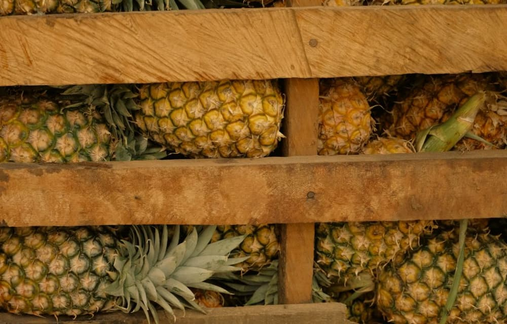
🍰 Desserts & Pâtisseries
Ananas Monte-Carlo
🇲🇨 Monaco — cuisine monégasque 👑 Grande cuisine des palaces · Monte-Carlo
Ingrédients (4 personnes)
- 1 gros ananas mûr avec son plumet
- 500g de glace vanille
- 100g de cerises confites
- 10cl de Grand-Marnier
- 3 blancs d'œufs
- 150g de sucre.
Préparation
- Découper le chapeau de l'ananas à 3 cm sous les feuilles.
- Évider l'intérieur au couteau long sans percer la peau.
- Couper la chair en dés de 5 mm et les faire macérer 30 minutes dans le Grand-Marnier.
- Mélanger les dés de fruits égouttés avec la glace vanille assouplie.
- Remplir la coque de l'ananas et bloquer au congélateur.
- Monter les blancs en neige ferme en incorporant le sucre à la fin pour obtenir une meringue compacte.
- À la poche, masquer le sommet de l'ananas de meringue en formant des pointes et y enfoncer les cerises confites.
- Passer sous le gril du four au maximum pendant 45 à 60 secondes pour dorer les pointes de la meringue.
- Servir immédiatement.
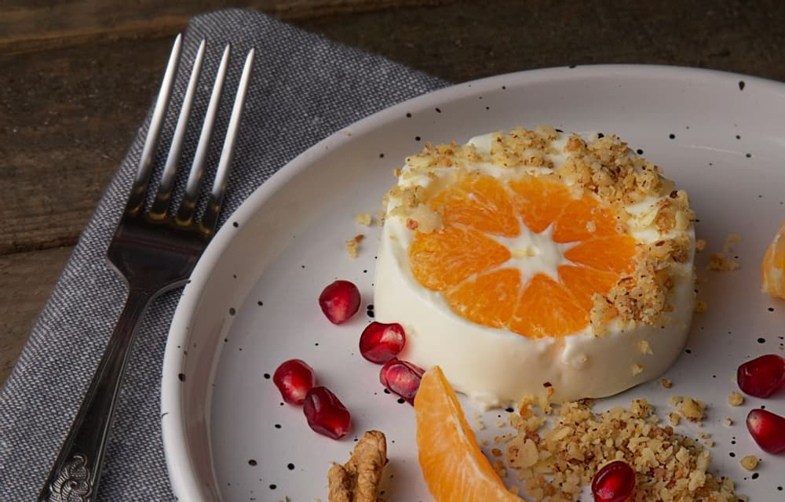
🍰 Desserts & Pâtisseries
Bavarois Monte-Carlo
🇲🇨 Monaco — cuisine monégasque 👑 Grande cuisine des palaces · Monte-Carlo
Ingrédients (6 personnes)
- 50cl de lait entier
- 4 jaunes d'œufs
- 100g de sucre
- 4 feuilles de gélatine (8g)
- 60g de pâte de pistache
- 25cl de crème liquide entière
- 150g de framboises
- 50g de sucre glace
- 30g de dragées blanches.
Préparation
- Ramollir la gélatine dans l'eau froide.
- Blanchir les jaunes d'œufs avec le sucre.
- Chauffer le lait, le verser sur les œufs en fouettant et cuire à feu doux à la nappe sans bouillir.
- Hors du feu, dissoudre la gélatine essorée et la pâte de pistache.
- Laisser refroidir.
- Monter la crème liquide en chantilly ferme et l'incorporer à la maryse.
- Verser dans un moule à bavarois et réserver 4 heures au frais.
- Mixer les framboises avec le sucre glace et filtrer au tamis pour faire un coulis rouge miroir.
- Démouler le bavarois vert, le napper de coulis rouge et décorer la base de dragées blanches concassées.
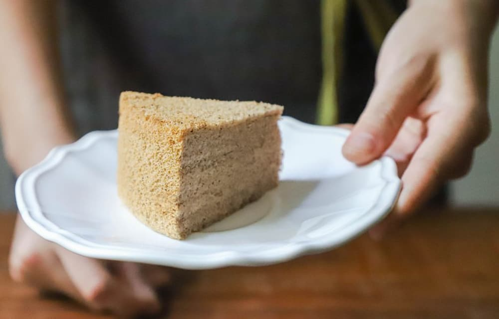
🍰 Desserts & Pâtisseries
Biscuit Monte-Carlo
🇲🇨 Monaco — cuisine monégasque 👑 Grande cuisine des palaces · Monte-Carlo
Ingrédients (12 pièces)
- 120g de farine
- 80g de sucre
- 30g de miel
- 2 œufs
- 40g de beurre fondu
- 30g de noix de coco râpée
- 1/2 sachet de levure. Garniture : 100g de confiture de framboises sans pépins
- 100g de beurre pommade
- 60g de sucre glace
- 1 cuillère à café d'extrait de vanille.
Préparation
- Blanchir les œufs avec le sucre et le miel.
- Ajouter le beurre fondu, puis la farine, la levure et la noix de coco.
- À la poche, dresser des disques de 5 cm sur une plaque avec papier sulfurisé.
- Cuire à 180°C pendant 8 à 10 minutes.
- Laisser refroidir.
- Battre le beurre pommade avec le sucre glace et la vanille au batteur électrique pour obtenir une crème blanche mousseuse.
- À la poche, dresser une collerette de crème au beurre sur le contour plat d'un biscuit, poser une cuillère de confiture au centre, puis refermer avec un second biscuit.
- Réserver au frais.

🍰 Desserts & Pâtisseries
Bombe Glacée Monaco
🇲🇨 Monaco — cuisine monégasque 👑 Grande cuisine des palaces · Monte-Carlo
Ingrédients (6 personnes)
- Enveloppe : 40cl de crème anglaise vanillée
- 2 cuillères à soupe d'eau de fleur d'oranger
- 20cl de crème chantilly. Cœur : 3 jaunes d'œufs
- 100g de sucre en sirop à 115°C
- 150g de purée de framboises filtrée
- 50g de fruits confits au kirsch
- 20cl de crème chantilly.
Préparation
- Mélanger la crème anglaise, la fleur d'oranger et la chantilly.
- Turbiner en sorbetière, puis chemiser les parois d'un moule à bombe sur 1,5 cm d'épaisseur.
- Bloquer au congélateur 1 heure.
- Pour le cœur, fouetter les jaunes d'œufs en versant le sirop de sucre chaud jusqu'à refroidissement complet.
- Incorporer la purée de framboises, les fruits confits au kirsch et les derniers 20cl de chantilly.
- Remplir le centre vide du moule avec ce parfait rouge.
- Sceller et congeler 6 heures.
- Démouler après un passage rapide du moule dans l'eau tiède.

🍰 Desserts & Pâtisseries
Bombe Monte-Carlo
🇲🇨 Monaco — cuisine monégasque 👑 Grande cuisine des palaces · Monte-Carlo
Ingrédients (6 personnes)
- Enveloppe : 40cl de crème anglaise
- 60g de pralin en poudre
- 20cl de crème chantilly. Cœur : 3 jaunes d'œufs
- 100g de sucre en sirop à 115°C
- 5cl de liqueur de curaçao blanc
- 20cl de crème chantilly.
Préparation
- Associer la crème anglaise, le pralin et la chantilly.
- Turbiner en sorbetière et chemiser l'intérieur du moule à bombe.
- Placer au congélateur.
- Pour le centre, battre les jaunes avec le sirop de sucre chaud au batteur jusqu'à consistance mousseuse et froide.
- Ajouter le curaçao blanc et la chantilly.
- Remplir le cœur du moule avec ce parfait blanc.
- Fermer le moule et congeler pendant au moins 6 heures avant de démouler.
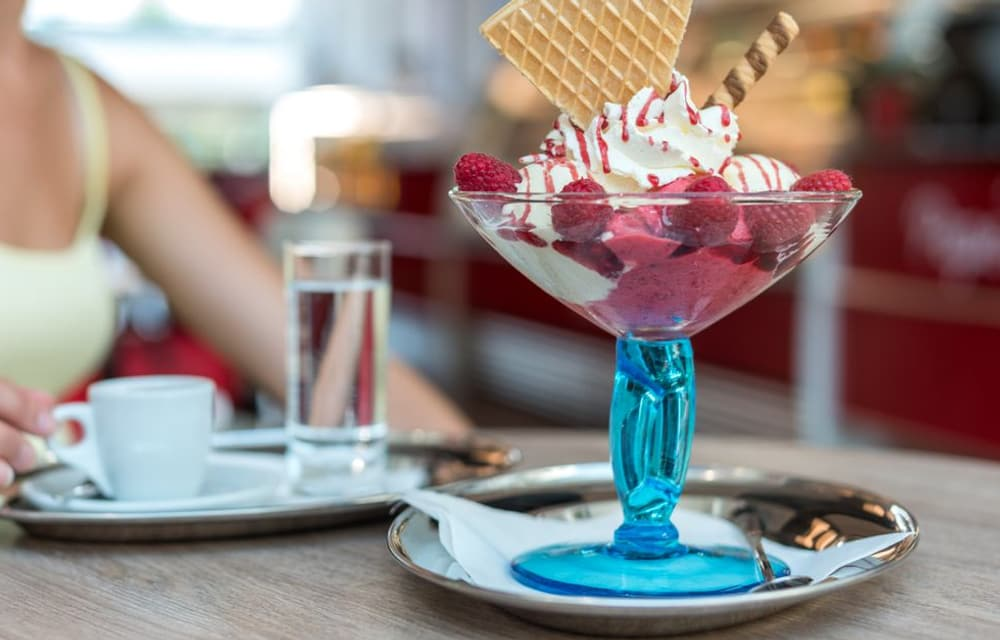
🍰 Desserts & Pâtisseries
Coupe Monte-Carlo
🇲🇨 Monaco — cuisine monégasque 👑 Grande cuisine des palaces · Monte-Carlo
Ce dessert rafraîchissant était servi lors des chaudes après-midis d'été sur les terrasses du Café de Paris. Les cuisiniers préparaient des dés de melons de Cavaillon et des pêches de la Riviera macérés au Grand-Marnier. Pour donner un air de fête digne de Monte-Carlo, la crème chantilly n'était pas blanche, mais délicatement teintée d'une couleur parme claire grâce à du sirop de violette pure. Une gourmandise florale et fruitée très élégante.
Ingrédients (4 personnes)
- 500g de glace vanille
- 1/2 melon
- 2 pêches jaunes
- 5cl de Grand Marnier
- 20cl de crème liquide entière
- 20g de sucre glace
- 1 cuillère à soupe de sirop de violette.
Préparation
- Couper le melon et les pêches épluchées en dés de 1 cm.
- Les faire macérer 20 minutes au frais avec le Grand Marnier.
- Monter la crème liquide en chantilly ferme avec le sucre glace et le sirop de violette pour lui donner une teinte parme claire.
- Dans des coupes en cristal, disposer deux boules de glace vanille.
- Répartir les dés de fruits macérés tout autour, puis surmonter d'une rosace de chantilly à la violette à l'aide d'une poche douille cannelée.
- Servir immédiatement.
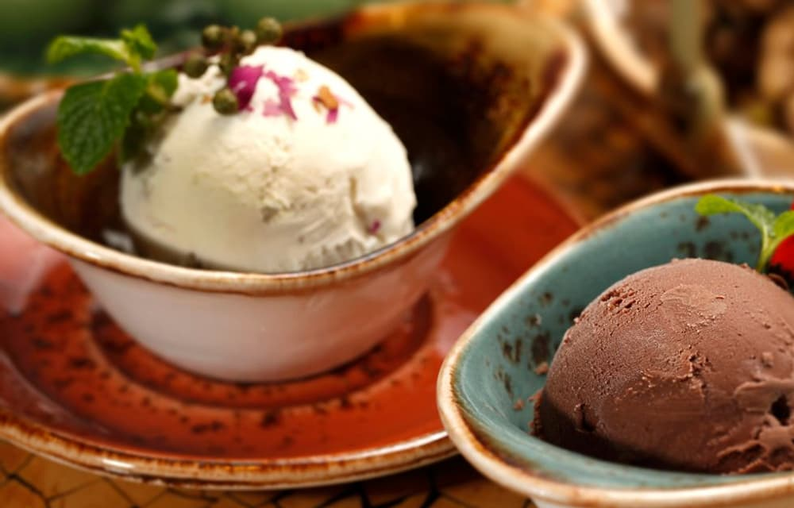
🍰 Desserts & Pâtisseries
Crème Glacée Monte-Carlo
🇲🇨 Monaco — cuisine monégasque 👑 Grande cuisine des palaces · Monte-Carlo
Ingrédients (6 personnes)
- 40cl de lait entier
- 10cl de crème fraîche
- 5 jaunes d'œufs
- 120g de sucre
- 50g de pâte de pistache
- 80g de coulis de framboises épais
- 40g de pralines roses concassées.
Préparation
- Blanchir les jaunes avec le sucre.
- Chauffer le lait et la crème, verser sur les œufs et cuire à la nappe à feu doux sans faire bouillir.
- Incorporer la pâte de pistache hors du feu.
- Laisser refroidir et turbiner en sorbetière.
- Lorsque la glace est encore souple à la sortie de la turbine, y incorporer délicatement le coulis de framboises en filet et les pralines roses pour créer un effet marbré vert et rose.
- Bloquer au congélateur.
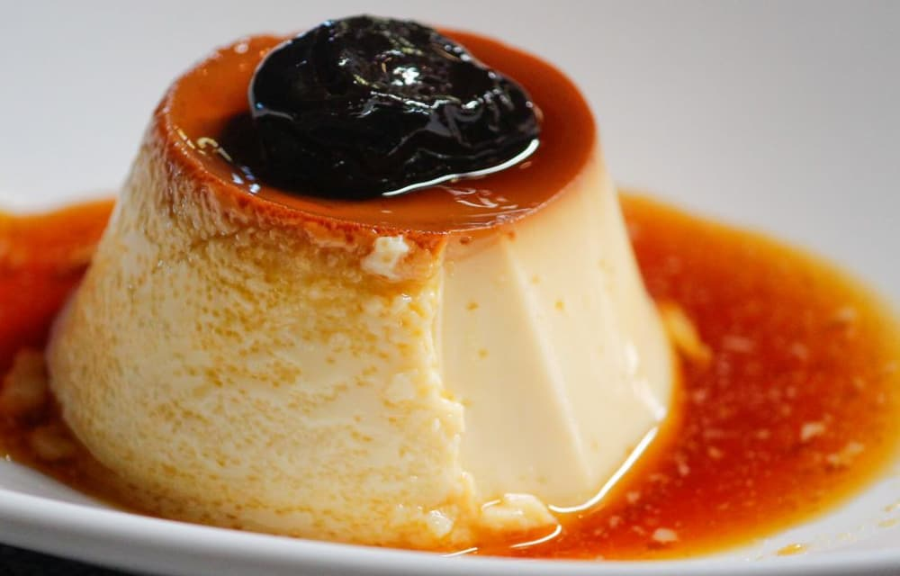
🍰 Desserts & Pâtisseries
Crème Renversée à la Monégasque
🇲🇨 Monaco — cuisine monégasque 🏡 Terroir monégasque
C’est le flan familial du dimanche sur le Rocher, revisité avec les parfums typiques de la Principauté. Au lieu du caramel classique à l'eau, les mères de famille monégasques utilisaient du sirop de mandarine locale pour napper le moule. L'appareil aux œufs, infusé au zeste de citron et à l'eau de fleur d'oranger, cuisait doucement au bain-marie, offrant un dessert d'une douceur incroyable aux accents d'agrumes.
Ingrédients (6 personnes)
- 50cl de lait entier
- 4 œufs
- 100g de sucre
- 1 cuillère à soupe d'eau de fleur d'oranger
- le zeste de 1/2 citron. Caramel : 100g de sucre
- 3cl de sirop de mandarine.
Préparation
- Cuire le sucre et le sirop de mandarine en caramel blond.
- En napper le fond d'un moule.
- Chauffer le lait avec le zeste de citron.
- Fouetter les œufs et le sucre sans faire mousser, ajouter la fleur d'oranger, puis verser le lait chaud filtré.
- Verser dans le moule caramélisé.
- Cuire au bain-marie au four à 160°C pendant 40 à 45 minutes.
- Laisser refroidir et réserver 4 heures au frais avant de démouler.

🍰 Desserts & Pâtisseries
Crêpes Monte-Carlo
🇲🇨 Monaco — cuisine monégasque 👑 Grande cuisine des palaces · Monte-Carlo
Une création née pour rivaliser avec la célèbre crêpe Suzette. Dans cette version de palace, la pâte à crêpes était parfumée aux zestes de mandarines de pays. Chaque crêpe était garnie d'une crème pâtissière froide dans laquelle on avait incorporé des macarons à l'ancienne écrasés. Pliées en quatre et saupoudrées de sucre, elles étaient caramélisées à table par le maître d'hôtel à l'aide d'un fer rougi au feu de bois.
Ingrédients (4 personnes)
- Pâte : 200g de farine
- 3 œufs
- 50cl de lait
- 20g de beurre fondu
- le zeste d'une mandarine. Garniture : 30cl de crème pâtissière
- 6 macarons à l'ancienne écrasés
- sucre glace.
Préparation
- Mélanger les ingrédients de la pâte, laisser reposer 30 minutes et cuire des crêpes fines au beurre.
- Incorporer les macarons écrasés en miettes dans la crème pâtissière froide.
- Tartiner chaque crêpe de cette crème, puis les plier en quatre.
- Disposer sur un plat, saupoudrer généreusement de sucre glace et passer un fer rougi au feu (ou un chalumeau) pour caraméliser instantanément.
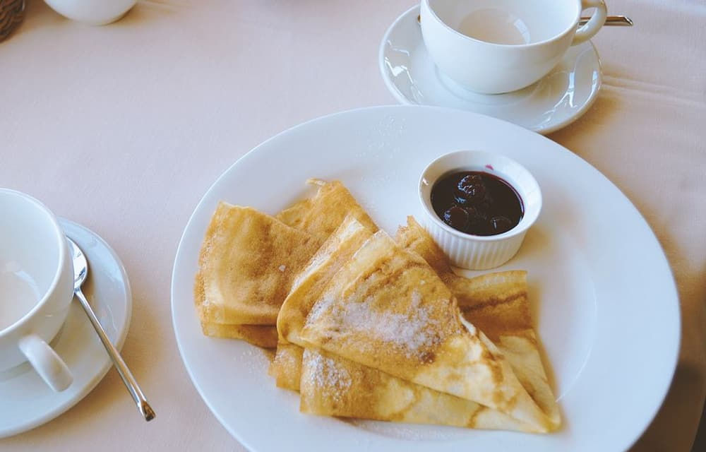
🍰 Desserts & Pâtisseries
Crêpes Soufflées Monte-Carlo
🇲🇨 Monaco — cuisine monégasque 👑 Grande cuisine des palaces · Monte-Carlo
Un spectacle visuel qui émerveillait la clientèle internationale des grands hôtels. Les crêpes fines étaient garnies d'un appareil à soufflé au Grand-Marnier très léger, puis pliées en triangles sans jamais écraser la farce. Enfournées à la minute, les crêpes gonflaient sous l'effet de la chaleur, offrant un dessert soufflé aérien, croustillant à l'extérieur et fondant au cœur.
Ingrédients (4 personnes)
- 8 crêpes fines cuites au beurre. Soufflé : 3 blancs d'œufs
- 3 jaunes d'œufs
- 80g de sucre
- 25g de farine
- 20cl de lait
- 4cl de Grand-Marnier
- sucre glace.
Préparation
- Faire une crème pâtissière épaisse en cuisant le lait, les jaunes, la farine et le sucre.
- Ajouter le Grand-Marnier hors du feu.
- Monter les blancs en neige ferme et les incorporer délicatement à la crème tiède.
- Étaler une belle cuillère de cet appareil sur la moitié de chaque crêpe, puis replier en quatre en triangle sans écraser.
- Ranger sur une plaque beurrée et cuire à 190°C pendant 6 à 8 minutes jusqu'à ce que les crêpes gonflent.
- Poudrer de sucre glace.

🍰 Desserts & Pâtisseries
Fraises à la Monte-Carlo (ou Fraises Monte-Carlo)
🇲🇨 Monaco — cuisine monégasque 👑 Grande cuisine des palaces · Monte-Carlo
Ingrédients (4 personnes)
- 400g de fraises des bois
- 3cl de kirsch
- 3cl de curaçao
- le jus de 1 orange
- 500g de glace vanille
- 20cl de crème chantilly
- 30g de pistaches vertes hachées.
Préparation
- Équeuter les fraises.
- Les faire macérer 30 minutes au frais avec le kirsch, le curaçao et le jus d'orange.
- Dans des coupes, disposer un lit de glace vanille.
- Répartir les fraises macérées par-dessus avec un peu de jus.
- À la poche, border le verre d'une rosace de crème chantilly et saupoudrer de pistaches hachées.
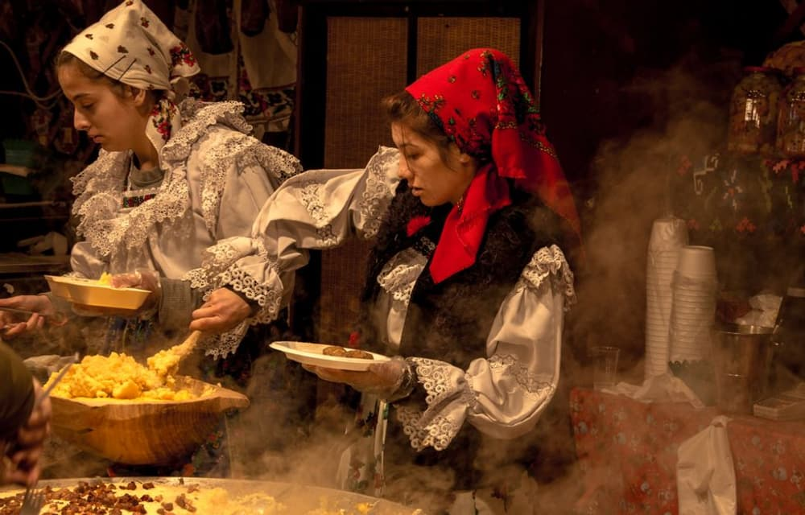
🍰 Desserts & Pâtisseries
Le Galapian de Monaco
🇲🇨 Monaco — cuisine monégasque 🏡 Terroir monégasque
Préparation
- Préparer une pâte sablée (beurre, sucre glace, poudre d'amandes, œuf, farine, vanille) et en foncer un moule.
- Disposer sur le fond des tranches fines de melon confit (3 mm).
- Recouvrir d'un appareil aux amandes (blancs d'œufs montés, sucre, poudre d'amandes) formé en dôme.
- Décorer de cerises confites et d'angélique.
- Cuire à 220°C pendant 12 à 15 minutes.
- Une fois cuit, lustrer d'un sirop de miel (miel de lavande + eau).
Méthode d'après : Julie Andrieu / Les Fleurons d'Apt
ℹ️ Le « galapian » est en réalité une spécialité d'Apt (Vaucluse), créée en octobre 1994 par le pâtissier Alain Bouchard à la demande de la Confrérie du Fruit Confit d'Apt.
🥣Tome 2
Les Potages, Consommés & Soupes Claires

🥣 Potages & Soupes
Consommés Alexandra Monte-Carlo
🇲🇨 Monaco — cuisine monégasque 👑 Grande cuisine des palaces · Monte-Carlo
Ingrédients (4 personnes)
- 1 litre de bouillon de volaille
- 2 cailles
- 3 jaunes d'œufs
- 5cl de crème liquide
- 10cl de purée d'asperges vertes
- 30g de parmesan râpé
- sel
- poivre.
Préparation
- Rôtir les cailles au four.
- Mettre les carcasses et les sucs dans le bouillon de volaille et mijoter 45 minutes pour corser le tout.
- Filtrer au tamis de soie.
- Faire la royale d'asperges : mélanger les jaunes, la crème et la purée d'asperges.
- Cuire au bain-marie à 120°C pendant 20 minutes jusqu'à ce que ce soit pris, puis couper en petits dés après refroidissement.
- Faire des paillettes de parmesan en étalant le fromage sur une plaque et en le dorant au four.
- Servir le consommé brûlant avec les dés de royale et les paillettes.
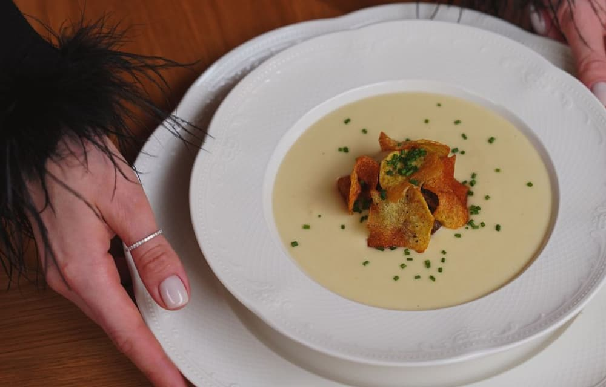
🥣 Potages & Soupes
Consommé Alexandra Monte-Carlo
🇲🇨 Monaco — cuisine monégasque 👑 Grande cuisine des palaces · Monte-Carlo
Ce consommé royal a été baptisé en l'honneur de la reine Alexandra, épouse du roi Édouard VII d'Angleterre, qui aimait passer ses hivers sur la Côte d'Azur et dînait souvent à Monte-Carlo. Pour plaire à la souveraine, les cuisiniers ont corsé un bouillon de volaille avec des cailles rôties. La "royale d'asperges" apportait une texture fondante sur la langue, tandis que les paillettes de parmesan dorées rappelaient la proximité et l'influence de l'Italie.
Ingrédients (pour 4 personnes)
- 1 litre de bouillon de volaille
- 2 cailles prêtes à cuire
- 3 jaunes d'œufs
- 5cl de crème liquide entière
- 10cl de purée d'asperges vertes fine
- 30g de parmesan râpé
- sel fin
- poivre du moulin.
Préparation
- 1.
- Préchauffez le four à 200°C et faites rôtir les cailles pendant 15 minutes.
- Lorsqu'elles sont bien dorées, levez les filets et réservez-les.
- Récupérez toutes les carcasses et les sucs de cuisson du plat.
- 2.
- Jetez les carcasses écrasées et les sucs dans le bouillon de volaille.
- Portez à ébullition, puis baissez le feu et laissez mijoter à petits frémissements pendant 45 minutes pour corser le bouillon.
- Filtrez le tout à travers un tamis de soie ou un linge fin.
- 3.
- Préparez la royale d'asperges : dans un bol, fouettez énergiquement les jaunes d'œufs, la crème liquide et la purée d'asperges vertes.
- Salez et poivrez.
- 4.
- Versez cette préparation dans un petit moule plat (sur une épaisseur d'un centimètre).
- Faites cuire au bain-marie dans un four préchauffé à 120°C pendant 20 minutes jusqu'à ce que l'appareil soit parfaitement pris.
- Laissez refroidir complètement, puis découpez la royale en petits dés réguliers.
- 5.
- Préparez les paillettes : mélangez le parmesan râpé avec une cuillère à soupe de blanc d'œuf.
- Étalez ce mélange très finement sur une plaque recouverte de papier sulfurisé et faites dorer au four pendant 5 minutes.
- Laissez refroidir et cassez en éclats (paillettes).
- 6.
- Pour le service : répartissez les dés de royale d'asperges et les filets de cailles coupés en morceaux au fond de la soupière.
- Versez le consommé de caille brûlant par-dessus et parsemez de paillettes de parmesan croustillantes au dernier moment.

🥣 Potages & Soupes
Consommé à la Monégasque (Formule du XIXe siècle)
🇲🇨 Monaco — cuisine monégasque 👑 Grande cuisine des palaces · Monte-Carlo
Dans le Monaco du XIXe siècle, les dimanches d'hiver étaient souvent l'occasion de préparer un grand pot-au-feu avec du paleron de bœuf. Les chasseurs du Rocher y ajoutaient parfois un perdreau pour corser le bouillon. La grande originalité de votre grand-père était d'y jeter, au moment du service, de minuscules ravioles de blettes et de moelle de bœuf pochée. C'était le potage de fête par excellence des grandes familles monégasques.
Ingrédients (pour 4 personnes)
- 1 kg de paleron de bœuf
- 1 carcasse de perdreau rôti
- 2 carottes
- 1 poireau
- 1 oignon piqué d'un clou de girofle
- 100g de pâte à ravioles fine
- 100g de feuilles de blettes (vert uniquement)
- 30g de moelle de bœuf
- sel fin.
Préparation
- 1.
- Placez le paleron de bœuf, la carcasse de perdreau et tous les légumes dans une grande marmite d'eau froide salée.
- Portez lentement à ébullition.
- 2.
- Écumez soigneusement la surface dès les premiers bouillons.
- Baissez le feu au minimum et laissez mijoter très doucement pendant 4 heures à découvert pour obtenir un consommé double bien concentré.
- 3.
- Clarifiez le bouillon chaud en y versant un blanc d'œuf battu, portez à ébullition sans remuer pour que le blanc emprisonne les impuretés, puis filtrez à travers une étamine fine.
- 4.
- Préparez la garniture : lavez le vert des blettes et hachez-le très finement.
- Faites-le suer à la poêle avec une noisette de beurre pendant 5 minutes.
- Faites pocher la moelle de bœuf dans un peu de bouillon chaud pendant 3 minutes, puis écrasez-la à la fourchette et mélangez-la aux blettes refroidies.
- Saler et poivrer.
- 5.
- Étalez la pâte à ravioles.
- Déposez de minuscules tas de farce aux blettes, repliez la pâte et découpez de très petits raviolis carrés.
- Faites-les pocher séparément dans une casserole d'eau bouillante salée pendant 3 minutes, puis égouttez-les.
- 6.
- Glissez les mini-ravioles égouttées directement dans le consommé limpide et brûlant juste avant de porter à table.
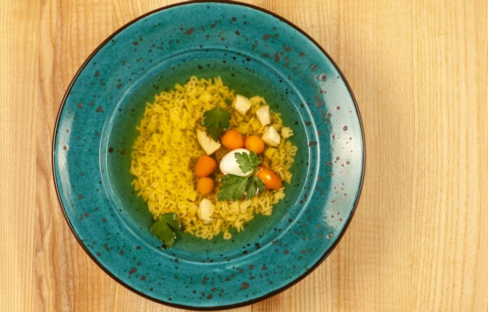
🥣 Potages & Soupes
Consommé à la Monégasque (Variante au Pesto)
🇲🇨 Monaco — cuisine monégasque 👑 Grande cuisine des palaces · Monte-Carlo
Ce bouillon incarne la cuisine d'été du port de Monaco. Les petites pâtes rondes, appelées "perles" ou "plombs", étaient cuites directement dans le bouillon de volaille. Au moment de servir dans les soupières, on y ajoutait une généreuse cuillère de pisto frais (la version locale du pesto, sans pignons parfois, mais toujours avec beaucoup d'ail et de basilic broyés à l'huile d'olive). En se dissolvant dans le bouillon brûlant, le pisto libérait un parfum qui embaumait toute la salle à manger.
Ingrédients (pour 4 personnes)
- 1 litre de bouillon de volaille clarifié et dégraissé
- 50g de petites pâtes rondes (type "perles"). Pour le pisto frais : 1 bouquet de basilic frais
- 2 gousses d'ail
- 20g de pignons de pin
- 5cl d'huile d'olive vierge
- 30g de parmesan râpé
- sel fin.
Préparation
- 1.
- Portez le bouillon de volaille clarifié à ébullition dans une casserole.
- Jetez-y les pâtes "perles" et laissez-les cuire à petits bouillons pendant le temps indiqué sur le paquet (environ 7 à 8 minutes) pour qu'elles restent légèrement al dente.
- 2.
- Pendant la cuisson des pâtes, préparez le pisto traditionnel de la Riviera : pelez les gousses d'ail et retirez le germe.
- Dans un mortier en marbre, pilez les gousses d'ail avec une pincée de sel fin et les pignons de pin jusqu'à obtenir une pâte compacte.
- 3.
- Ajoutez les feuilles de basilic frais préalablement lavées et séchées.
- Broyez-les énergiquement contre les parois du mortier en effectuant des mouvements circulaires jusqu'à ce que les feuilles soient totalement réduites en purée verte.
- 4.
- Incorporez le parmesan râpé, puis versez l'huile d'olive vierge en un mince filet tout en continuant de tourner avec le pilon pour monter et lier l'émulsion.
- 5.
- Pour le dressage : répartissez le consommé brûlant avec ses petites pâtes perles dans des assiettes creuses.
- 6.
- Déposez délicatement une belle cuillère à café de pisto frais au centre de chaque assiette.
- Servez immédiatement ; les convives mélangeront eux-mêmes la pommade au basilic dans le bouillon chaud pour libérer tous les parfums.
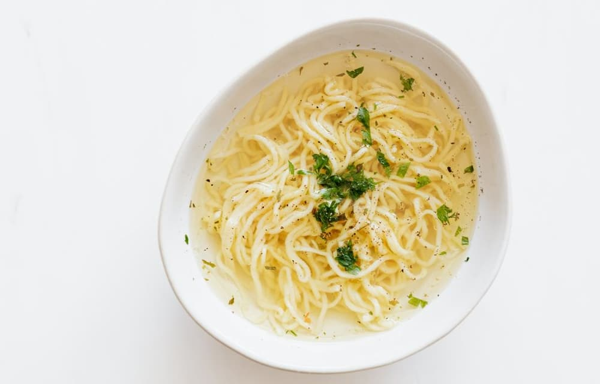
🥣 Potages & Soupes
Consommé Châtelaine Monte-Carlo
🇲🇨 Monaco — cuisine monégasque 👑 Grande cuisine des palaces · Monte-Carlo
Le style "Châtelaine" en Haute Cuisine exige toujours l'utilisation de marrons et de céleri. À Monte-Carlo, cette formule est devenue un classique des dîners de chasse automnaux. Le bouillon de volaille était longuement infusé avec du céleri branche, puis clarifié. Les dés de royale de marrons de l'arrière-pays et la fine julienne de chapon truffé en faisaient un potage lourd en arômes mais d'une légèreté absolue en bouche, très prisé des gourmets de l'époque.
Ingrédients (pour 4 personnes)
- 1 litre de bouillon de volaille ambré
- 1 pied de céleri branche
- 3 jaunes d'œufs
- 10cl de purée de marrons de l'arrière-pays (nature, non sucrée)
- 5cl de lait entier
- 1 truffe noire fraîche
- 80g de blanc de chapon cuit
- sel fin
- poivre.
Préparation
- 1.
- Lavez et émincez finement le pied de céleri branche.
- Jetez-le dans le bouillon de volaille chaud, portez à frémissement, puis éteignez le feu.
- Laissez infuser à couvert pendant 30 minutes pour parfumer le bouillon, puis filtrez pour obtenir un liquide limpide.
- 2.
- Préparez la royale de marrons : dans un saladier, mélangez vigoureusement les jaunes d'œufs, la purée de marrons nature et le lait jusqu'à obtenir un appareil lisse.
- Assaisonnez d'une pincée de sel.
- 3.
- Versez la préparation dans un ramequin beurré.
- Faites cuire au bain-marie dans un four préchauffé à 130°C pendant 25 minutes.
- Laissez refroidir complètement à température ambiante, puis démoulez la royale et taillez-la en petits cubes réguliers de 5 mm.
- 4.
- À l'aide d'un couteau très bien aiguisé, taillez la truffe noire fraîche et le blanc de chapon cuit en une julienne d'une finesse extrême (fins filaments).
- 5.
- Au moment du service, disposez les cubes de royale de marrons, la julienne de chapon et les filaments de truffe noire au fond d'une soupière chaude.
- Verser délicatement le consommé de céleri bouillant par-dessus et servez.
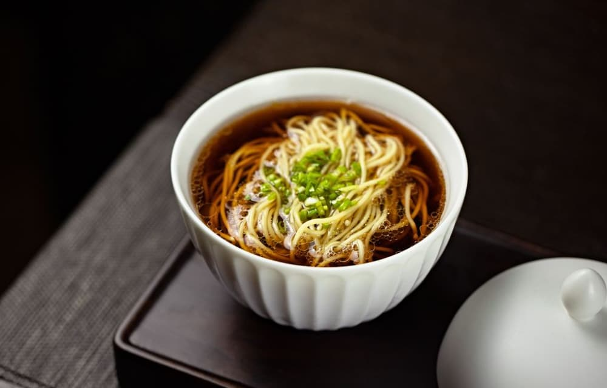
🥣 Potages & Soupes
Consommé Monaco
🇲🇨 Monaco — cuisine monégasque 👑 Grande cuisine des palaces · Monte-Carlo
Ce consommé lié et perlé au tapioca (appelé à l'époque perles du Japon) était le potage officiel servi lors des fêtes nationales ou des réceptions au Palais de Monaco. La brunoise de légumes colorés et les dés de truffe noire flottaient parmi les perles transparentes, créant un effet visuel magique. Pour parfaire ce chef-d'œuvre, on jetait au dernier moment de mini-profiteroles en pâte à choux qui restaient croustillantes à la surface du bouillon.
Ingrédients (pour 4 personnes)
- 1 litre de bouillon de volaille légèrement lié (type velouté léger)
- 1 petite carotte
- 1 petit navet
- 1 truffe noire fraîche
- 20g de perles du Japon (tapioca)
- 10 petites profiteroles vides en pâte à choux (taille d'une noisette)
- sel.
Préparation
- 1.
- Épluchez la carotte et le navet.
- Taillez-les avec patience en une minuscule brunoise (dés microscopiques d'un millimètre de côté).
- Faites-les pocher à blanc dans une petite casserole d'eau bouillante salée pendant 5 minutes pour qu'ils soient tendres, puis égouttez-les.
- 2.
- Portez une casserole d'eau à ébullition et jetez-y les perles du Japon.
- Laissez-les cuire à petits bouillons pendant une quinzaine de minutes jusqu'à ce qu'elles deviennent totalement transparentes.
- Égouttez-les et passez-les sous l'eau froide pour stopper la cuisson.
- 3.
- Brossez la truffe noire et taillez-la également en petits dés de la même taille que les légumes.
- 4.
- Faites chauffer le bouillon de volaille légèrement lié dans une grande casserole.
- Ajoutez-y les perles du Japon cuites, la brunoise de carotte et navet, ainsi que les dés de truffe noire.
- Laissez frémir pendant 2 minutes pour infuser les saveurs.
- 5.
- Juste au moment de porter la soupière sur la table, jetez les petites profiteroles vides et bien croustillantes directement dans le bouillon chaud pour qu'elles flottent à la surface.
- Servir immédiatement pour que les choux gardent du croquant.
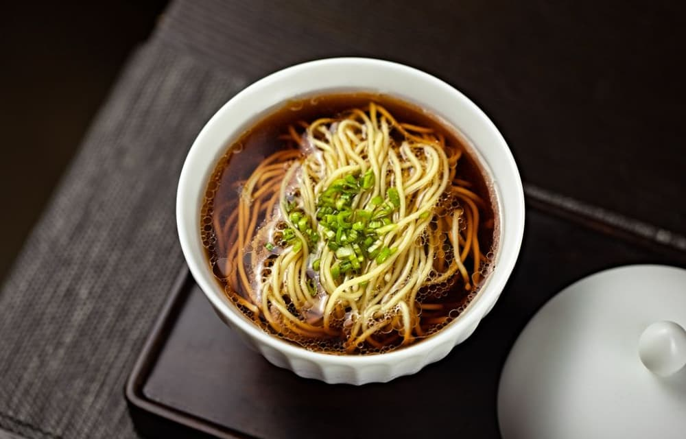
🥣 Potages & Soupes
Consommé Monte-Carlo
🇲🇨 Monaco — cuisine monégasque 👑 Grande cuisine des palaces · Monte-Carlo
Un grand classique imaginé par Auguste Escoffier pour la clientèle internationale du Casino. Après les longues soirées de jeu, les riches hivernants réclamaient un bouillon léger pour apaiser l'estomac. Ce consommé de volaille était clarifié au blanc d'œuf jusqu'à devenir aussi transparent que du cristal. La chiffonnade de laitue blanchie et les pluches de cerfeuil apportaient une touche de verdure printanière, et les mini-profiteroles étaient servies à part pour que chacun gère son croquant.
Ingrédients (pour 4 personnes)
- 1 litre de bouillon de volaille riche
- 1 blanc d'œuf frais (pour la clarification)
- 1/2 laitue romaine
- 1 petit bouquet de cerfeuil frais
- 10 mini-profiteroles sèches en pâte à choux
- sel fin.
Préparation
- 1.
- Pour garantir la limpidité parfaite exigée dans les palaces, clarifiez le bouillon : battez le blanc d'œuf dans le bouillon de volaille froid.
- Portez le tout à ébullition à feu moyen sans jamais remuer.
- Le blanc d'œuf va coaguler, monter et emprisonner toutes les impuretés en formant une croûte à la surface.
- 2.
- Retirez délicatement cette croûte à l'écumoire et filtrez le consommé à travers un entonnoir garni d'une étamine ou d'un linge fin propre.
- Le bouillon doit être parfaitement limpide.
- 3.
- Lavez la demi-laitue et émincez-la en une très fine chiffonnade.
- Plongez cette chiffonnade pendant 1 minute seulement dans de l'eau bouillante salée pour la blanchir, puis rafraîchissez-la immédiatement dans de l'eau glacée pour fixer sa couleur.
- Égouttez-les en pressant dans vos mains.
- 4.
- Lavez et effeuillez le cerfeuil frais pour ne garder que les petites pluches.
- 5.
- Dans les tasses à consommé ou les assiettes creuses, répartissez la chiffonnade de laitue bien essorée et les pluches de cerfeuil sauvage.
- Versez le consommé de volaille fumant par-dessus.
- 6.
- Servez les petites profiteroles bien sèches et croustillantes dans une assiette à part : les invités s'amuseront à les jeter eux-mêmes dans leur bouillon au dernier moment.
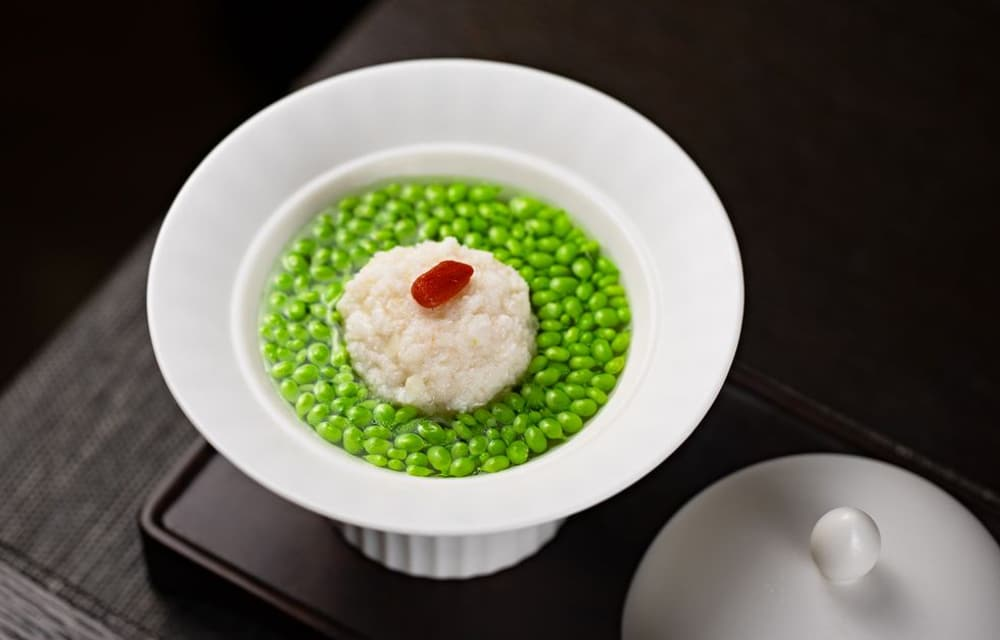
🥣 Potages & Soupes
Consommé aux nids d'hirondelles à la Monégasque
🇲🇨 Monaco — cuisine monégasque 👑 Grande cuisine des palaces · Monte-Carlo
Au tournant du XXe siècle, la Belle Époque s'est entichée de produits exotiques venus d'Asie. Les nids d'hirondelles (des structures gélatineuses très rares) étaient importés à prix d'or pour les tables de Monte-Carlo. Les chefs locaux ont christianisé ce bouillon asiatique en y ajoutant la touche princière de la Riviera : de grandes lames de truffe noire fraîche taillées en forme de losanges pour imiter le blason de Monaco. C’était le potage le plus cher de la Côte d'Azur.
Ingrédients (4 personnes)
- 1 litre de bouillon de volaille double
- 30g de nids d'hirondelles séchés
- 1 grosse truffe noire.
Préparation
- Tremper les nids d'hirondelles dans l'eau tiède pendant 2 heures pour qu'ils gonflent, puis les nettoyer des impuretés.
- Les pocher doucement dans le bouillon pendant 30 minutes jusqu'à ce qu'ils soient fondants.
- Couper la truffe en tranches puis en losanges réguliers (forme du blason).
- Mettre les nids d'hirondelles et les losanges de truffe dans les assiettes, verser le bouillon bouillant filtré.
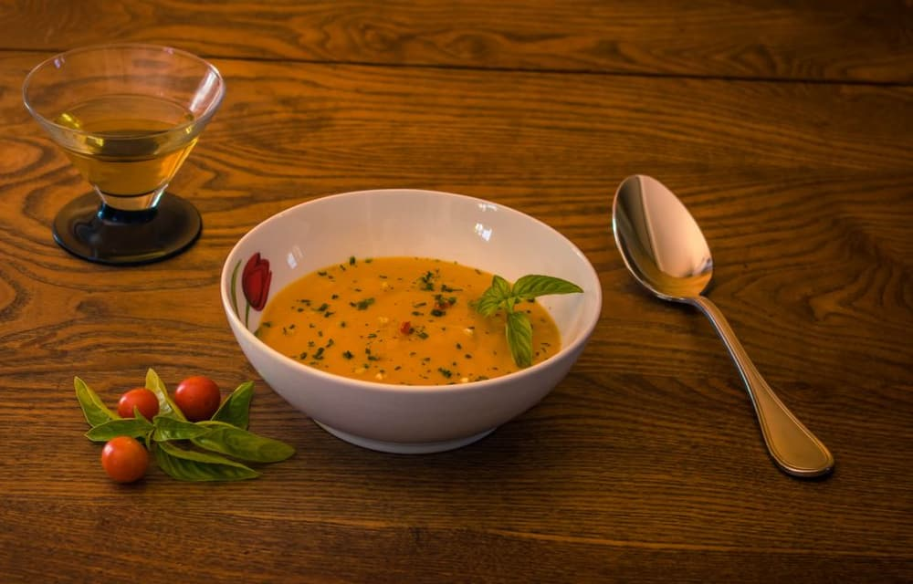
🥣 Potages & Soupes
Consommé Princesse de Monaco
🇲🇨 Monaco — cuisine monégasque 👑 Grande cuisine des palaces · Monte-Carlo
Dédié aux princesses de la Maison Grimaldi, ce consommé d'une grande délicatesse exigeait un travail d'orfèvre en cuisine. La carotte et la courgette étaient sculptées à la cuillère parisienne pour obtenir des billes microscopiques, symbolisant des perles précieuses. Accompagné de dés de royale d'asperges blanches et de blancs de volaille, ce potage d'une blancheur immaculée ouvrait les dîners de gala au Palais Princier.
Ingrédients (4 personnes)
- 1 litre de bouillon de volaille
- 2 blancs d'œufs
- 3 jaunes d'œufs
- 10cl de purée d'asperges blanches
- 5cl de crème
- 1 carotte
- 1 courgette
- 80g de blanc de volaille cuit.
Préparation
- Clarifier le bouillon avec les blancs d'œufs et filtrer.
- Faire la royale : mélanger les jaunes, la purée d'asperges et la crème.
- Cuire au bain-marie à 120°C pendant 20 minutes, puis couper en petits dés.
- Faire de petites perles de carotte et courgette à la cuillère parisienne et les cuire à l'eau.
- Couper la volaille en dés.
- Assembler la royale, les perles de légumes et la volaille, puis verser le consommé brûlant.
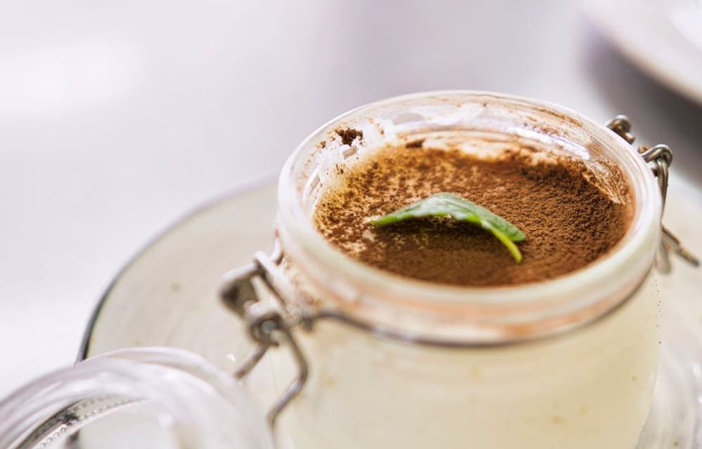
🥣 Potages & Soupes
Crème Monte-Carlo
🇲🇨 Monaco — cuisine monégasque 👑 Grande cuisine des palaces · Monte-Carlo
Ce velouté onctueux est né de la cueillette des cèpes dans les forêts des Alpes-Maritimes. Les chefs de palace achetaient ces champignons aux montagnards descendus à Monaco. Le velouté de volaille et de cèpes était passé à travers un tamis de soie pour obtenir une texture de crème unie sans aucune fibre. Liée aux jaunes d'œufs et enrichie de croûtons frits au beurre de truffe, cette crème était le réconfort des journées d'hiver pluvieuses sur la Riviera.
Ingrédients (4 personnes)
- 300g de blancs de volaille
- 200g de cèpes
- 40g de beurre de truffe
- 1 litre de bouillon de volaille
- 3 jaunes d'œufs
- 15cl de crème liquide
- mini-croûtons.
Préparation
- Pocher la volaille dans le bouillon.
- Sauter les cèpes émincés dans la moitié du beurre de truffe.
- Mixer la volaille et les cèpes avec le bouillon de cuisson, puis passer au tamis fin pour faire un velouté lisse.
- Battre les jaunes avec la crème.
- Verser dans le velouté chaud hors du feu en fouettant.
- Frire les croûtons dans le reste de beurre de truffe et les ajouter sur la crème chaude.
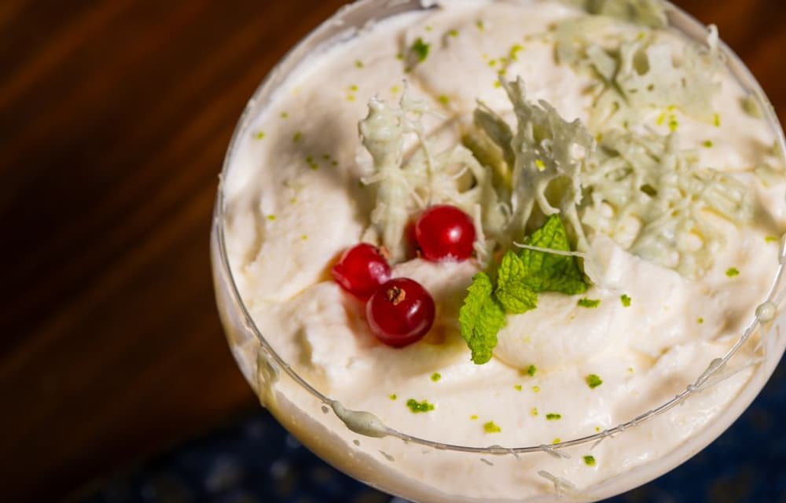
🥣 Potages & Soupes
Crème de Volaille à la Monégasque
🇲🇨 Monaco — cuisine monégasque 👑 Grande cuisine des palaces · Monte-Carlo
C'est la version bourgeoise et enrichie du velouté de volaille. Les carnets de votre grand-père rappellent que le secret de cette crème réside dans sa garniture tricolore ajoutée au dernier moment. Les filaments de jambon cru de pays apportaient le goût salé et rustique, les champignons la douceur, et la truffe noire le faste des grandes tables. Une entrée très douce qui plaisait beaucoup aux dames lors des déjeuners mondains.
Ingrédients (4 personnes)
- 1 litre de velouté de volaille (bouillon lié au roux)
- 2 jaunes d'œufs
- 10cl de crème fraîche
- 50g de jambon cru
- 50g de champignons
- 1 truffe noire.
Préparation
- Chauffer le velouté.
- Mélanger les jaunes et la crème, puis incorporer cette liaison au velouté chaud hors du feu en remuant pour obtenir une texture onctueuse.
- Couper le jambon, les champignons étuvés au beurre et la truffe en julienne très fine.
- Mettre cette julienne au fond des assiettes et verser la crème chaude par-dessus.

🥣 Potages & Soupes
Velouté Monte-Carlo
🇲🇨 Monaco — cuisine monégasque 👑 Grande cuisine des palaces · Monte-Carlo
Le gibier à plumes était très apprécié lors des banquets d'hiver à Monte-Carlo. Pour ce velouté de grand luxe, le faisan était d'abord rôti entier au four pour concentrer ses sucs. Sa chair était ensuite mixée avec une poudre fine d'amandes amères, une technique ancienne qui apportait une douceur subtile masquant la force de la venaison. Agrémenté de petites perles de truffe noire, ce velouté était servi dans des tasses en porcelaine fine lors des soupers fins après le Casino.
Ingrédients (4 personnes)
- 1 faisan
- 1 carotte
- 1 oignon
- 1 bouquet garni
- 50g de poudre d'amandes amères
- 1 litre de bouillon de gibier
- 30g de beurre de truffe
- 1 truffe noire.
Préparation
- Rôtir le faisan au four avec la carotte et l'oignon.
- Le désosser et garder la chair.
- Cuire la carcasse dans le bouillon de gibier avec le bouquet garni 30 minutes, puis filtrer.
- Mixer la chair du faisan avec la poudre d'amandes et le bouillon chaud.
- Passer au tamis de soie.
- Chauffer, ajouter le beurre de truffe pour lier.
- Couper la truffe fraîche en petites billes (perles) et les mettre dans le velouté chaud au moment de servir.
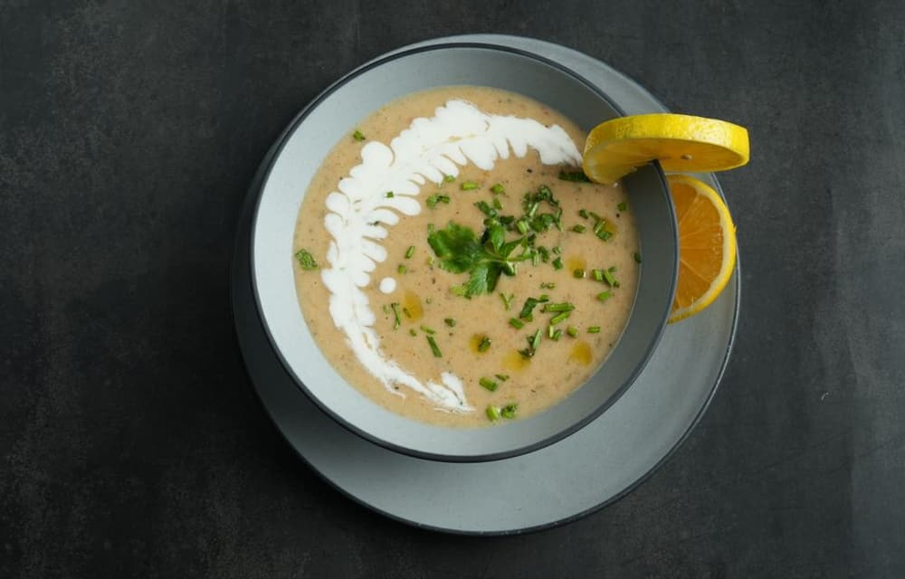
🥣 Potages & Soupes
Velouté des Princes de Monaco
🇲🇨 Monaco — cuisine monégasque 👑 Grande cuisine des palaces · Monte-Carlo
Ce potage d'une grande originalité s'inspire directement de la socca et de la panisse, ces spécialités à base de farine de pois chiches très populaires à Monaco. Les pois chiches étaient cuits longuement avec de la sauge fraîche, puis passés au tamis de crin pour obtenir une crème d'une douceur absolue, sans aucune peau. Monté au beurre fin et garni d'une julienne de truffe et de volaille, ce velouté rustique-chic était le trait d'union parfait entre le terroir populaire et la table des princes.
Ingrédients (4 personnes)
- 200g de pois chiches secs (trempés la veille)
- 1 litre de bouillon de veau blanc
- 1 oignon
- 1 branche de sauge
- 40g de beurre
- 1 truffe noire
- 80g de blanc de volaille cuit.
Préparation
- Cuire les pois chiches dans le bouillon de veau avec l'oignon et la sauge pendant 1h15.
- Retirer la sauge.
- Mixer longuement et passer au tamis fin pour enlever les peaux et obtenir une crème lisse.
- Chauffer, ajouter le beurre à la spatule pour lier.
- Couper la truffe et la volaille en julienne très fine.
- Mettre la julienne au centre des bols et verser le velouté chaud.
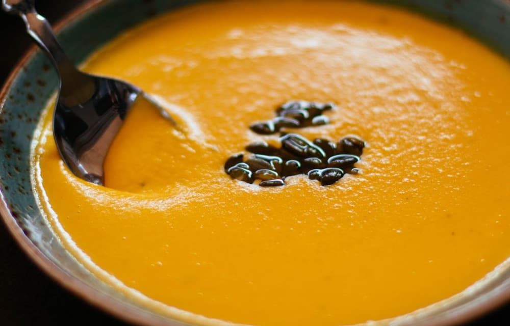
🥣 Potages & Soupes
Potage Velouté à la Monégasque
🇲🇨 Monaco — cuisine monégasque 👑 Grande cuisine des palaces · Monte-Carlo
Ce potage familial met à l'honneur les légumes des jardins de Menton et de Roquebrune : le poireau et la pomme de terre. Pour en faire un plat digne de Monaco, les cuisiniers remplaçaient le beurre ordinaire par une liaison finale à la crème double et, surtout, par un cordon d'huile d'olive d'un vert éclatant infusée au basilic frais pillé au mortier. C’était le mariage parfait entre la douceur de la soupe et la force de l'huile d'olive de pays.
Ingrédients (4 personnes)
- 3 blancs de poireaux
- 3 pommes de terre
- 50g de beurre
- 1 litre de bouillon de légumes
- 15cl de crème fraîche double
- 5cl d'huile d'olive
- 10 feuilles de basilic.
Préparation
- Suer les poireaux émincés au beurre sans coloration.
- Ajouter les pommes de terre en dés, le bouillon, le sel et le poivre.
- Cuire 25 minutes.
- Mixer et passer au tamis.
- Ajouter la crème double.
- Piler le basilic au mortier avec l'huile d'olive en filet pour faire une huile verte.
- Servir le velouté chaud avec un cordon d'huile de basilic sur le dessus.

🥣 Potages & Soupes
Potage à la Monégasque (XIXe siècle)
🇲🇨 Monaco — cuisine monégasque 👑 Grande cuisine des palaces · Monte-Carlo
Avant l'arrivée des palaces et du luxe, Monaco vivait de la pêche. Ce potage rustique du XIXe siècle était préparé par les familles de marins avec les petits poissons de roche invendus au marché du port. Le bouillon, fortement safrané et aillé, n'était pas mixé mais filtré, puis versé bouillant sur de grosses tranches de pain de campagne rassis frottées d'ail. C’était le repas chaud qui réchauffait les pêcheurs après les nuits en mer.
Ingrédients (4 personnes)
- 1 kg de poissons de roche
- 1 oignon
- 2 gousses d'ail
- 2 tomates
- 1 dosette de safran
- 1 baguette de pain
- 1 branche de fenouil sauvage
- 10cl d'huile d'olive.
Préparation
- Suer l'oignon et l'ail à l'huile d'olive.
- Ajouter les tomates concassées, le fenouil et les poissons de roche.
- Saisir 5 minutes en écrasant les poissons.
- Mouiller avec 2 litres d'eau bouillante, ajouter le safran et bouillir 30 minutes.
- Passer au moulin à légumes grille fine, puis filtrer.
- Frotter les tranches de pain d'ail et d'un filet d'huile.
- Les mettre au fond de la soupière et verser le bouillon bouillant par-dessus.
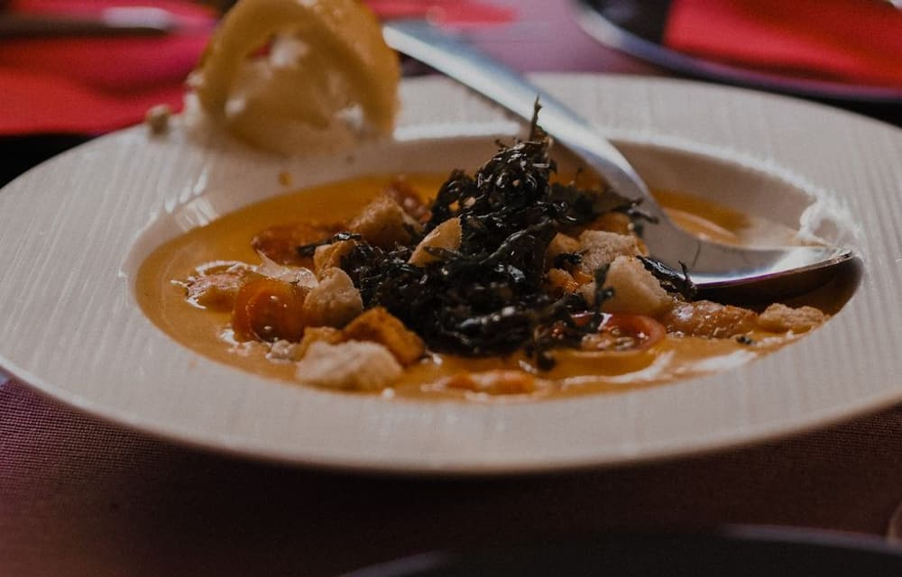
🥣 Potages & Soupes
Soupe de Poissons de Roche à la Monégasque
🇲🇨 Monaco — cuisine monégasque 🏡 Terroir monégasque
C’est la reine des soupes marines de la Principauté, la cousine monégasque de la bouillabaisse. Sa texture est beaucoup plus dense et liée que le potage au pain. Le grand secret des pêcheurs du Rocher, scrupuleusement consigné par votre grand-père, était de récupérer les foies des rougets de roche crus, de les écraser au pilon avec un filet d'huile d'olive et d'ajouter cette pommade directement dans le bouillon bouillant. C'est cette liaison aux foies qui donne à la soupe son goût puissant et sa texture veloutée unique.
📜 Méthode non retrouvée dans le manuscrit — ingrédients conservés fidèlement.
ℹ️ Jusqu'au XIXe siècle, la bouillabaisse était un plat de pêcheurs marseillais anti-gaspillage : on y cuisinait les poissons de roche abîmés, trop petits ou invendables au marché (rascasse, grondin, congre, saint-pierre…).
🥖Tome 3
Les Entrées, Hors-d'œuvre & l'Art des Œufs

🥖 Entrées, Œufs & Hors-d'œuvre
Canapés à la Monégasque
🇲🇨 Monaco — cuisine monégasque 👑 Grande cuisine des palaces · Monte-Carlo
Avec l'arrivée de la Haute Société britannique à Monte-Carlo vers 1880, la mode des "savouries" et des toasts apéritifs s'est installée dans la Principauté. Les cuisiniers locaux ont adapté cette tradition anglaise en créant un canapé mariant le thon blanc, le beurre d'anchois et l'œuf de caille. Ce toast graphique, couronné d'une câpre, ouvrait les banquets d'apparat au bord de la Méditerranée.
Ingrédients (4 personnes)
- 1 pain de mie entier
- 80g de beurre à la Monégasque
- 1 boîte de thon blanc à l'huile d'olive
- 3 œufs de caille
- 6 filets d'anchois à l'huile
- 1 cuillère de câpres.
Préparation
- Tailler des disques de pain de mie de 5 cm.
- Les faire frire à la poêle dans du beurre jusqu'à ce qu'ils soient bien dorés.
- Laisser refroidir.
- Cuire les œufs de caille à l'eau bouillante 4 minutes, les écaler et les couper en rondelles.
- Tartiner les toasts froids de beurre d'anchois.
- Émietter le thon blanc et en déposer un petit dôme sur chaque toast.
- Poser une rondelle d'œuf de caille au sommet.
- Enrouler un filet d'anchois autour d'une câpre et poser ce dôme au sommet du canapé.
- Servir frais.
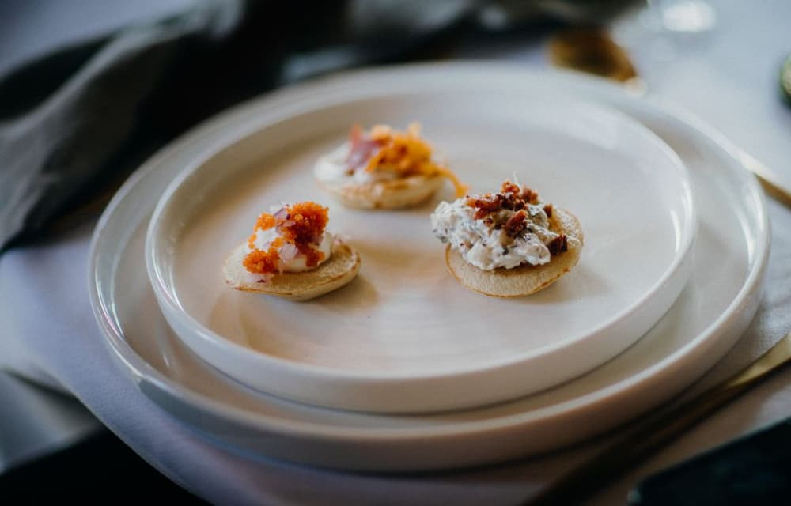
🥖 Entrées, Œufs & Hors-d'œuvre
Canapés Monte-Carlo
🇲🇨 Monaco — cuisine monégasque 👑 Grande cuisine des palaces · Monte-Carlo
Ce canapé est une création purement géométrique imaginée par les maîtres d'hôtel de la Belle Époque pour impressionner les joueurs fortunés du Casino. Le hachis tricolore (noir pour la truffe, blanc et jaune pour l'œuf) était disposé en losanges pour reproduire fidèlement les fusées rouges et blanches des armoiries de la Maison Grimaldi. Un chef-d'œuvre visuel servi sur des plateaux d'argent.
Ingrédients (4 personnes)
- 6 tranches de pain de mie
- 50g de beurre fin
- 6 tranches de langue de bœuf écarlate cuite
- 2 truffes noires
- 2 œufs durs
- 20cl de gelée de viande ambrée liquide.
Préparation
- Tartiner le pain de mie de beurre.
- Utiliser un emporte-pièce rond pour couper ensemble le pain et la langue de bœuf afin d'obtenir des disques parfaits.
- Hacher séparément et finement les truffes, les blancs d'œufs durs et les jaunes d'œufs durs.
- Déposer ces trois éléments sur la langue de bœuf pour former des motifs géométriques (comme un blason).
- Poser les canapés sur une grille.
- Napper doucement le dessus avec la gelée de viande tiède liquide.
- Mettre au frais 30 minutes pour faire figer la gelée avant de servir.
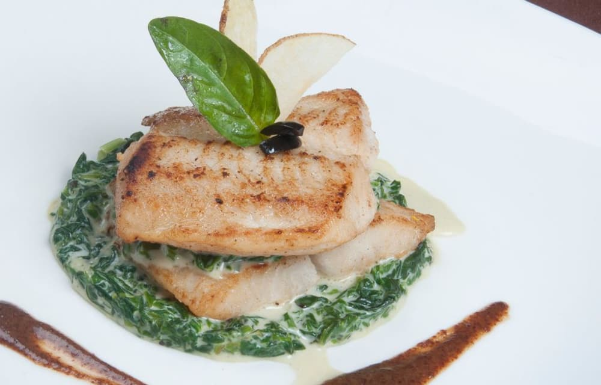
🥖 Entrées, Œufs & Hors-d'œuvre
Cassolettes Monte-Carlo
🇲🇨 Monaco — cuisine monégasque 👑 Grande cuisine des palaces · Monte-Carlo
À la Belle Époque, Monte-Carlo était le centre du monde pour la colonie russe fortunée et les ducs européens. Ces cassolettes individuelles en porcelaine ont été créées dans les grands palaces pour offrir une entrée chaude, riche et raffinée. Le mariage de la duxelles de champignons crémée, du ris de veau et de la truffe noire était le symbole du luxe absolu exigé par cette clientèle cosmopolite.
Ingrédients (4 personnes)
- 200g de champignons de Paris
- 30g de beurre
- 10cl de crème fraîche double
- 150g de ris de veau blanchis
- 1 petite truffe noire
- 15cl de sauce veloutée de volaille.
Préparation
- Hacher très finement les champignons et les faire suer au beurre jusqu'à évaporation de l'eau.
- Ajouter la crème double, saler, poivrer et laisser réduire pour faire une duxelles liée.
- Couper les ris de veau et la truffe en petits dés (salpicon).
- Dans des cassolettes individuelles, mettre un lit de duxelles de champignons.
- Répartir le salpicon de ris de veau et de truffe par-dessus.
- Napper de sauce veloutée blanche.
- Passer sous le gril du foir 3 minutes pour glacer avant de servir brûlant.

🍖 Viandes, Volailles & Gibiers
Crépinettes de Ris de Veau à la Monégasque
🇲🇨 Monaco — cuisine monégasque 👑 Grande cuisine des palaces · Monte-Carlo
Ingrédients (4 personnes)
- 200g de ris de veau blanchis
- 100g de cèpes
- 4 filets d'anchois
- 15cl de sauce tomate très réduite
- 1 crépine de porc
- 40g de beurre noisette.
Préparation
- Couper les ris de veau, les cèpes sautés et les filets d'anchois en petits dés (salpicon).
- Mélanger ce salpicon avec la sauce tomate serrée pour faire un mélange compact.
- Laver la crépine de porc à l'eau froide et l'étaler.
- Diviser la farce en portions, les déposer sur la crépine et les envelopper pour former des crépinettes plates.
- Chauffer le beurre dans une poêle jusqu'à ce qu'il devienne noisette.
- Cuire les crépinettes à feu moyen pendant 4 à 5 minutes de chaque côté jusqu'à ce qu'elles soient bien dorées.
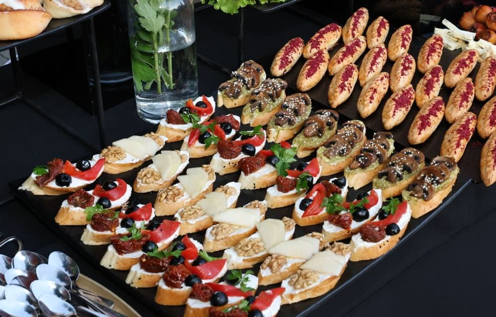
🥖 Entrées, Œufs & Hors-d'œuvre
Croustades à la Monégasque
🇲🇨 Monaco — cuisine monégasque 👑 Grande cuisine des palaces · Monte-Carlo
Cette recette illustre la rencontre entre la grande cuisine feuilletée française et les produits de la mer de la Riviera. Servies chaudes au début des repas officiels à Monaco, ces croustades croustillantes étaient garnies de homard et de moules liés à la sauce américaine. C'était le type d'entrée sophistiquée que l'on servait lors des soirées d'opéra au théâtre de Monte-Carlo.
Ingrédients (4 personnes)
- 1 bloc de pâte feuilletée
- 100g de chair de homard cuite
- 100g de moules décochées
- 50g de champignons
- 20cl de sauce américaine de crustacés bien relevée
- 1 œuf.
Préparation
- Étaler la pâte feuilletée.
- Découper des disques à l'emporte-pièce et évider le centre de la moitié d'entre eux pour faire des anneaux.
- Superposer un anneau sur chaque disque plein en collant à l'œuf pour former des petites caisses (croustades).
- Cuire au four à 200°C pendant 15 minutes jusqu'à ce que le feuilletage lève et dore.
- Couper la chair de homard, les moules et les champignons en petits dés.
- Les sauter une minute au beurre, puis les lier avec la sauce américaine chaude réduite.
- Remplir le centre des croustades chaudes et servir.

🍖 Viandes, Volailles & Gibiers
Feuilleté de Ris de Veau à la Monégasque
🇲🇨 Monaco — cuisine monégasque 👑 Grande cuisine des palaces · Monte-Carlo
Ingrédients (4 personnes)
- 400g de pâte feuilletée inversée
- 200g de ris de veau
- 4 croûtes en pâte à choux (crêtes de coq)
- 50g d'olives de Nice dénoyautées
- 20cl de sauce Allemande (velouté de veau lié aux œufs et crème).
Préparation
- Étaler la pâte feuilletée et couper deux grands rectangles.
- Dorer à l'œuf le dessus et cuire au four à 200°C pendant 25 minutes pour faire une grande boîte feuilletée.
- Évider le centre pour en faire une boîte.
- Couper les ris de veau blanchis en morceaux et les sauter au beurre.
- Ajouter les olives de Nice blanchies coupées en morceaux.
- Lier avec la sauce Allemande chaude crémée.
- Mettre cette garniture onctueuse au centre du feuilleté chaud, décorer avec les crêtes de coq et remettre le chapeau de pâte avant de servir.
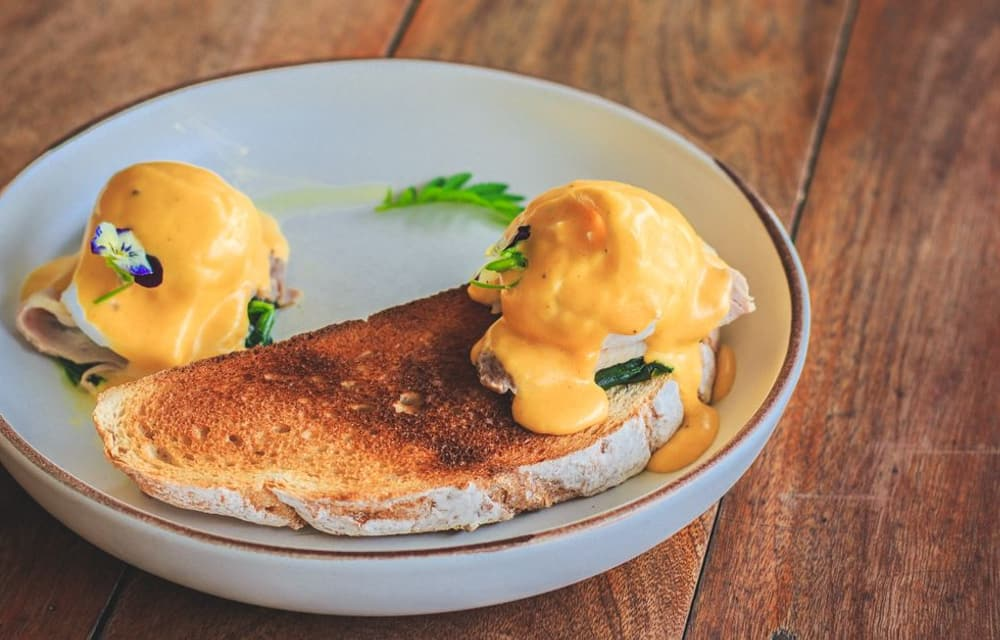
🥖 Entrées, Œufs & Hors-d'œuvre
Œufs à la Huguenotte Monte-Carlo
🇲🇨 Monaco — cuisine monégasque 👑 Grande cuisine des palaces · Monte-Carlo
Le terme « à la Huguenotte » fait référence à une très ancienne méthode française où l'on cuisinait les aliments directement dans un jus de viande très réduit et corsé. Auguste Escoffier et les chefs de Monte-Carlo ont repris ce nom historique pour créer un entremets chaud de prestige, associant la douceur de l'œuf poché à la puissance d'une réduction de jus de veau au Madère et à la truffe noire.
Ingrédients (4 personnes)
- 4 œufs frais
- 4 belles tranches de pain de mie
- 50g de beurre
- 15cl de jus de viande très corsé
- 5cl de Madère vieux
- 1 petite truffe noire
- 30g de jambon cru de pays.
Préparation
- Couper les tranches de pain de mie en cercles réguliers et les faire frire à la poêle dans le beurre pour obtenir des croûtons croustillants.
- Dans une casserole, faire réduire de moitié le jus de viande et le Madère vieux pour obtenir une sauce sirupeuse.
- Y ajouter le jambon et la truffe coupés en dés minuscules (brunoise).
- Pocher les œufs dans de l'eau frémissante vinaigrée pendant 3 minutes, puis les égoutter sur un linge.
- Poser un œuf poché chaud sur chaque croûton frit, puis napper généreusement de sauce chaude truffée.
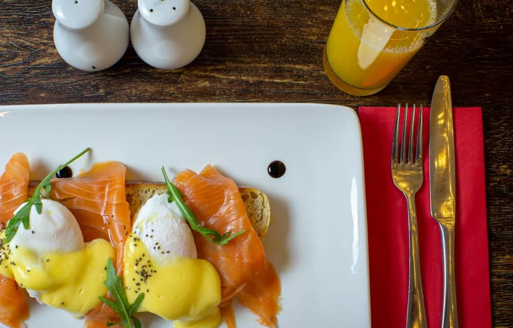
🥖 Entrées, Œufs & Hors-d'œuvre
Œufs Monaco
🇲🇨 Monaco — cuisine monégasque 👑 Grande cuisine des palaces · Monte-Carlo
Les œufs en gelée étaient les stars incontournables des buffets de l'Hôtel de Paris. Pour les dîners patriotiques ou princiers, les cuisiniers coulaient une gelée de volaille transparente comme du cristal. Au fond du moule, ils disposaient une étoile de truffe noire et un disque de blanc d'œuf pour que, une fois démoulé, l'œuf semble porter le blason officiel de la Principauté de Monaco.
Ingrédients (4 personnes)
- 4 œufs frais
- 30cl de gelée de volaille transparente liquide
- 1 truffe noire
- 1 œuf dur (pour le blanc).
Préparation
- Prendre 4 moules individuels.
- Mettre un fond de gelée de volaille liquide et placer au frais pour faire figer.
- Découper des formes d'étoiles dans la truffe noire et de petits disques dans le blanc d'œuf dur.
- Déposer ces décors directement sur la gelée figée au fond des moules.
- Pocher les 4 œufs frais pendant 3 minutes (le jaune doit rester coulant), les laisser refroidir et les sécher.
- Poser un œuf dans chaque moule sur le décor.
- Remplir les moules avec le reste de gelée de volaille liquide froide.
- Réserver 3 heures au réfrigérateur.
- Démouler après un passage rapide du fond des moules dans l'eau chaude.
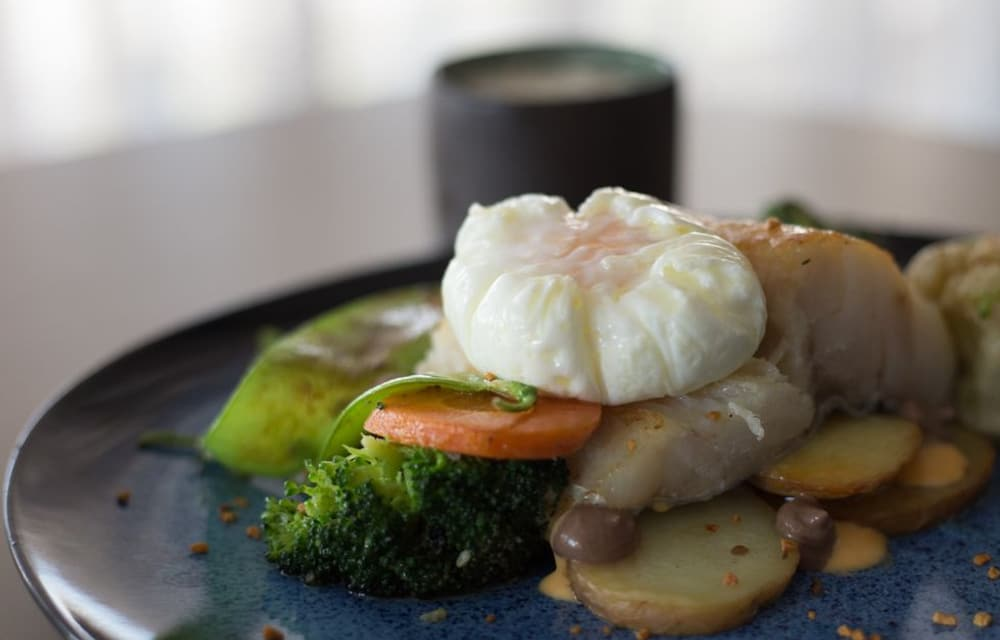
🥖 Entrées, Œufs & Hors-d'œuvre
Œufs Monte-Carlo
🇲🇨 Monaco — cuisine monégasque 👑 Grande cuisine des palaces · Monte-Carlo
Ce plat est un hommage aux couleurs de l'aurore sur la mer Méditerranée. La sauce Aurore (une hollandaise teintée en rose par une pointe de tomate) venait napper un œuf poché coulant posé sur une ratatouille niçoise traditionnelle. C’était le déjeuner favori des artistes et des hivernants qui venaient chercher le soleil d'hiver sur les terrasses de Monte-Carlo.
Ingrédients (4 personnes)
- 4 œufs frais
- 4 fonds de tartelettes cuits en pâte brisée
- 150g de ratatouille coupée très fine
- 2 jaunes d'œufs
- 100g de beurre
- 1 cuillère à café de concentré de tomate.
Préparation
- Réchauffer la ratatouille fine et en garnir le fond des tartelettes chaudes.
- Pocher les 4 œufs frais dans de l'eau frémissante vinaigrée pendant 3 minutes pour que le blanc soit pris mais le jaune coulant.
- Poser un œuf poché chaud dans chaque tartelette sur la ratatouille.
- Faire une sauce hollandaise en fouettant les deux jaunes d'œufs avec un filet d'eau sur un bain-marie, puis incorporer le beurre petit à petit.
- Ajouter le concentré de tomate pour colorer la sauce en rose (sauce Aurore).
- Napper les œufs de cette sauce avant de servir.
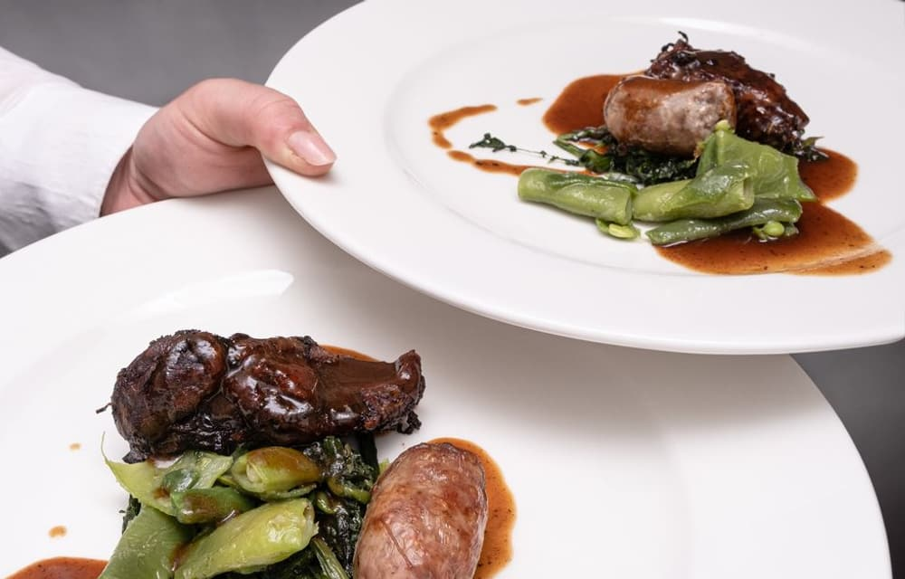
🥖 Entrées, Œufs & Hors-d'œuvre
Œufs pochés à la Monégasque
🇲🇨 Monaco — cuisine monégasque 🏡 Terroir monégasque
Dans cette recette, on retrouve la rencontre magique des produits de la terre et de la mer. La demi-tomate grillée au four et frottée à l'ail représente le terroir provençal, tandis que les filets d'anchois au sel croisés rappellent la tradition des pêcheurs du port de Monaco. Nappé d'une hollandaise brûlante, ce plat était une entrée chaude très populaire dans les grands hôtels.
Ingrédients (4 personnes)
- 4 œufs frais
- 2 grandes tomates mûres
- 1 gousse d'ail
- 2 jaunes d'œufs
- 100g de beurre
- 4 filets d'anchois
- huile d'olive.
Préparation
- Couper les tomates en deux, enlever les graines, saler et laisser dégorger.
- Les badigeonner d'huile d'olive, frotter l'intérieur à l'ail et cuire au four à 180°C pendant 10 à 12 minutes pour les griller légèrement sans qu'elles s'effondrent.
- Pocher les œufs frais pendant 3 minutes et mettre un œuf chaud dans chaque demi-tomate.
- Réaliser une sauce hollandaise sur bain-marie avec les jaunes d'œufs et le beurre fondu.
- Napper chaque œuf de sauce bien chaude et poser deux filets d'anchois en croix sur le dessus avant de servir.
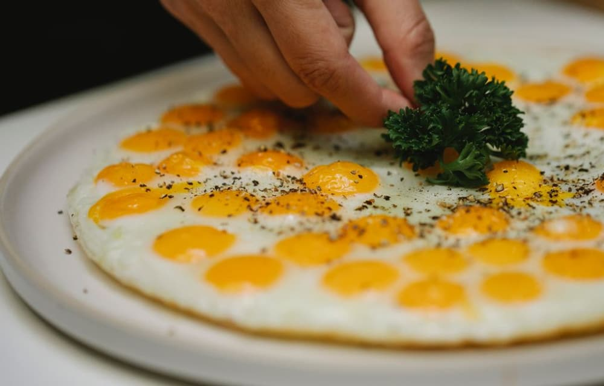
🥖 Entrées, Œufs & Hors-d'œuvre
Œufs sur le Plat à la Monégasque
🇲🇨 Monaco — cuisine monégasque 🏡 Terroir monégasque
Une façon typiquement méridionale de revisiter les œufs au miroir du matin. Au lieu de les cuire simplement au beurre, votre grand-père tapissait le plat en terre d'un lit de sauce tomate richement liée hors du feu avec du beurre d'anchois. Les œufs cuisaient doucement au four sur ce tapis rouge, offrant un goût puissant et relevé par les câpres à la sortie du four.
Ingrédients (4 personnes)
- 4 œufs frais
- 20cl de sauce tomate épaisse
- 30g de beurre d'anchois
- 1 cuillère à soupe de câpres
- 1 bouquet de persil plat.
Préparation
- Prendre des petits plats individuels allant au four.
- Tapisser le fond de sauce tomate chaude mélangée hors du feu avec le beurre d'anchois.
- Casser les œufs directement sur le lit de tomate sans crever les jaunes.
- Cuire au four à 180°C pendant 5 à 6 minutes jusqu'à ce que le blanc soit pris mais le jaune liquide.
- À la sortie du four, parsemer les œufs de câpres fines et d'un hachis de persil plat frais avant de servir directement.
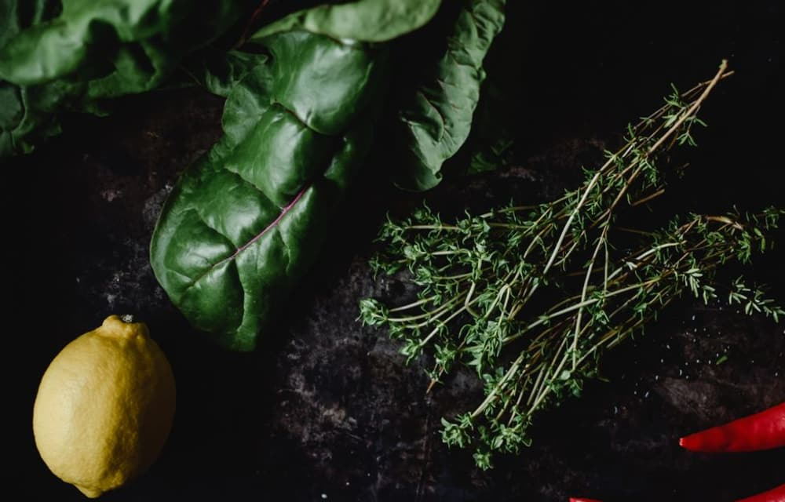
🥖 Entrées, Œufs & Hors-d'œuvre
Omelette Monte-Carlo
🇲🇨 Monaco — cuisine monégasque 👑 Grande cuisine des palaces · Monte-Carlo
L'omelette de palace par excellence. Les chefs de Monte-Carlo rivalisaient d'adresse pour rouler cette omelette en forme de fuseau parfait, "lustrée" au pinceau avec du beurre fondu pour la faire briller sous les lustres des salles à manger. Son cœur baveux dissimulait une duxelles de champignons truffée à la crème, et elle était élégamment bordée de pointes d'asperges vertes.
Ingrédients (2 personnes)
- 6 œufs frais
- 20g de truffe noire
- 50g de champignons de Paris
- 5cl de crème liquide
- 40g de beurre fin
- 6 pointes d'asperges vertes cuites.
Préparation
- Hacher finement les champignons et les faire suer au beurre.
- Ajouter la crème fraîche et les deux tiers de la truffe hachée menu.
- Réduire pour faire une duxelles truffée liée.
- Battre les œufs à la fourchette avec du sel.
- Fondre le beurre dans une poêle bien chaude, verser les œufs et remuer pour créer une texture baveuse.
- Mettre la duxelles au centre et rouler l'omelette en forme de fuseau.
- Glisser sur le plat, lustrer de beurre fondu, décorer des pointes d'asperges chaudes et du reste de truffe en rondelles.
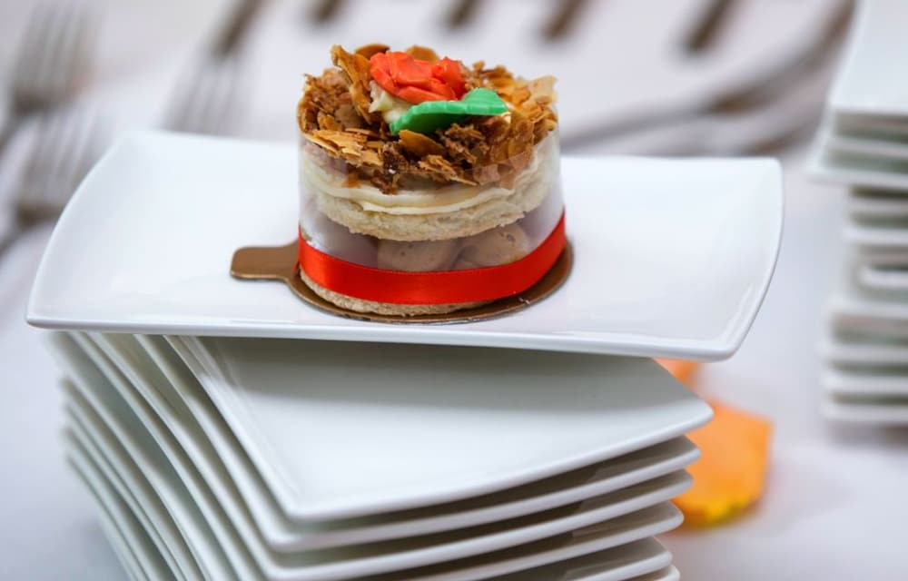
🥖 Entrées, Œufs & Hors-d'œuvre
Petites Bouchées à la Monégasque
🇲🇨 Monaco — cuisine monégasque 🏡 Terroir monégasque
Ces mini-vol-au-vent feuilletés faisaient fureur lors des thés dansants et des réceptions mondaines à Monaco. La garniture de thon blanc à l'huile et de cœurs d'artichauts, liée par une sauce veloutée rose, offrait une alternative maritime aux traditionnelles bouchées à la reine faites de volaille. Un grand classique des cocktails de la Riviera.
📜 Méthode non retrouvée dans le manuscrit — ingrédients conservés fidèlement.
🍖Tome 4
La Marée, les Viandes Nobles, Volailles, Gibiers & Sauces

🐟 Poissons & Fruits de mer
Alose à la Monégasque
🇲🇨 Monaco — cuisine monégasque 🏡 Terroir monégasque
L'alose est un poisson migrateur que les pêcheurs monégasques attrapaient au printemps lorsqu'il longeait les côtes de la Riviera. Comme sa chair possède de nombreuses petites arêtes, la cuisson d'époque sur un lit épais de fenouil sauvage séché permettait non seulement de parfumer la chair par fumage, mais aussi d'assouplir les arêtes. La sauce tiède aux anchois et aux câpres venait apporter le relief nécessaire à ce poisson blanc très fin, créant un classique dominical sur le Rocher.
Ingrédients (4 personnes)
- 1 alose de 1
- 2 kg
- 1 gros bouquet de fenouil sauvage séché
- 10cl d'huile d'olive
- 2 citrons
- 6 filets d'anchois au sel
- 2 cuillères à soupe de câpres.
Préparation
- Vider et écailler l'alose, faire des incisions sur les flancs, saler et poivrer.
- Étaler le fenouil séché au fond d'un grand plat à rôtir et poser le poisson dessus.
- Arroser d'un filet d'huile d'olive et cuire au four à 190°C pendant 20 à 25 minutes.
- Rincer et hacher les anchois et les câpres.
- Chauffer le reste d'huile d'olive, y faire fondre les anchois à la fourchette, ajouter les câpres et le jus des citrons.
- Lever les filets du poisson cuit et les napper de cette sauce tiède.
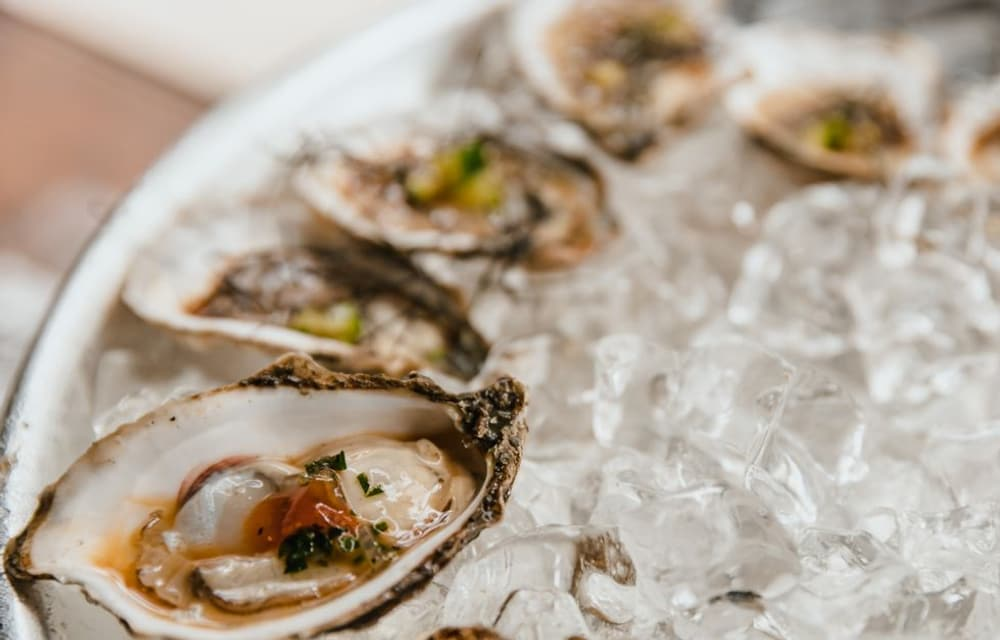
🐟 Poissons & Fruits de mer
Bar à la Monégasque
🇲🇨 Monaco — cuisine monégasque 🏡 Terroir monégasque
Le bar de ligne (ou loup de mer) est le seigneur de la mer azuréenne. Pour les grands déjeuners d’été, votre grand-père aimait servir ce poisson poché, puis refroidi à cœur. Toute l'originalité résidait dans sa sauce : une mayonnaise maison colorée en rose tendre par une pointe de tomate fraîche, et relevée par le croquant du piment doux rouge et le sel des anchois. Une entrée marine d'une fraîcheur absolue sous le soleil de la Principauté.
Ingrédients (4 personnes)
- 1 bar de 1
- 5 kg
- 25cl de vin blanc sec
- 1 oignon
- 1 carotte
- 1 bouquet garni
- 1 piment doux rouge
- 2 tomates
- 1 cuillère de câpres
- 4 filets d'anchois
- 1 jaune d'œuf
- 1 cuillère de concentré de tomate
- huile d'olive
- vinaigre.
Préparation
- Faire un court-bouillon avec le vin blanc, l'eau, l'oignon, la carotte et le bouquet garni.
- Y pocher le bar entier pendant 18 minutes.
- Lever les filets nets et laisser tiédir.
- Monder les tomates et le piment doux, les couper en petits dés.
- Hacher les anchois et les câpres.
- Faire une mayonnaise avec le jaune d'œuf, le vinaigre et l'huile d'olive, ajouter le concentré de tomate pour la teinter en rose.
- Incorporer les dés de légumes, d'anchois et de câpres à la mayonnaise et en napper le poisson.
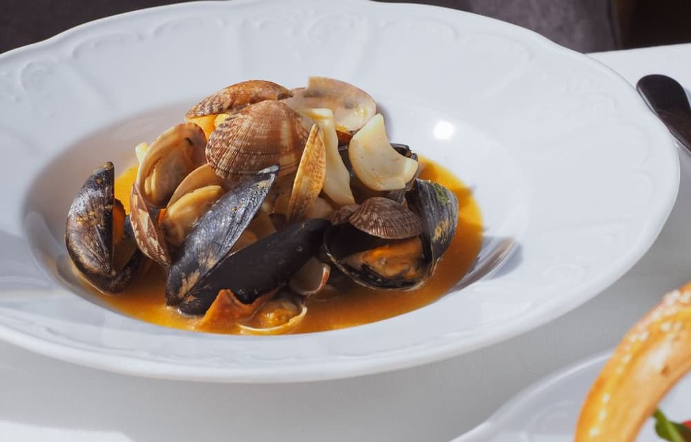
🥣 Potages & Soupes
Bouillabaisse à la Monégasque
🇲🇨 Monaco — cuisine monégasque 🏡 Terroir monégasque
Ingrédients (4 personnes)
- 2 kg de poissons de roche assortis
- 4 langoustines
- 4 pommes de terre
- 2 tomates
- 1 oignon
- 3 gousses d'ail
- 1 dosette de safran
- 10cl d'huile d'olive
- 1 branche de fenouil.
Préparation
- Faire suer l'oignon et deux gousses d'ail émincés dans l'huile d'olive.
- Ajouter les tomates concassées, le fenouil et les petits poissons de roche.
- Saisir 5 minutes, mouiller avec 2 litres d'eau bouillante, ajouter le safran et cuire 20 minutes avant de passer au moulin à légumes.
- Remettre le bouillon filtré sur le feu avec les pommes de terre en tranches épaisses pendant 10 minutes.
- Ajouter les poissons nobles en tronçons et les langoustines, pocher 8 minutes à vive ébullition.
- Piler la dernière gousse d'ail avec les foies de rougets réservés, lier avec une louche de bouillon chaud et reverser dans le faitout pour épaissir la soupe.
ℹ️ Jusqu'au XIXe siècle, la bouillabaisse était un plat de pêcheurs marseillais anti-gaspillage : on y cuisinait les poissons de roche abîmés, trop petits ou invendables au marché (rascasse, grondin, congre, saint-pierre…).
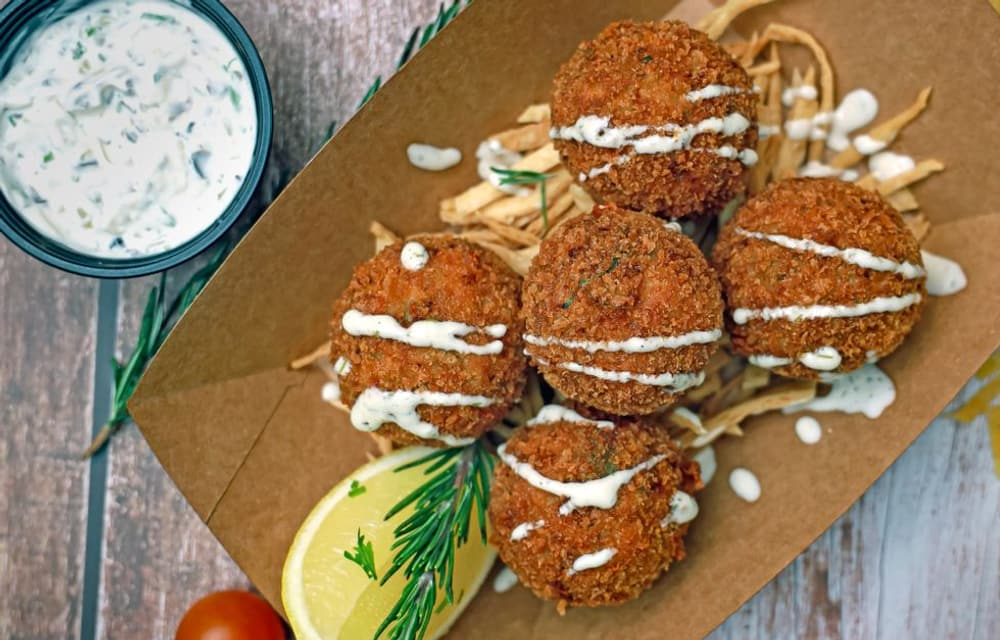
🐟 Poissons & Fruits de mer
Boulettes de Poisson à la Monégasque
🇲🇨 Monaco — cuisine monégasque 🏡 Terroir monégasque
Ingrédients (4 personnes)
- 400g de chair de dorade
- 1 gousse d'ail
- 1 bouquet de persil
- 1 œuf
- 50g de mie de pain
- 5cl de lait
- farine
- huile d'olive. Sauce : 1 jaune d'œuf
- 1 cuillère de moutarde
- 15cl d'huile d'olive
- 4 filets d'anchois
- 1 cuillère de câpres.
Préparation
- Tremper la mie dans le lait.
- Hacher finement le poisson, l'ail et le persil.
- Mélanger le tout avec la mie essorée, l'œuf entier, du sel et du poivre.
- Façonner des boulettes de la taille d'une noix, les rouler dans la farine et les pocher 6 à 8 minutes dans de l'eau salée frémissante.
- Laisser refroidir.
- Faire une mayonnaise avec le jaune, la moutarde et l'huile d'olive.
- Piler les anchois et les câpres au mortier pour faire une pâte fine et l'ajouter à la mayonnaise.
- Napper les boulettes froides de cette sauce.
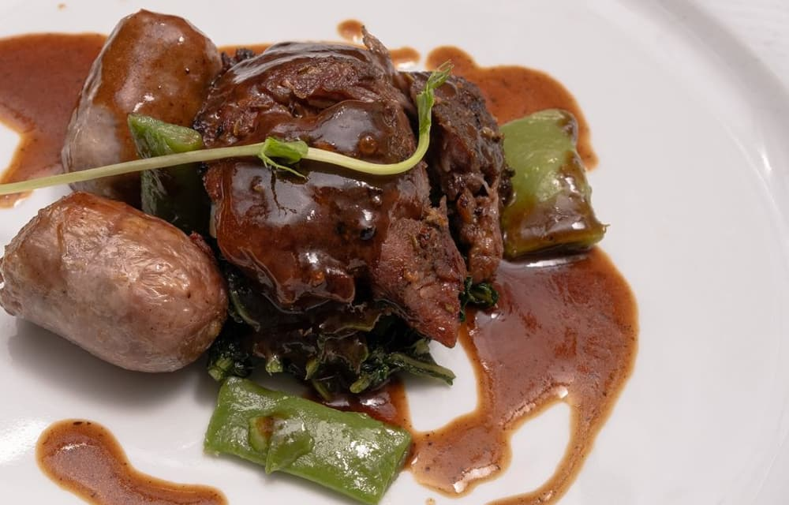
🍖 Viandes, Volailles & Gibiers
Canard Sauvage Monte-Carlo
🇲🇨 Monaco — cuisine monégasque 👑 Grande cuisine des palaces · Monte-Carlo
Ingrédients (4 personnes)
- 2 canards sauvages
- 100g de purée d'oranges amères
- 15cl de jus de canard corsé
- 10cl de porto rouge
- 2 oranges bigarades (zestes).
Préparation
- Rôtir les canards sauvages au four à 200°C pour que la chair reste saignante ou rosée.
- Lever les aiguillettes (filets).
- Blanchir les zestes des oranges amères dans l'eau bouillante pendant 5 minutes, puis les couper en fine julienne.
- Dans une casserole, mélanger le jus de canard, le porto rouge et les zestes blanchis, faire réduire de moitié.
- Étaler un lit de purée d'oranges amères chaudes au fond du plat, disposer les aiguillettes de canard par-dessus et napper avec la sauce réduite au porto et aux zestes.
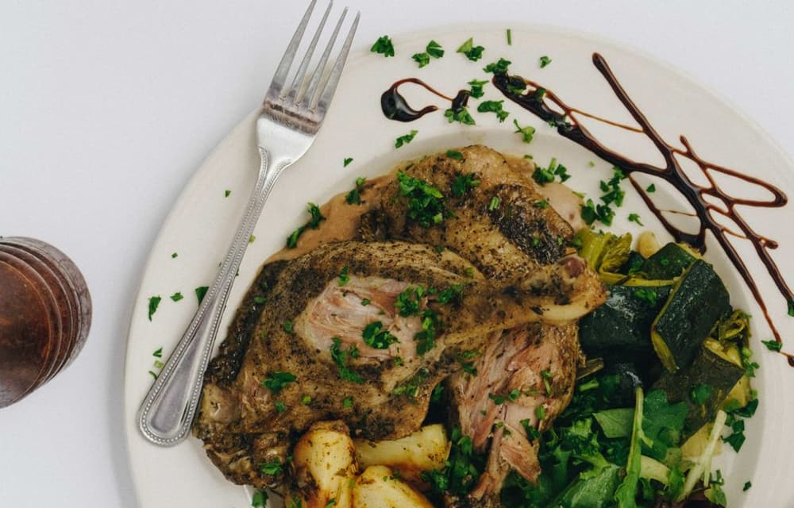
🍖 Viandes, Volailles & Gibiers
Caneton à la Monégasque
🇲🇨 Monaco — cuisine monégasque 👑 Grande cuisine des palaces · Monte-Carlo
Pour ce grand classique des tables bourgeoises de la Principauté, le caneton était rôti saignant. Les aiguillettes étaient découpées en salle par le maître d'hôtel. La sauce était une merveille locale : un jus réalisé à partir de la carcasse pressée, réduit au porto rouge et enrichi d'un coulis de tomates serré et de petites olives de Nice blanchies pour apporter de l'amertume et du sel.
Ingrédients (4 personnes)
- 1 gros caneton
- jus de carcasse
- 10cl de porto
- 1 cuillère à café de purée de tomates
- 80g d'olives de Nice dénoyautées.
Préparation
- Rôtir le caneton au four pour qu'il reste saignant.
- Lever les aiguillettes.
- Presser la carcasse pour en extraire tous les sucs de viande.
- Dans une petite casserole, mélanger ce jus de carcasse avec le porto et la purée de tomates, puis faire réduire doucement pour obtenir une sauce onctueuse.
- Blanchir les olives de Nice dans de l'eau bouillante pendant 2 minutes pour enlever l'excès de sel, puis les ajouter à la sauce.
- Dresser les aiguillettes de caneton sur un plat chaud et les napper généreusement de cette sauce aux olives.
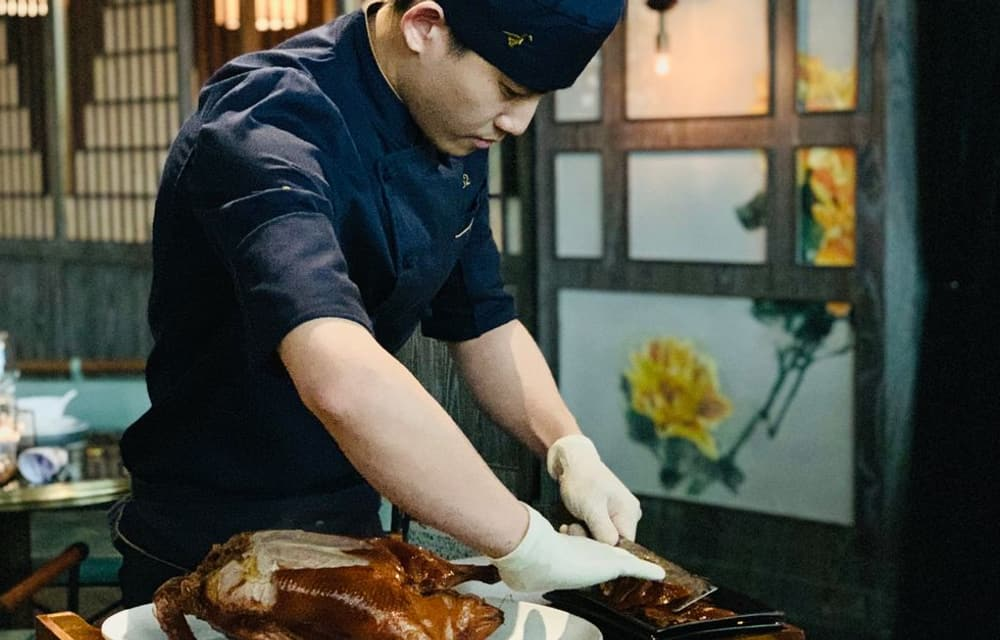
🍖 Viandes, Volailles & Gibiers
Caneton au Sang Monte-Carlo
🇲🇨 Monaco — cuisine monégasque 👑 Grande cuisine des palaces · Monte-Carlo
Inspiré de la célèbre recette du "Caneton à la presse" de la Tour d'Argent à Paris, ce plat a été adapté à Monte-Carlo pour la clientèle des tirs au pigeon et du Casino. La sauce, hautement technique, était liée au sang de la carcasse extrait sous les yeux des clients grâce à une presse en argent. Votre grand-père y ajoutait du jus de mandarine locale pour apporter une note d'agrumes acidulée, et liait le tout au beurre de truffe noire.
Ingrédients (4 personnes)
- 1 gros caneton de Rouen
- 15cl de Porto rouge
- 2 mandarines locales (jus)
- 40g de beurre de truffe noire.
Préparation
- Rôtir le caneton au four pendant 20 minutes (il doit rester très saignant).
- Lever les filets et les cuisses.
- Passer la carcasse à la presse à canard pour en extraire le sang et les sucs.
- Dans une casserole en argent ou en cuivre, faire réduire le Porto rouge avec le jus de mandarine de moitié.
- Hors du feu, ajouter le sang récupéré de la carcasse en fouettant doucement pour épaissir la sauce sans la faire bouillir (liaison au sang).
- Incorporer le beurre de truffe noire en morceaux pour faire briller la sauce.
- Napper les filets de caneton chauds avec cette préparation royale.
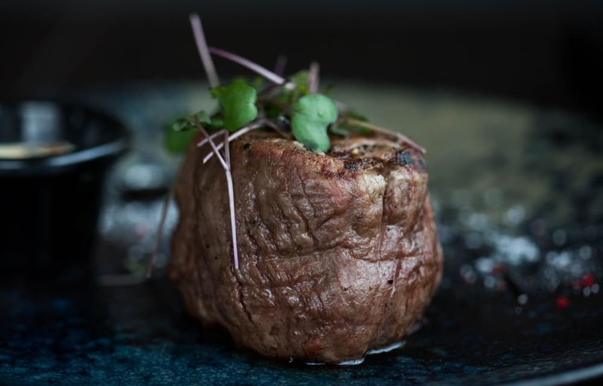
🍖 Viandes, Volailles & Gibiers
Chateaubriand à la Monégasque
🇲🇨 Monaco — cuisine monégasque 👑 Grande cuisine des palaces · Monte-Carlo
Le Chateaubriand (la pièce la plus épaisse et la plus tendre du filet de bœuf) était le plat préféré des riches hivernants britanniques. Pour lui donner son caractère méridional, votre grand-père le dressait sur un grand canapé de pain de mie doré au beurre fin, puis déposait au sommet un disque de beurre d'anchois frais. En fondant sur la viande saignante, ce beurre salé créait un contraste terre-mer extraordinaire, rehaussé par des tomates cerises confites au four.
Ingrédients (4 personnes)
- 1 belle pièce de cœur de filet de bœuf de 800g (Chateaubriand)
- 4 grandes tranches de pain de mie
- 50g de beurre fin
- 50g de beurre d'anchois
- 12 tomates cerises
- un filet d'huile d'olive.
Préparation
- Ficeler le Chateaubriand et le faire griller à la poêle ou au barbecue selon la cuisson désirée (idéalement saignant).
- Faire frire les tranches de pain de mie au beurre dans une poêle pour obtenir de grands croûtons dorés.
- Faire confire les tomates cerises entières au four avec un filet d'huile d'olive pendant 10 minutes.
- Dresser le Chateaubriand sur les croûtons frits.
- Déposer un gros morceau de beurre d'anchois sur la viande chaude pour qu'il fonde délicatement, et entourer le plat avec les tomates cerises confites.

🍖 Viandes, Volailles & Gibiers
Chateaubriand Monte-Carlo
🇲🇨 Monaco — cuisine monégasque 👑 Grande cuisine des palaces · Monte-Carlo
C’était le plat de résistance par excellence des soupers fins servis après les soirées de gala au Casino. Cette pièce de bœuf magistrale exigeait une cuisson parfaite, d'abord marquée à feu vif à la poêle pour emprisonner les sucs, puis rôtie doucement au beurre. Escorté de petites pommes de terre parisiennes méticuleusement tournées en billes et rissolées, ce plat était couronné d'un généreux morceau de beurre de truffe noire qui parfumait toute la salle.
Ingrédients (4 personnes)
- 1 pièce de cœur de filet de bœuf de 800g
- 50g de beurre de truffe noire
- 400g de pommes de terre.
Préparation
- Faire griller le Chateaubriand à feu vif pour marquer la viande, puis terminer la cuisson doucement au beurre pour qu'il reste saignant.
- À l'aide d'une cuillère parisienne, couper les pommes de terre en petites billes régulières (taille d'une noisette) et les faire rissoler doucement à la poêle dans du beurre clarifié jusqu'à ce qu'elles soient bien dorées (pommes parisiennes).
- Dresser la viande sur un plat chaud, l'accompagner des petites pommes parisiennes croustillantes et déposer le beurre de truffe sur la viande au moment de servir.
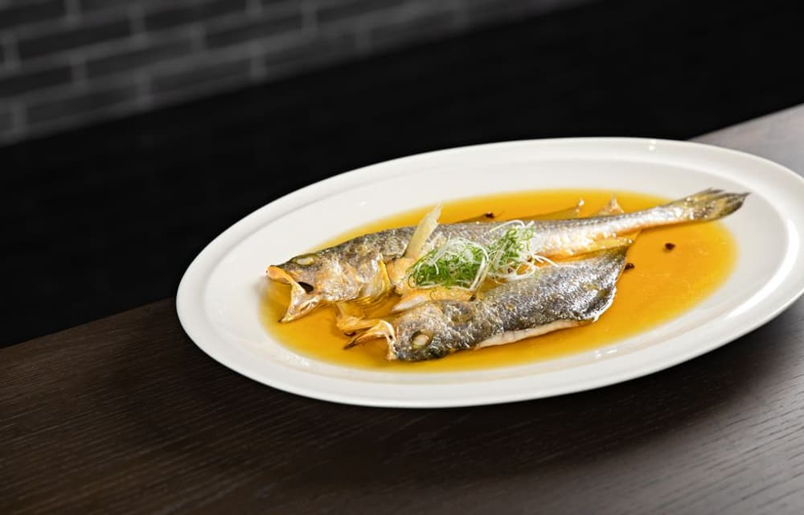
🐟 Poissons & Fruits de mer
Daurade braisée à la Monégasque
🇲🇨 Monaco — cuisine monégasque 🏡 Terroir monégasque
La daurade royale est le poisson noble par excellence du terroir méridional. Les ménagères monégasques la préparaient à l'étouffée au four dans de grands plats en terre cuite. Le poisson cuisait lentement au milieu des tomates gorgées de soleil, des oignons doux et des petites olives noires de Nice. Le jus du poisson et le vin blanc se mêlaient à l'huile d'olive pour former une sauce courte et sirupeuse que l'on sauçait avec du pain frais.
Ingrédients (4 personnes)
- 1 daurade royale de 1
- 2 kg
- 1 branche de fenouil sauvage
- 1 citron
- 2 oignons
- 3 tomates
- 2 gousses d'ail
- 50g d'olives de Nice
- 10cl de vin blanc
- 10cl d'huile d'olive.
Préparation
- Vider et écailler la daurade, saler, poivrer et glisser le fenouil et deux rondelles de citron à l'intérieur.
- Étaler les oignons émincés et l'ail écrasé dans un grand plat en terre, poser le poisson dessus.
- Mouiller avec le vin blanc et la moitié de l'huile d'olive, cuire au four à 180°C.
- Après 10 minutes, ajouter les tomates mondées concassées, les olives de Nice et le reste d'huile d'olive.
- Arroser souvent le poisson avec son jus pendant encore 15 minutes.
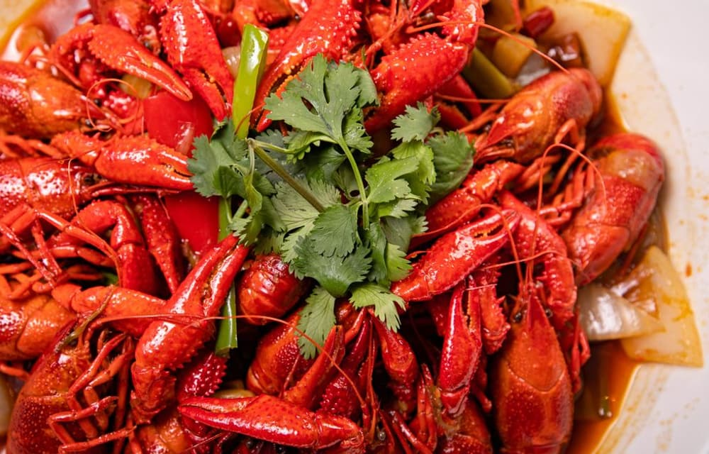
🍖 Viandes, Volailles & Gibiers
Écrevisses Monte-Carlo
🇲🇨 Monaco — cuisine monégasque 👑 Grande cuisine des palaces · Monte-Carlo
Bien que Monaco soit un port de mer, les écrevisses d'eau douce (souvent acheminées par train depuis les rivières de l'arrière-pays ou de Lyon) étaient un produit de grand luxe fort recherché dans les palaces de Monte-Carlo. Pour ce plat de gala, les crustacés étaient flambés au vieux Cognac devant les clients, puis nappés d'une réduction de crème double et d'une essence de truffe noire. Le summum du chic de la Belle Époque.
Ingrédients (4 personnes)
- 16 écrevisses vivantes
- 1 carotte
- 1 oignon
- 40g de beurre
- 5cl de vieux Cognac
- 15cl de crème liquide entière
- 1 petite truffe noire
- 10cl de vin blanc sec.
Préparation
- Châtrer les écrevisses.
- Couper la carotte et l'oignon en dés minuscules (mirepoix) et les faire suer au beurre dans une sauteuse.
- Ajouter les écrevisses et remuer à feu vif jusqu'à ce qu'elles deviennent rouges.
- Flamber au Cognac chaud.
- Mouiller au vin blanc sec et cuire à couvert 6 minutes.
- Retirer les écrevisses et décortiquer les queues.
- Filtrer le jus de cuisson, ajouter la crème liquide et l'essence de la truffe noire râpée, réduire jusqu'à ce que la sauce soit onctueuse.
- Réchauffer les queues dedans une minute.

🍖 Viandes, Volailles & Gibiers
Filet de Bœuf à la Monégasque
🇲🇨 Monaco — cuisine monégasque 🏡 Terroir monégasque
Ingrédients (4 personnes)
- 1 rôti de filet de bœuf de 800g
- 20cl de jus de viande lié
- 4 petites tomates
- 100g de champignons de Paris
- 4 cœurs d'artichauts
- 400g de pommes de terre
- huile d'olive
- beurre.
Préparation
- Faire rôtir le filet de bœuf au four à 200°C pour qu'il reste saignant.
- Préparer l'accompagnement : évider les petites tomates et les farcir avec les champignons hachés et cuits au beurre (duxelles).
- Étuvé les cœurs d'artichauts au beurre et faire rissoler les pommes de terre à la poêle.
- Dresser le rôti de bœuf sur un grand plat, entourer avec les tomates farcies, les artichauts et les pommes de terre rissolées, et servir le jus de viande chaud à part.
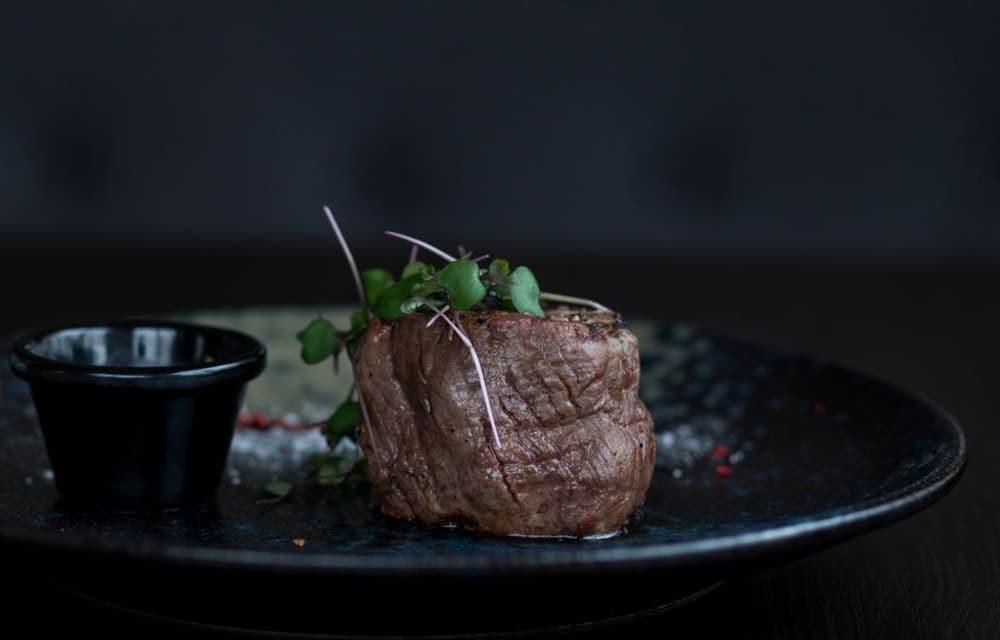
🍖 Viandes, Volailles & Gibiers
Filet de Bœuf à la Monte-Carlo
🇲🇨 Monaco — cuisine monégasque 👑 Grande cuisine des palaces · Monte-Carlo
📜 Méthode non retrouvée dans le manuscrit — ingrédients conservés fidèlement.
🌿Tome 5
Les Recettes Retrouvées & Spécialités du Terroir
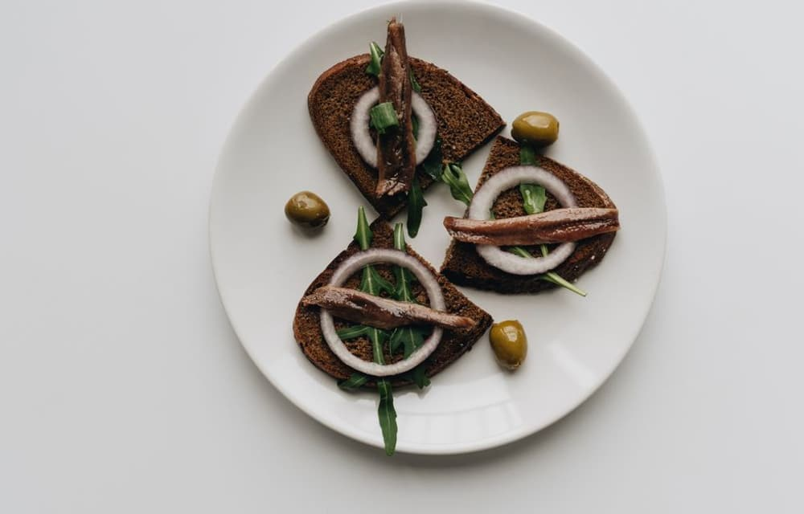
🥖 Entrées, Œufs & Hors-d'œuvre
La Pissaladière Monégasque (La Pissaladiera)
🗣 Pissaladiera (niçard)
🇲🇨 Monaco — cuisine monégasque 🏡 Terroir monégasque
Ingrédients (4 personnes)
- 250g de pâte à pain fine
- 4 gros oignons doux
- 4 cuillères à soupe d'huile d'olive
- 3 belles tomates bien mûres
- 8 filets d'anchois au sel
- 12 petites olives noires de Nice
- 1 pincée de sucre
- sel
- poivre.
Préparation
- Émincer les oignons très finement.
- Les faire confire doucement à la poêle avec l'huile d'olive, le sel et le sucre pendant 30 minutes à couvert sans les laisser dorer.
- Pendant ce temps, monder, épépiner et concasser les tomates, puis les ajouter aux oignons.
- Laisser mijoter encore 15 minutes pour que l'eau des tomates s'évapore et s'intègre à la fondue d'oignons.
- Étaler la pâte très finement sur une plaque huilée.
- Répartir ce mélange d'oignons et de tomates sur toute la surface.
- Disposer les anchois rincés en croisillons et ajouter les olives noires de Nice.
- Enfournez à 220°C pendant 15 minutes jusqu'à ce que la pâte soit bien croustillante.
ℹ️ La pissaladière tire son nom du pissalat, du niçois « peis salat » (« poisson salé ») : une pâte d'anchois fermentée qui garnit traditionnellement cette galette d'oignons confits et d'olives noires.
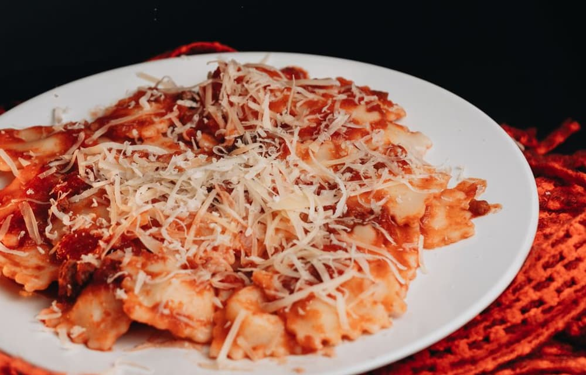
🌿 Spécialités du Terroir
Les Raviolis de Blettes à la Monégasque
🇲🇨 Monaco — cuisine monégasque 🏡 Terroir monégasque
Ingrédients (4 personnes)
- 300g de pâte fraîche aux œufs. Farce : 200g de vert de blettes
- 100g de brousse de chèvre (ou ricotta)
- 1 œuf
- 30g de parmesan râpé
- 1 cuillère à café de marjolaine séchée. Sauce : 30cl de coulis de tomates fraîches
- 1 gousse d'ail
- 2 cuillères d'huile d'olive.
Préparation
- Laver et hacher finement le vert des blettes.
- Les faire suer à sec dans une poêle pendant 5 minutes, puis les presser fortement dans un linge pour éliminer toute l'eau.
- Dans un bol, mélanger les blettes essorées, la brousse, le parmesan, l'œuf entier et la marjolaine.
- Saler et poivrer.
- Étaler la pâte fraîche très finement.
- Déposer de petits tas de farce, recouvrir d'une autre bande de pâte, chasser l'air avec les doigts et découper de gros raviolis carrés.
- Faire pocher dans de l'eau bouillante salée pendant 4 minutes.
- Pendant ce temps, chauffer le coulis de tomates avec l'huile d'olive et l'ail écrasé.
- Égoutter les raviolis et les napper de cette sauce tomate simple avant de servir.
ℹ️ À Nice, la farce des raviolis (li raiolà) est traditionnellement composée de daube de bœuf et de vert de blettes finement haché — ce qui justifie l'appellation « raviolis à la niçoise ». Le plat est attesté dans la région dès le XVIe siècle.
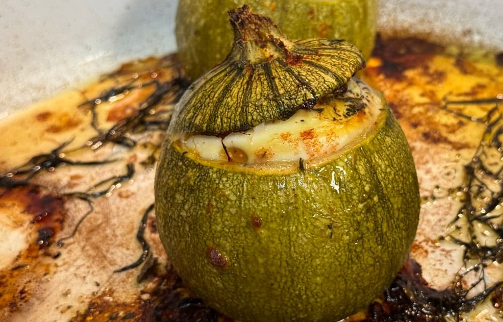
🥖 Entrées, Œufs & Hors-d'œuvre
Les Petits Farcis du Rocher
🇲🇨 Monaco — cuisine monégasque 🏡 Terroir monégasque
Ingrédients (4 personnes)
- 4 mini-courgettes rondes
- 4 petits oignons
- 4 mini-aubergines. Farce : la chair évidée des légumes
- 1 tranche de mie de pain rassise
- 5cl de lait
- 40g de parmesan
- 1 gousse d'ail
- 1 bouquet de basilic frais
- 150g de restes de pot-au-feu hachés
- 1 œuf
- huile d'olive.
Préparation
- Laver les légumes.
- Couper les chapeaux, évider délicatement l'intérieur à l'aide d'une petite cuillère et réserver la chair.
- Faire blanchir les coques de légumes vides 3 minutes à l'eau bouillante, puis les refroidir.
- Hacher finement la chair des légumes extraite et la faire sauter à la poêle avec un filet d'huile d'olive et l'ail écrasé.
- Dans un saladier, mélanger cette chair cuite, la mie de pain trempée dans le lait et essorée, la viande de pot-au-feu hachée, le parmesan, le basilic ciselé et l'œuf entier.
- Remplir les légumes avec cette farce parfumée, replacer les chapeaux, arroser d'un filet d'huile d'olive et cuire au four à 180°C pendant 35 minutes.
ℹ️ Les petits farcis niçois (légumes évidés puis garnis) étaient à l'origine une façon astucieuse d'utiliser les restes de viande braisée, de rôti ou de pot-au-feu avant de devenir un plat à part entière.
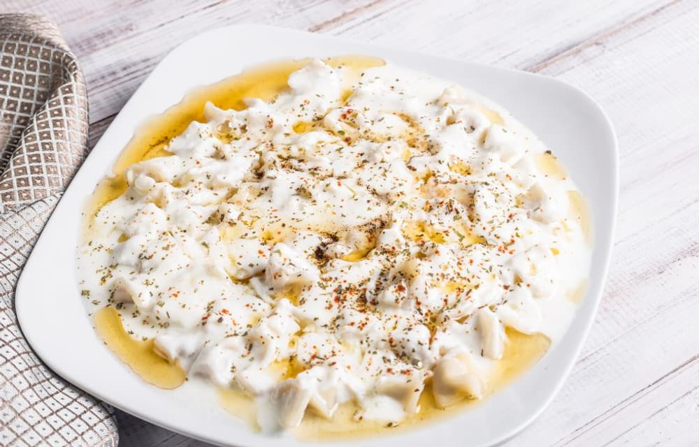
🐟 Poissons & Fruits de mer
Le Ragoût de Seiche à la Monégasque (Sepia en toupin)
🇲🇨 Monaco — cuisine monégasque 🏡 Terroir monégasque
Ingrédients (4 personnes)
- 800g de petites seiches nettoyées
- 4 cuillères à soupe d'huile d'olive
- 3 échalotes
- 10cl de vin blanc sec
- 20cl de coulis de tomates fraîches
- 2 gousses d'ail
- 1 branche de sarriette
- sel
- poivre.
Préparation
- Couper les corps des seiches nettoyées en larges lanières et laisser les tentacules entières.
- Dans une cocotte en terre cuite (u toupin) ou un faitout, faire chauffer l'huile d'olive et y faire suer les échalotes émincées.
- Ajouter les morceaux de seiche et les faire sauter à feu vif pendant 5 minutes pour qu'ils raffermissent.
- Mouiller avec le vin blanc sec et laisser réduire de moitié.
- Ajouter le coulis de tomates fraîches, les gousses d'ail écrasées et la branche de sarriette.
- Couvrir hermétiquement la cocotte et laisser mijoter à feu très doux pendant 1 heure jusqu'à ce que la seiche soit extrêmement tendre et la sauce bien courte.
ℹ️ L'encre de seiche parfume et teinte en noir profond les préparations méditerranéennes. Historiquement, la seiche faisait partie des produits « modestes » que les pêcheurs gardaient, les poissons nobles partant à la criée.
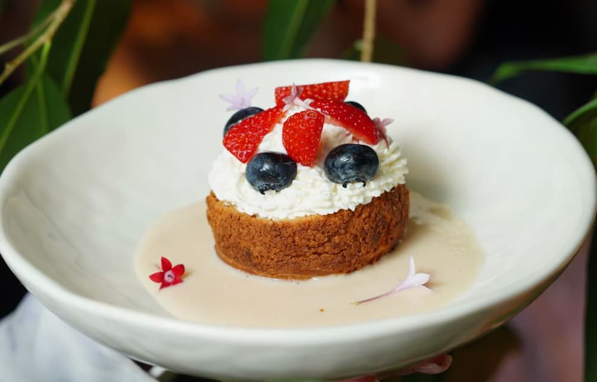
🍰 Desserts & Pâtisseries
Langouste Soufflée à la Monte-Carlo
🇲🇨 Monaco — cuisine monégasque 👑 Grande cuisine des palaces · Monte-Carlo
Carapaces évidées de leur chair crue ; celle-ci est mixée avec des blancs de brochet, blancs d'œufs et crème sur glace pour faire une mousseline fine truffée ; la farce remise dans les carapaces est soufflée au four au bain-marie.
Ingrédients (4 personnes)
- 1 belle langouste vivante d'environ 1 kg
- 150g de blancs de brochet crus
- 2 blancs d'œufs
- 20cl de crème liquide entière très froide
- 1 petite truffe noire coupée en dés
- salt
- poivre.
Préparation
- Fendre la langouste en deux dans le sens de la longueur.
- Retirer délicatement la chair crue de la queue en veillant à garder les carapaces intactes.
- Passer la chair de langouste crue et les blancs de brochet au mixeur pour obtenir une pâte fine.
- Ajouter les blancs d'œufs, du sel et du poivre, puis passer le tout à travers un tamis fin.
- Placer ce mélange dans un bol posé sur un lit de glace et incorporer la crème liquide très froide petit à petit en mélangeant à la spatule pour obtenir une mousseline onctueuse.
- Ajouter les dés de truffe noire.
- Garnir les carapaces vides avec cette farce mousseline en lissant le dessus.
- Cuire au four au bain-marie à 170°C pendant 18 à 20 minutes : la farce va gonfler comme un soufflé à l'intérieur de la carapace.
- Servir immédiatement.

🍖 Viandes, Volailles & Gibiers
Noisettes de Chevreuil à la Monte-Carlo
🇲🇨 Monaco — cuisine monégasque 👑 Grande cuisine des palaces · Monte-Carlo
Ingrédients (4 personnes)
- 8 noisettes de filet de chevreuil
- 40g de beurre fin
- 4 croûtons de pain de mie frits
- 2 pêches de pays
- 100g de gelée de groseilles rouges
- 15cl de sauce Poivrade corsée
- 5cl de crème liquide.
Préparation
- Saisir les noisettes de chevreuil à la poêle dans le beurre chaud pour qu'elles restent bien saignantes.
- Les réserver au chaud.
- Déposer les noisettes sur les croûtons de pain frits disposés sur le plat de service.
- Pocher les moitiés de pêches dans un sirop léger, les égoutter et remplir le centre de chaque demi-fruit avec une bonne cuillère de gelée de groseilles rouges.
- Ajouter la crème liquide à la sauce Poivrade chaude pour l'adoucir légèrement.
- Disposer les demi-pêches à la groseille tout autour de la viande et napper le chevreuil avec la sauce Poivrade onctueuse.
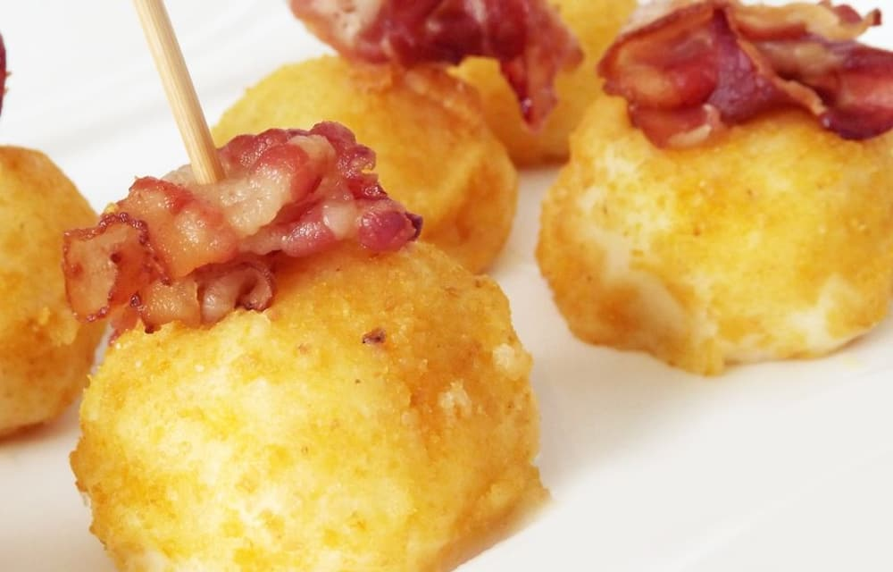
🍖 Viandes, Volailles & Gibiers
Noisettes de Sanglier Monte-Carlo
🇲🇨 Monaco — cuisine monégasque 👑 Grande cuisine des palaces · Monte-Carlo
Le sanglier noir des montagnes azuréennes était préparé ici selon les règles les plus strictes de la Haute Gastronomie. Après une longue marinade aux aromates et au vin rouge, les noisettes étaient saisies au beurre clarifié pour rester juteuses. La sauce Grand Veneur, d'un noir brillant, était traditionnellement liée au sang. Le contraste sucré apporté par des demi-poires pochées remplies d'airelles au sirop complétait ce grand plat de gibier.
Ingrédients (4 personnes)
- 8 noisettes de jeune sanglier
- marinade au vin rouge et herbes
- 40g de beurre clarifié
- 20cl de sauce Grand Veneur
- 2 poires
- 80g d'airelles au sirop.
Préparation
- Sortir les noisettes de sanglier de leur marinade et les sécher soigneusement.
- Les faire sauter à la poêle dans le beurre clarifié bien chaud pendant 3 minutes de chaque côté pour qu'elles restent juteuses.
- Éplucher les poires, les couper en deux et les faire pocher dans un sirop léger jusqu'à ce qu'elles soient tendres.
- Les égoutter et remplir le creux central de chaque demi-poire avec les airelles au sirop.
- Dresser la viande sur un plat chaud, la napper avec la sauce Grand Veneur noire et brillante, et escorter le tout avec les demi-poires aux airelles.
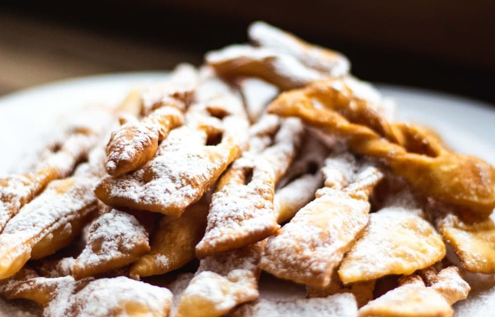
🍰 Desserts & Pâtisseries
Les Oreillettes Monégasques (De ganses)
🗣 Li gansa nissardi (niçard)
🇲🇨 Monaco — cuisine monégasque 🏡 Terroir monégasque
Ingrédients (pour un grand plat)
- 250g de farine de blé
- 50g de sucre
- 50g de beurre mou
- 2 œufs
- 2 cuillères à soupe d'eau de fleur d'oranger
- 1 pincée de sel
- huile de friture
- sucre glace.
Préparation
- Dans un saladier, mélanger la farine, le sucre et le sel.
- Ajouter les œufs entiers, le beurre mou et la fleur d'oranger.
- Pétrir énergiquement jusqu'à obtenir une pâte lisse et ferme.
- Envelopper dans un linge et laisser reposer 1 heure.
- Séparer la pâte en morceaux et l'étaler au rouleau le plus finement possible (comme une feuille de papier).
- À l'aide d'une roulette dentelée, couper des bandes de 3 cm de large et 10 cm de long, puis faire une fente au centre pour y passer une extrémité et former un nœud (ganse).
- Plonger les oreillettes dans un bain de friture bien chaud : elles doivent gonfler et dorer en quelques secondes.
- Les égoutter sur du papier absorbant et les poudrer généreusement de sucre glace.
ℹ️ Les oreillettes sont des beignets à pâte fine et croustillante (Languedoc, Provence, Rouergue). Douceur de carnaval à l'origine, elles figurent aussi parmi les treize desserts du réveillon de Noël.
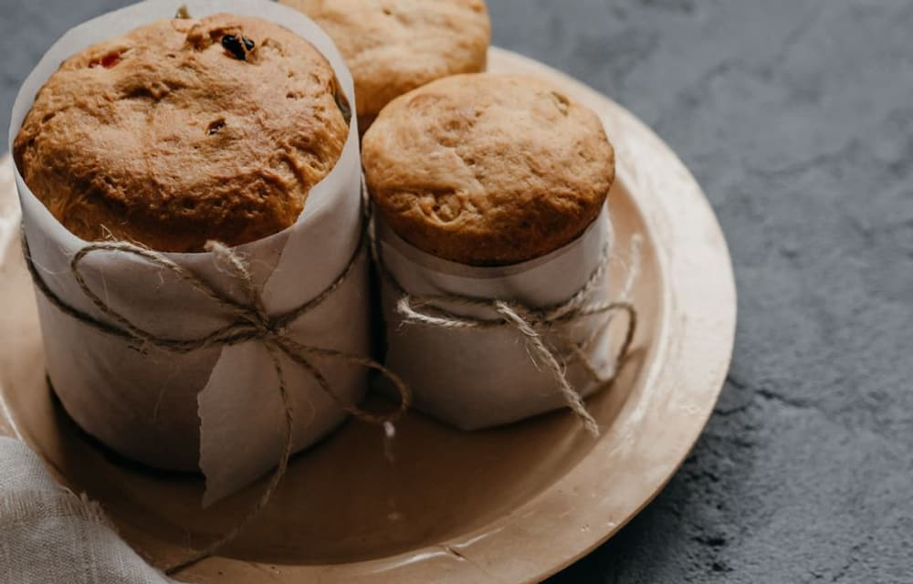
🍰 Desserts & Pâtisseries
Le Panettone de Saint-Nicolas (U Panetùn)
🇲🇨 Monaco — cuisine monégasque 🏡 Terroir monégasque
Ingrédients (1 gros gâteau)
- 500g de farine
- 1 sachet de levure de boulanger
- 120g de beurre
- 100g de sucre
- 3 œufs
- 10cl de lait tiède
- 80g de raisins secs
- 40g d'amandes
- 40g de pignons de pin
- 80g de zestes de citrons et d'oranges amères confits en dés.
Préparation
- Délayer la levure dans le lait tiède avec une cuillère de sucre.
- Mélanger la farine, le reste du sucre et une pincée de sel.
- Incorporez les œufs battus, le beurre fondu et le lait avec la levure.
- Pétrir longuement jusqu'à ce que la pâte se détache des parois.
- Laisser lever 2 heures sous un linge.
- Incorporer ensuite à la pâte les raisins secs, les pignons, les amandes concassées et les dés de fruits confits de la Riviera.
- Déposer la pâte dans un moule à bords très hauts et laisser lever à nouveau 1 heure.
- Enfourner à 170°C pendant 45 à 50 minutes jusqu'à ce que la brioche soit bien haute et dorée.
ℹ️ Originaire de Milan, le panettone trouve ses racines au Moyen Âge, où l'on enrichissait le pain pour célébrer Noël. Une légende attribue sa création à un commis nommé Toni (« pan di Toni ») à la cour des Sforza.
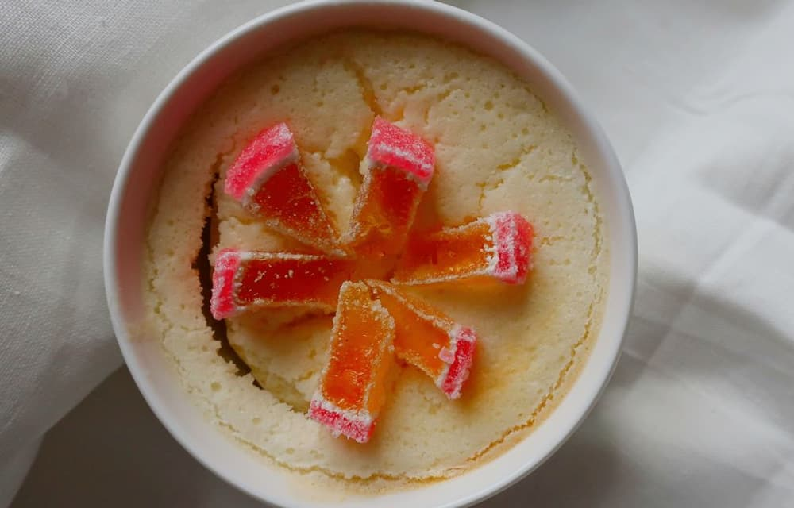
🍰 Desserts & Pâtisseries
Le Soufflé Glacé aux Mandarines de Monte-Carlo
🇲🇨 Monaco — cuisine monégasque 👑 Grande cuisine des palaces · Monte-Carlo
Ingrédients (4 personnes)
- 4 jaunes d'œufs
- 120g de sucre
- 5cl d'eau
- le jus et le zeste râpé de 4 mandarines de pays
- 3cl de liqueur de mandarine
- 25cl de crème liquide entière.
Préparation
- Cuire l'eau et le sucre à 115°C dans une casserole pour faire un sirop.
- Battre les jaunes d'œufs au fouet électrique tout en versant le sirop chaud en filet jusqu'à refroidissement complet (appareil à bombe).
- Incorporer le jus filtré, les zestes râpés des mandarines fraîches et la liqueur de mandarine.
- Monter la crème liquide entière en chantilly très ferme.
- L'incorporer délicatement à l'appareil à la mandarine à l'aide d'une maryse.
- Entourer un moule à soufflé d'une bande de papier sulfurisé qui dépasse du bord de 3 cm.
- Verser la préparation jusqu'en haut du papier et lisser.
- Placer au congélateur pendant au moins 5 heures.
- Retirer délicatement le papier avant de servir pour donner l'illusion d'un soufflé chaud qui a gonflé.
🌾Tome 6
L'Ultime Moisson des Recettes de la Riviera
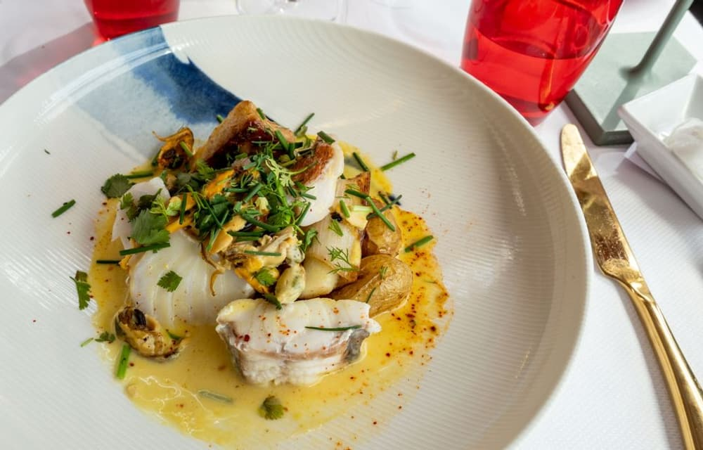
🐟 Poissons & Fruits de mer
Loup de Mer à la Monégasque (U Luvu)
🇲🇨 Monaco — cuisine monégasque 🏡 Terroir monégasque
Le loup de mer (bar) est le roi de la côte rocheuse de la Principauté. Dans les familles monégasques, la tradition dominicale consistait à le cuire au four sur un lit d'oignons doux et surtout d'artichauts violets émincés très fins. Les artichauts confisaient dans le vin blanc et l'huile d'olive en s'imprégnant du jus du poisson, tandis que les olives de Nice apportaient la touche salée finale de ce grand plat familial.
Ingrédients (4 personnes)
- 1 loup de mer (bar) de 1
- 2 kg
- 4 cuillères à soupe d'huile d'olive
- 1 branche de sauge
- 2 oignons
- 4 têtes d'artichauts violets émincées
- 50g d'olives de Nice
- 10cl de vin blanc
- sel
- poivre.
Préparation
- Vider et nettoyer le loup.
- Saler et poivrer l'intérieur avec la branche de sauge.
- Dans un grand plat allant au four, faire un lit avec les oignons émincés et les fines tranches d'artichauts violets crus.
- Poser le poisson par-dessus.
- Arroser avec l'huile d'olive et le vin blanc.
- Enfourner à 180°C pendant 25 minutes.
- À mi-cuisson, parsemer les olives de Nice tout autour et arroser régulièrement le poisson avec le jus du plat pour que la chair reste nacrée et fondante.
ℹ️ Le bar commun (Dicentrarchus labrax) s'appelle « bar » dans l'Atlantique et « loup » en Méditerranée. Ce nom de « loup » lui vient de sa voracité : il se gave de tout ce qu'il croise (sardines, anchois, crustacés).
🍖 Viandes, Volailles & Gibiers
Le Poulet en Cocotte au Citron de Menton à la Monégasque
🇲🇨 Monaco — cuisine monégasque 🏡 Terroir monégasque
Ingrédients (4 personnes)
- 1 beau poulet fermier
- 4 cuillères à soupe d'huile d'olive
- 1 citron de Menton non traité
- 10 gousses d'ail en chemise
- 1 branche de romarin
- 10cl de bouillon de volaille
- sel
- poivre.
Préparation
- Couper le citron en quatre.
- Assaisonner l'intérieur du poulet et y glisser les morceaux de citron et le romarin.
- Dans une cocotte en fonte, faire chauffer l'huile d'olive et y faire dorer le poulet sur toutes ses faces.
- Ajouter les gousses d'ail entières avec leur peau (en chemise) tout autour.
- Mouiller avec le bouillon de volaille.
- Fermer la cocotte hermétiquement et laisser cuire à feu très doux pendant 50 minutes.
- Le citron va confire et donner une sauce acidulée unique.
ℹ️ Le citron de Menton bénéficie d'une IGP depuis 2015. Sa spécificité ne tient pas aux variétés mais aux conditions pédoclimatiques d'une petite zone microclimatique littorale ; la Fête du Citron attire chaque année plus de 250 000 visiteurs.
🍖 Viandes, Volailles & Gibiers
La Daube de Bœuf à la Monégasque (A Dauba)
🇲🇨 Monaco — cuisine monégasque 🏡 Terroir monégasque
Ingrédients (6 personnes)
- 1
- 2 kg de paleron de bœuf
- 1 bouteille de vin rouge corsé
- 2 oignons
- 2 carottes
- 2 gousses d'ail
- 1 bande de couenne de porc
- 50g de cèpes séchés
- 1 bande de zeste d'orange séché
- huile d'olive.
Préparation
- La veille, faire mariner le bœuf en morceaux dans le vin rouge avec les oignons et les carottes coupés.
- Le lendemain, faire tremper les cèpes.
- Dans une cocotte, tapisser le fond avec la couenne de porc.
- Faire dorer les morceaux de viande égouttés à l'huile d'olive, puis ajouter les légumes de la marinade et l'ail.
- Mouiller avec le vin de la marinade filtré.
- Ajouter les cèpes réhydratés et le zeste d'orange (secret du terroir pour parfumer).
- Couvrir et laisser mijoter à feu minuscule pendant 4 heures.
ℹ️ Le mot « daube » vient du provençal « adobar » (« préparer, arranger ») : un ragoût de bœuf mariné au vin et braisé lentement en daubière. La variante niçoise se distingue en y incorporant des cèpes.
🍰 Desserts & Pâtisseries
Les Beignets de Sardines à la Monégasque
🇲🇨 Monaco — cuisine monégasque 🏡 Terroir monégasque
Ingrédients (4 personnes)
- 12 sardines fraîches
- 100g de farine
- 1 œuf
- 10cl de bière blonde
- 1 cuillère d'huile d'olive
- 1 gousse d'ail
- 1 bouquet de persil
- huile de friture.
Préparation
- Ouvrir les sardines en portefeuille par le ventre, retirer l'arête centrale et la tête, puis les laver et les sécher.
- Hacher l'ail et le persil, et en parsemer l'intérieur des sardines repliées.
- Faire la pâte à frire : mélanger la farine, le jaune d'œuf, l'huile d'olive et la bière.
- Laisser reposer 20 minutes, puis incorporer le blanc d'œuf monté en neige.
- Tremper chaque sardine dans cette pâte et les plonger dans la friture chaude pendant 3 minutes jusqu'à ce qu'elles soient bien croustillantes.
🍖 Viandes, Volailles & Gibiers
Tournedos Rossini à la Monte-Carlo
🇲🇨 Monaco — cuisine monégasque 👑 Grande cuisine des palaces · Monte-Carlo
Filets de bœuf sautés saignants, posés sur croûtons frits, surmontés d'une tranche de foie gras poêlée et nappés de sauce Madère truffée ; couronnés au sommet d'une belle cuillère de caviar frais juste avant l'envoi.
Ingrédients (4 personnes)
- 4 tournedos de bœuf
- 4 tranches de foie gras frais
- 1 truffe noire fraîche
- 4 tranches de pain de mie
- 50g de beurre
- 5cl de Madère
- 50g de caviar frais.
Préparation
- Frire le pain de mie au beurre pour obtenir des croûtons.
- Saisir les tournedos au beurre (saignants) et les poser sur les croûtons.
- Poêler rapidement les tranches de foie gras à sec.
- Déglacer la poêle au Madère avec la truffe hachée menu pour faire la sauce.
- Poser le foie gras chaud sur le bœuf, napper de sauce au Madère.
- Pour la touche exclusive "Monte-Carlo" des grands banquets, déposer une belle cuillère de caviar frais au sommet du foie gras juste avant de servir.
ℹ️ Le tournedos Rossini (médaillon de bœuf, foie gras poêlé, lamelles de truffe, sauce Madère) est nommé d'après le compositeur italien Gioachino Rossini (1792-1868), gastronome passionné, pour ou par qui le plat aurait été imaginé.
🥣 Potages & Soupes
Filets de Sole à la Crème de Champagne Monte-Carlo
🇲🇨 Monaco — cuisine monégasque 👑 Grande cuisine des palaces · Monte-Carlo
Ingrédients (4 personnes)
- 4 beaux filets de sole
- 20cl de Champagne brut
- 2 échalotes
- 15cl de crème fraîche double
- 30g de beurre
- 1 petite truffe noire
- sel
- poivre.
Préparation
- Hacher les échalotes et les faire suer au beurre dans une sauteuse.
- Y déposer les filets de sole pliés en deux.
- Mouiller avec le Champagne brut.
- Cuire à couvert à feu très doux pendant 6 minutes.
- Retirer les filets délicatement.
- Faire réduire le Champagne de cuisson de trois quarts, ajouter la crème fraîche double et laisser épaissir.
- Ajouter la truffe noire coupée en fine julienne.
- Remettre le poisson une minute dans la sauce pour l'enrober et servir chaud.
🍖 Viandes, Volailles & Gibiers
Ris de Veau Régence Monte-Carlo
🇲🇨 Monaco — cuisine monégasque 👑 Grande cuisine des palaces · Monte-Carlo
Ingrédients (4 personnes)
- 300g de ris de veau blanchis
- 100g de quenelles de volaille en dés
- 50g de crêtes de coq
- 1 truffe noire
- 20cl de sauce suprême blanche
- 4 coques de vol-au-vent feuilletées.
Préparation
- Couper les ris de veau braisés, les quenelles et la truffe en petits dés réguliers (salpicon).
- Réchauffer les coques de feuilletage au four.
- Dans une casserole, mélanger la sauce suprême blanche avec le salpicon et les crêtes de coq.
- Laissez mijoter 3 minutes pour lier l'ensemble.
- Remplir généreusement le cœur des vol-au-vent feuilletés bien chauds avec cette garniture de palace et servir immédiatement.
🐟 Poissons & Fruits de mer
Le Stockfish à la Monégasque des Familles (U Stocafissu)
🗣 Stocafi (munegascu (monégasque)) · 🗣 Estocafic (niçard)
🇲🇨 Monaco — cuisine monégasque 🏡 Terroir monégasque
Ingrédients (6 personnes)
- 1 kg de stockfish (morue séchée) trempé pendant 10 jours
- 10cl d'huile d'olive
- 4 oignons
- 4 gousses d'ail
- 500g de tomates mûres
- 100g d'olives noires de Nice
- 1 verre de cognac
- 50g de pignons de pin
- 1 bouquet de coriandre en grains.
Préparation
- Couper le stockfish réhydraté en morceaux.
- Dans une immense marmite en fonte, faire fondre les oignons et l'ail émincés dans l'huile d'olive.
- Ajouter le poisson et faire revenir 10 minutes.
- Flamber au cognac.
- Ajouter les tomates concassées, les olives de Nice, les pignons et la coriandre en grains.
- Couvrir d'eau à hauteur et laisser mijoter à feu très doux pendant 3 heures sans jamais remuer à la cuillère (secouer la marmite) pour ne pas briser la chair, jusqu'à obtention d'une sauce brune collante.
ℹ️ Le stocafi, considéré comme un plat national monégasque, est un ragoût de stockfish (morue séchée) mijoté avec tomates, oignons, ail, câpres et olives noires. La consommation de morue séchée, tradition d'origine scandinave, s'est répandue dans toute l'Europe à partir du XIIe siècle.
🍰 Desserts & Pâtisseries
Les Ganses de la Saint-Jean (Pâtisserie populaire de Monaco)
🇲🇨 Monaco — cuisine monégasque 🏡 Terroir monégasque
Ingrédients (pour un grand plat)
- 250g de farine
- 50g de sucre
- 50g de beurre
- 2 œufs
- 2 cuillères de liqueur de pastis (ou anis)
- 1 pincée de sel
- huile de friture
- sucre glace.
Préparation
- Pétrir tous les ingrédients ensemble pour former une pâte à pain lisse et ferme.
- Laisser reposer 1 heure sous un linge.
- Étaler la pâte au rouleau de façon extrêmement fine.
- Découper des bandes de 2 cm de large avec une roulette dentelée, puis faire un nœud lâche au centre de chaque bande.
- Plonger les ganses dans de l'huile de friture très chaude pendant 1 minute en les retournant : elles doivent gonfler et devenir croustillantes.
- Égoutter et poudrer de sucre glace.
ℹ️ À Nice, pendant le Carnaval, on prépare les « ganses » : de petites lanières de pâte à la fleur d'oranger, façonnées, frites et saupoudrées de sucre glace ; leur forme rappellerait le foulard du costume traditionnel des hommes du Carnaval.
🍰 Desserts & Pâtisseries
La Tarte aux Pignons et Citron de la Condamine
🇲🇨 Monaco — cuisine monégasque 👑 Grande cuisine des palaces · Monte-Carlo
Ingrédients (6 personnes)
- 1 pâte brisée. Crème : 3 citrons de pays (jus et zestes râpés)
- 3 œufs
- 100g de sucre
- 50g de beurre mou
- 60g de pignons de pin.
Préparation
- Foncer un moule de pâte brisée et piquer le fond.
- Dans un saladier, fouetter les œufs et le sucre, ajouter le jus et les zestes fins des citrons, puis le beurre mou pour obtenir une crème homogène.
- Verser cette crème au citron sur le fond de tarte cru.
- Parsemer généreusement toute la surface avec les pignons de pin sauvages.
- Enfourner à 180°C pendant 25 à 30 minutes : la crème doit être prise et les pignons joliment dorés et torréfiés.
- Servir froid.
ℹ️ Classique provençal, la tarte aux pignons associe une pâte sucrée et une crème d'amande, recouverte de pignons de pin — fruit du pin parasol (Pinus pinea).
✨Tome 7
L'Anthologie Céleste de la Haute Cuisine & du Terroir
🥖 Entrées, Œufs & Hors-d'œuvre
La Pissaladière Rouge à la Monégasque
🇲🇨 Monaco — cuisine monégasque 🏡 Terroir monégasque
Ingrédients (4 personnes)
- 250g de pâte à pain
- 5 gros oignons doux
- 4 cuillères à soupe d'huile d'olive
- 150g de sauce tomate de pays (très réduite et mijotée)
- 10 filets d'anchois au sel
- 50g de pissalat (pâte d'anchois et de sardines fermentée)
- 15 olives noires de Nice
- 1 pincée de sucre.
Préparation
- Émincez les oignons le plus finement possible.
- Faites-les compoter très doucement à la poêle avec l'huile d'olive et une pincée de sucre pendant 40 minutes, sans aucune coloration.
- En fin de cuisson, incorporez le pissalat pour le dissoudre dans les oignons.
- Étalez la pâte à pain finement sur une plaque huilée.
- Tartinez la pâte d'une couche régulière de sauce tomate réduite, puis étalez la fondue d'oignons par-dessus.
- Disposez les filets d'anchois rincés en formant les traditionnels croisillons, puis déposez les olives noires de Nice.
- Laissez lever 15 minutes à température ambiante, puis enfournez à 220°C pendant 12 à 15 minutes jusqu'à ce que la pâte soit croustillante.
ℹ️ La pissaladière tire son nom du pissalat, du niçois « peis salat » (« poisson salé ») : une pâte d'anchois fermentée qui garnit traditionnellement cette galette d'oignons confits et d'olives noires.
🥖 Entrées, Œufs & Hors-d'œuvre
Les Tourtons de Blettes au Brocciu à la Monégasque
🇲🇨 Monaco — cuisine monégasque 🏡 Terroir monégasque
Ingrédients (4 personnes)
- 250g de farine de blé
- 5cl d'huile d'olive
- 1 œuf
- eau tiède. Farce : 200g de vert de blettes
- 150g de brocciu frais (ou brousse de brebis)
- 1 œuf
- 40g de parmesan râpé
- une pincée de muscade
- huile de friture.
Préparation
- Préparez la pâte en mélangeant la farine, le sel, l'œuf, l'huile d'olive et assez d'eau tiède pour façonner une boule souple.
- Laissez reposer 30 minutes.
- Pour la farce, hachez le vert des blettes et faites-le blanchir 2 minutes à l'eau bouillante.
- Égouttez-le longuement et pressez-le dans un torchon pour en extraire toute l'eau.
- Dans un récipient, écrasez le brocciu à la fourchette, ajoutez les blettes, le parmesan, l'œuf entier, le sel, le poivre et la muscade.
- Étalez la pâte très finement.
- Déposez de petits tas de farce, repliez la pâte et découpez des carrés ou des ronds à l'emporte-pièce.
- Plongez les tourtons par petites séries dans l'huile de friture bien chaude (180°C) pendant 2 à 3 minutes jusqu'à ce qu'ils soient bien gonflés et dorés.
🥖 Entrées, Œufs & Hors-d'œuvre
Les Petits Farcis de la Condamine à la Grivoise
🇲🇨 Monaco — cuisine monégasque 🏡 Terroir monégasque
Ingrédients (4 personnes)
- 4 petites tomates fermes
- 4 mini-poivrons
- 4 cœurs d'artichauts. Farce : 150g de chair à saucisse locale
- 100g de blancs de volaille cuits
- la chair des légumes évidés
- 1 tranche de pain rassis trempée dans du bouillon
- 1 œuf
- 1 gousse d'ail hachée
- un bouquet de marjolaine sauvage
- huile d'olive.
Préparation
- Évidez délicatement les tomates, les poivrons et les artichauts pré-cuits à blanc.
- Récupérez la chair extraite et hachez-la.
- Faites-la sauter à la poêle avec un filet d'huile d'olive et l'ail.
- Dans un grand récipient, mélangez la chair à saucisse crue, la volaille hachée, le pain rassis bien essoré, la chair des légumes cuite, la marjolaine effeuillée et l'œuf entier.
- Salez et poivrez généreusement.
- Remplissez les légumes avec cette farce riche (dite à la grivoise), déposez-les dans un plat de cuisson arrosé d'huile d'olive et enfournez à 180°C pendant 40 minutes en arrosant à mi-cuisson.
ℹ️ Les petits farcis niçois (légumes évidés puis garnis) étaient à l'origine une façon astucieuse d'utiliser les restes de viande braisée, de rôti ou de pot-au-feu avant de devenir un plat à part entière.
🐟 Poissons & Fruits de mer
Le Ragò de Calamars à l'Huile de Palme et Citronnelle
🇲🇨 Monaco — cuisine monégasque 🏡 Terroir monégasque
Ingrédients (4 personnes)
- 800g de petits calamars nettoyés
- 3 cuillères à soupe d'huile de palme (ou d'huile de coco vierge pour retrouver les saveurs des escales des navigateurs monégasques)
- 2 bâtons de citronnelle
- 1 morceau de gingembre frais
- 2 oignons
- 15cl de lait de coco
- 1 cuillère de concentré de tomates
- 1 piment oiseau
- sel.
Préparation
- Taillez les blancs de calamars en anneaux et laissez les tentacules entières.
- Fendez les bâtons de citronnelle en deux et écrasez-les.
- Dans une sauteuse, faites chauffer l'huile de palme et faites-y revenir les oignons émincés, le gingembre râpé et le piment oiseau.
- Ajoutez les calamars et faites-les sauter vivement pendant 3 minutes pour qu'ils rendent leur eau.
- Égouttez-les et réservez-les.
- Dans la même sauteuse, versez le concentré de tomates, le lait de coco et la citronnelle.
- Laissez mijoter et réduire pendant 10 minutes à feu doux pour concentrer les arômes.
- Remettez les calamars dans la sauce parfumée et poursuivez la cuisson à feu très doux pendant 15 minutes jusqu'à ce qu'ils soient tendres.
🐟 Poissons & Fruits de mer
Langouste des Souverains au Beurre de Truffe d'Alba Monte-Carlo
🇲🇨 Monaco — cuisine monégasque 👑 Grande cuisine des palaces · Monte-Carlo
Ingrédients (4 personnes)
- 1 grosse langouste vivante d'environ 1
- 2 kg
- 1 bouteille de vin de Champagne brut
- 2 échalotes
- 80g de beurre de truffe blanche d'Alba
- 1 petite truffe blanche fraîche (pour le service)
- sel fin
- poivre blanc.
Préparation
- Plongez la langouste entière dans un court-bouillon frémissant pendant 12 minutes, puis plongez-la dans l'eau glacée.
- Décortiquez délicatement la queue et tranchez la chair en médaillons réguliers.
- Dans une casserole, faites réduire les échalotes hachées menu avec le vin de Champagne jusqu'à ce qu'il ne reste plus que deux cuillères à soupe de liquide.
- Hors du feu, incorporez le beurre de truffe blanche d'Alba en petits dés tout en fouettant énergiquement pour monter la sauce en un beurre blanc onctueux et très parfumé.
- Disposez les médaillons de langouste chauds sur le plat de service, nappez-les entièrement de cette émulsion impériale et râpez la truffe blanche fraîche en fines lamelles directement sur le plat avant de servir.
🍖 Viandes, Volailles & Gibiers
Noisettes de Chevreuil aux Figues de l'Arrière-Pays Monte-Carlo
🇲🇨 Monaco — cuisine monégasque 👑 Grande cuisine des palaces · Monte-Carlo
Ingrédients (4 personnes)
- 8 noisettes de filet de chevreuil parées
- 40g de beurre doux
- 8 figues fraîches bien mûres de l'arrière-pays
- 2 cuillères à soupe de miel de pays
- 15cl de sauce Poivrade traditionnelle
- 5cl de liqueur de vieux Cognac
- sel
- poivre.
Préparation
- Lavez les figues et coupez-les en deux.
- Dans une petite poêle, faites fondre une noisette de beurre avec le miel et faites-y caraméliser doucement les figues face coupée vers le bas pendant 5 minutes.
- Réservez-les.
- Dans une grande poêle avec le reste de beurre bien chaud, saisissez les noisettes de chevreuil pendant 2 à 3 minutes de chaque côté pour les garder bien saignantes.
- Retirez-les de la poêle.
- Déglacez immédiatement la poêle avec le Cognac vieux et flambez hors du feu.
- Versez la sauce Poivrade chaude dans la poêle et laissez réduire une minute pour récupérer tous les sucs de cuisson.
- Dressez les noisettes de chevreuil sur un plat chaud, entourez-les avec les figues caramélisées au miel et nappez généreusement avec la sauce réduite.
🍖 Viandes, Volailles & Gibiers
Noisettes de Sanglier aux Châtaignes Confites de Saorge Monte-Carlo
🇲🇨 Monaco — cuisine monégasque 👑 Grande cuisine des palaces · Monte-Carlo
Ingrédients (4 personnes)
- 8 noisettes de jeune sanglier
- 40g de beurre clarifié
- 200g de châtaignes fraîches de Saorge (ou marrons nature)
- 50cl de bouillon de viande
- 20cl de sauce Grand Veneur
- 1 pincée de quatre-épices
- sel
- poivre.
Préparation
- Incisez la peau des châtaignes et faites-les blanchir dans de l'eau bouillante pendant 10 minutes pour pouvoir retirer les deux peaux.
- Faites-les ensuite confire doucement dans une casserole avec le bouillon de viande et une pincée de quatre-épices jusqu'à ce qu'elles soient tendres mais entières.
- Saisissez les noisettes de sanglier à la poêle dans le beurre clarifié à feu vif pendant 3 minutes de chaque côté.
- Dans une casserole, faites chauffer la sauce Grand Veneur.
- Dressez les noisettes de sanglier sur un plat de gala chaud, répartissez les châtaignes confites tout autour et nappez généreusement de sauce Grand Veneur bien noire et brillante.
🍰 Desserts & Pâtisseries
Les Ganses de la Saint-Jean au Zeste de Cédrat de Menton
🇲🇨 Monaco — cuisine monégasque 🏡 Terroir monégasque
Ingrédients (pour un grand plat)
- 250g de farine de blé
- 50g de sucre
- 50g de beurre mou
- 2 œufs
- le zeste râpé d'un demi-cédrat de Menton
- 2 cuillères à soupe d'eau de fleur d'oranger
- 1 pincée de sel
- huile de friture
- sucre glace.
Préparation
- Dans un grand saladier, mélangez la farine, le sucre, le sel et le zeste très fin du cédrat.
- Incorporez les œufs entiers, le beurre mou coupé en morceaux et la fleur d'oranger.
- Pétrir la pâte vigoureusement sur le plan de travail pendant 5 à 10 minutes jusqu'à ce qu'elle devienne souple, élastique et lisse.
- Enveloppez-la dans un film alimentaire et laissez reposer 1 heure.
- Étalez la pâte au rouleau le plus finement possible.
- À l'aide d'une roulette dentelée, découpez des rectangles de 4 x 10 cm.
- Pratiquez une entaille au centre de chaque rectangle, puis passez un coin de la pâte dans la fente pour former un nœud lâche (la ganse).
- Plonger les ganses dans un bain de friture bien chaud (180°C) : elles vont souffler et dorer en moins de deux minutes.
- Égouttez sur du papier absorbant et poudrer généreusement de sucre glace.
ℹ️ À Nice, pendant le Carnaval, on prépare les « ganses » : de petites lanières de pâte à la fleur d'oranger, façonnées, frites et saupoudrées de sucre glace ; leur forme rappellerait le foulard du costume traditionnel des hommes du Carnaval.
🍰 Desserts & Pâtisseries
Le Panettone de la Saint-Nicolas aux Agrumes Confits du Rocher
🇲🇨 Monaco — cuisine monégasque 🏡 Terroir monégasque
Préparation
- Délayer la levure dans le lait tiède avec une cuillère de sucre.
- Mélanger la farine, le reste du sucre et une pincée de sel.
- Incorporez les œufs battus, le beurre fondu et le lait avec la levure.
- Pétrir longuement jusqu'à ce que la pâte se détache des parois.
- Laisser lever 2 heures sous un linge.
- Incorporer ensuite à la pâte les raisins secs, les pignons, les amandes concassées et les dés de fruits confits de la Riviera.
- Déposer la pâte dans un moule à bords très hauts et laisser lever à nouveau 1 heure.
- Enfourner à 170°C pendant 45 à 50 minutes jusqu'à ce que la brioche soit bien haute et dorée.
ℹ️ Originaire de Milan, le panettone trouve ses racines au Moyen Âge, où l'on enrichissait le pain pour célébrer Noël. Une légende attribue sa création à un commis nommé Toni (« pan di Toni ») à la cour des Sforza.
📜Tome 8
Le Trésor des Archives & Recettes Inédites de la Riviera
🐟 Poissons & Fruits de mer
Le Loup de Mer Grillé au Beurre de Cédrat Monte-Carlo
🇲🇨 Monaco — cuisine monégasque 🏡 Terroir monégasque
Ingrédients (4 personnes)
- 1 loup de mer (bar) de 1
- 5 kg vidé et écaillé
- 150g de beurre doux (pommade)
- le zeste fin et le jus d'un cédrat de pays
- 1 branche de thym frais
- 3cl d'huile d'olive
- salt
- poivre blanc.
Préparation
- Pratiquez trois légères entailles sur les flancs du poisson.
- Glissez le thym à l'intérieur, salez et poivrez.
- Badigeonnez le loup d'huile d'olive et faites-le griller au barbecue ou sous le gril du four pendant 10 à 12 minutes de chaque côté jusqu'à ce que la peau soit bien saisie.
- Pendant ce temps, préparez le beurre composé : dans un bol, malaxez le beurre pommade à la spatule avec le zeste de cédrat râpé très fin et son jus versé en filet.
- Le beurre doit devenir crémeux et homogène.
- Levez les filets du poisson cuit, dressez-les sur un plat chaud et déposez de belles rosaces de beurre de cédrat frais par-dessus pour qu'il fonde doucement à table.
ℹ️ Le bar commun (Dicentrarchus labrax) s'appelle « bar » dans l'Atlantique et « loup » en Méditerranée. Ce nom de « loup » lui vient de sa voracité : il se gave de tout ce qu'il croise (sardines, anchois, crustacés).
🍰 Desserts & Pâtisseries
Les Petits Beignets de Calamars à la Sauce Monégasque
🇲🇨 Monaco — cuisine monégasque 🏡 Terroir monégasque
Ingrédients (4 personnes)
- 600g de petits calamars nettoyés. Pâte à frire : 150g de farine
- 1 œuf
- 15cl d'eau gazeuse très glacée
- 1 pincée de sel
- huile de friture. Sauce : 4 cuillères à soupe de sauce Monégasque froide (voir recette Tome 3).
Préparation
- Taillez les blancs de calamars en anneaux réguliers de 1 cm et séchez-les parfaitement dans un linge propre.
- Préparez la pâte : dans un bol, mélangez la farine, le sel, le jaune d'œuf et l'eau gazeuse glacée (la pâte doit rester légèrement grumeleuse pour être croustillante).
- Montez le blanc d'œuf en neige et incorporez-le délicatement.
- Faites chauffer l'huile de friture à 180°C.
- Trempez les anneaux de calamar dans la pâte et plongez-les par petites séries dans l'huile chaude pendant 2 à 3 minutes jusqu'à ce qu'ils soient gonflés et d'un blond léger.
- Égouttez sur du papier absorbant et servez brûlant avec la sauce Monégasque froide à part.
🌿 Spécialités du Terroir
Les Gnocchis de Farine de Pois Chiches à la Monégasque
🗣 Panissa (niçard)
🇲🇨 Monaco — cuisine monégasque 🏡 Terroir monégasque
Ingrédients (4 personnes)
- 200g de farine de pois chiches (base de la socca)
- 50cl d'eau
- 2cl d'huile d'olive
- 1 œuf
- 50g de parmesan râpé. Sauce : 30cl de sauce tomate de pays réduite
- 1 gousse d'ail
- 50g d'olives de Nice hachées.
Préparation
- Dans une casserole, portez l'eau à ébullition avec l'huile d'olive et une pincée de sel.
- Versez la farine de pois chiches en pluie tout en fouettant vigoureusement pour éviter les grumeaux.
- Laissez cuire à feu doux pendant 5 minutes sans cesser de remuer avec une spatule en bois.
- Hors du feu, incorporez l'œuf et le parmesan.
- Étalez cette pâte sur une plaque huilée sur une épaisseur de 1,5 cm et laissez refroidir.
- Taillez ensuite la pâte en petits carrés (gnocchis) et marquez-les avec les dents d'une fourchette.
- Faites-les dorer à la poêle dans un filet d'huile d'olive pendant 2 minutes de chaque côté.
- Servez les gnocchis bien croustillants nappés de sauce tomate chaude aux olives de Nice.
ℹ️ La socca, galette de farine de pois chiches emblématique de Nice, serait apparue au XVIIe siècle (héritée de la « farinata » ligure). C'était un en-cas populaire et bon marché, le repas des pêcheurs et des ouvriers.
🐟 Poissons & Fruits de mer
La Salade de Poulpe Tiède aux Câpres et Citron de Menton
🇲🇨 Monaco — cuisine monégasque 🏡 Terroir monégasque
Ingrédients (4 personnes)
- 800g de poulpe de roche
- 1 bouchon de liège (astuce de marin pour attendrir)
- 1 oignon
- 1 carotte
- 1 bouquet garni. Garniture : 2 cuillères à soupe de câpres fines
- le jus et le zeste d'un citron de Menton
- 5cl d'huile d'olive vierge
- persil plat ciselé.
Préparation
- Placez le poulpe dans une grande marmite d'eau froide avec l'oignon, la carotte, le bouquet garni et le bouchon de liège.
- Portez à ébullition et laissez cuire à petits bouillons pendant 1 heure jusqu'à ce que la chair soit tendre.
- Égouttez le poulpe et coupez les tentacules en morceaux réguliers pendant qu'il est encore chaud.
- Dans un grand saladier, mélangez le jus de citron, le zeste râpé fin, l'huile d'olive, le sel et le poivre.
- Ajoutez les morceaux de poulpe tièdes, les câpres fines et le persil plat ciselé.
- Mélangez délicatement et servez aussitôt à température ambiante.
ℹ️ Le citron de Menton bénéficie d'une IGP depuis 2015. Sa spécificité ne tient pas aux variétés mais aux conditions pédoclimatiques d'une petite zone microclimatique littorale ; la Fête du Citron attire chaque année plus de 250 000 visiteurs.
🍖 Viandes, Volailles & Gibiers
Tournedos Henri IV au Beurre de Truffe Monte-Carlo
🇲🇨 Monaco — cuisine monégasque 👑 Grande cuisine des palaces · Monte-Carlo
Ingrédients (4 personnes)
- 4 tournedos de filet de bœuf
- 4 fonds d'artichauts cuits
- 15cl de sauce béarnaise bien relevée
- 50g de beurre de truffe noire (voir recette Tome 4)
- 1 petite truffe noire fraîche
- 30g de beurre fin
- salt
- poivre.
Préparation
- Faites chauffer les fonds d'artichauts au beurre et garnissez leur centre avec la sauce béarnaise chaude.
- Dans une grande poêle avec le beurre fin, saisissez les tournedos à feu vif pour les garder saignants.
- Déposez chaque tournedos sur le plat de service chaud, flanqué d'un fond d'artichaut à la béarnaise.
- Déposez immédiatement un beau morceau de beurre de truffe noire sur la viande brûlante pour qu'il nappe la pièce en fondant.
- Pour finir, râpez quelques lamelles de truffe noire fraîche par-dessus et servez ce classique des grands banquets de palace.
🍖 Viandes, Volailles & Gibiers
Les Suprêmes de Poularde aux Morilles et Champagne Monte-Carlo
🇲🇨 Monaco — cuisine monégasque 👑 Grande cuisine des palaces · Monte-Carlo
Ingrédients (4 personnes)
- 4 suprêmes de poularde de Bresse
- 200g de morilles fraîches (ou réhydratées)
- 20cl de Champagne brut
- 1 échalote
- 15cl de crème fraîche double
- 40g de beurre fin
- salt
- poivre blanc.
Préparation
- Nettoyez soigneusement les morilles.
- Dans une sauteuse avec la moitié du beurre, faites dorer les suprêmes de poularde côté peau pendant 5 minutes, puis retournez-les et laissez cuire encore 5 minutes à feu doux.
- Retirez-les et gardez-les au chaud.
- Dans la même sauteuse, faites suer l'échalote hachée menu, ajoutez les morilles et laissez sauter 3 minutes.
- Mouillez avec le Champagne brut et laissez réduire de moitié.
- Ajoutez la crème fraîche double, salez, poivrez et laissez mijoter jusqu'à ce que la sauce soit onctueuse.
- Remettez les suprêmes dans la crème aux morilles pour les enrober pendant une minute et dressez sur un plat chaud.
🍖 Viandes, Volailles & Gibiers
Les Noisettes d'Agneau en Croûte de Parmesan à la Monégasque
🇲🇨 Monaco — cuisine monégasque 🏡 Terroir monégasque
Ingrédients (4 personnes)
- 8 noisettes de filet d'agneau
- 1 œuf
- 50g de chapelure fine
- 50g de parmesan râpé
- 1 cuillère à café de marjolaine
- 40g de beurre
- 20cl de jus d'agneau lié
- de petites tomates confites pour le décor.
Préparation
- Dans une assiette creuse, mélangez la chapelure fine, le parmesan râpé et la marjolaine séchée.
- Battez l'œuf dans une autre assiette.
- Salez et poivrez les noisettes d'agneau.
- Trempez chaque pièce dans l'œuf battu, puis roulez-les généreusement dans le mélange de chapelure au fromage en pressant avec les doigts pour bien faire adhérer la croûte.
- Faites chauffer le beurre dans une poêle et faites-y cuire les noisettes à feu moyen pendant 3 à 4 minutes de chaque côté jusqu'à ce que la croûte soit bien dorée et croustillante, tout en gardant la viande rosée à cœur.
- Servez avec le jus d'agneau chaud et les tomates confites.
🍰 Desserts & Pâtisseries
Le Flan Artisanal à la Fleur d'Oranger et Pignons de Monaco
🇲🇨 Monaco — cuisine monégasque 👑 Grande cuisine des palaces · Monte-Carlo
Ingrédients (6 personnes)
- 50cl de lait entier
- 4 œufs entiers
- 100g de sucre en poudre
- 2 cuillères à soupe d'eau de fleur d'oranger pure
- 40g de pignons de pin sauvages
- un peu de beurre pour le moule.
Préparation
- Préchauffez le four à 160°C.
- Dans une poêle sèche, faites torréfier les pignons de pin pendant 2 minutes jusqu'à ce qu'ils soient blonds et parfumés.
- Disposez-les au fond d'un moule à flan préalablement beurré.
- Dans un saladier, fouettez les œufs entiers avec le sucre en poudre sans chercher à faire mousser.
- Faites chauffer le lait entier dans une casserole, puis versez-le lentement sur les œufs tout en remuant doucement.
- Incorporez l'eau de fleur d'oranger.
- Versez délicatement cet appareil dans le moule sur les pignons (les pignons vont remonter légèrement).
- Cuisez au bain-marie au four pendant 40 minutes.
- Laissez refroidir complètement à température ambiante, puis réservez au frais 3 heures avant de démouler.
🍰 Desserts & Pâtisseries
La Tarte aux Cerises Confites et Frangipane de Monaco
🇲🇨 Monaco — cuisine monégasque 👑 Grande cuisine des palaces · Monte-Carlo
Ingrédients (6 personnes)
- 1 pâte sablée fine. Farce : 100g de poudre d'amandes
- 80g de beurre pommade
- 80g de sucre
- 1 œuf
- 1 cuillère d’eau de fleur d'oranger
- 150g de véritables cerises confites au sirop.
Préparation
- Foncer un moule à tarte avec la pâte sablée et piquez le fond avec une fourchette.
- Préparer la crème frangipane : dans un bol, travaillez le beurre pommade avec le sucre, ajoutez l'œuf entier, la poudre d'amandes et la fleur d'oranger.
- Mélangez vigoureusement jusqu'à obtention d'une texture lisse.
- Étalez cette crème sur le fond de tarte.
- Coupez les cerises confites en deux et enfoncez-les harmonieusement dans la crème d'amandes.
- Enfournez à 180°C pendant 30 minutes : la pâte doit être bien dorée et la crème prise.
- Laissez refroidir avant de déguster.
🍰 Desserts & Pâtisseries
Le Parfait Glacé au Grand-Marnier & Éclats de Nougatine Monte-Carlo
🇲🇨 Monaco — cuisine monégasque 👑 Grande cuisine des palaces · Monte-Carlo
Ingrédients (6 personnes)
- 4 jaunes d'œufs
- 120g de sucre
- 5cl d'eau
- 5cl de liqueur de Grand-Marnier
- 30cl de crème liquide entière
- 50g de nougatine croustillante.
Préparation
- Concassez grossièrement la nougatine en petits éclats.
- Cuisez le sucre et l'eau à 115°C dans une casserole pour faire un sirop.
- Battez les jaunes d'œufs au fouet électrique tout en versant le sirop chaud en filet jusqu'à refroidissement complet de l'appareil (appareil à bombe).
- Ajoutez la liqueur de Grand-Marnier.
- Monter la crème liquide en chantilly ferme.
- Incorporez délicatement la chantilly et les éclats de nougatine croustillante à la préparation à l'aide d'une maryse.
- Verser dans un moule tapissé de film étirable et bloquer au congélateur pendant au moins 6 heures avant de couper en tranches pour le service.
⚓Tome 9
Les Formules Retrouvées des Grands Maîtres & Traditions du Port
🥖 Entrées, Œufs & Hors-d'œuvre
Les Poivrons Doux Farcis à la Monégasque
🇲🇨 Monaco — cuisine monégasque 🏡 Terroir monégasque
Ingrédients (4 personnes)
- 4 poivrons doux de taille moyenne (rouges ou jaunes)
- 200g de thon blanc à l'huile d'olive
- 2 œufs durs
- 1 cuillère à soupe de câpres fines
- 6 filets d'anchois à l'huile
- 1 bouquet de persil plat
- 2 cuillères à soupe de mayonnaise maison.
Préparation
- Lavez les poivrons.
- Coupez le chapeau et retirez délicatement toutes les graines et les membranes blanches à l'intérieur sans percer la peau.
- Faites-les blanchir 3 minutes dans une casserole d'eau bouillante salée, puis plongez-les dans l'eau glacée pour qu'ils restent fermes ; égouttez-les bien la tête en bas.
- Préparez la farce froide : dans un saladier, écrasez le thon blanc égoutté et les œufs durs à la fourchette.
- Ajoutez les câpres fines, les anchois et le persil plat hachés menu.
- Liez le tout avec la mayonnaise maison, salez légèrement et poivrez.
- Garnissez généreusement l'intérieur des poivrons froids avec cette farce.
- Replacez les chapeaux et réservez au frais pendant 1 heure avant de servir en entrée d'été.
ℹ️ Les petits farcis niçois (légumes évidés puis garnis) étaient à l'origine une façon astucieuse d'utiliser les restes de viande braisée, de rôti ou de pot-au-feu avant de devenir un plat à part entière.
🐟 Poissons & Fruits de mer
Le Filet de Loup de Mer en Papillote de Vigne à la Monégasque
🇲🇨 Monaco — cuisine monégasque 🏡 Terroir monégasque
Ingrédients (4 personnes)
- 4 beaux filets de loup de mer (bar) de 150g chacun
- 8 grandes feuilles de vigne fraîches (ou en saumure)
- 1 bulbe de fenouil
- 1 citron de pays
- 4 filets d'anchois
- 5cl d'huile d'olive vierge extra
- sel fin
- poivre.
Préparation
- Si vous utilisez des feuilles de vigne en saumure, rincez-les bien à l'eau tiède et séchez-les.
- Émincez le bulbe de fenouil le plus finement possible à la mandoline.
- Taillez le citron en tranches très minces.
- Pour chaque papillote, étalez deux feuilles de vigne en les faisant se chevaucher sur votre plan de travail.
- Déposez un petit lit de fenouil émincé au centre.
- Posez un filet de loup de mer assaisonné par-dessus.
- Déposez une rondelle de citron et un filet d'anchois sur le poisson.
- Arrosez d'un filet d'huile d'olive.
- Repliez soigneusement les feuilles de vigne par-dessus le poisson pour former un paquet étanche (vous pouvez le ficeler lâchement).
- Disposez les quatre papillotes sur une plaque et enfournez à 200°C pendant 12 à 15 minutes.
- Servir fermé directement dans l'assiette.
ℹ️ Le bar commun (Dicentrarchus labrax) s'appelle « bar » dans l'Atlantique et « loup » en Méditerranée. Ce nom de « loup » lui vient de sa voracité : il se gave de tout ce qu'il croise (sardines, anchois, crustacés).
🐟 Poissons & Fruits de mer
Les Petits Raviolis de Homard Sauce Américaine Monte-Carlo
🇲🇨 Monaco — cuisine monégasque 🏡 Terroir monégasque
Ingrédients (4 personnes)
- 300g de pâte fraîche aux œufs fine
- 150g de chair de homard cuite
- 50g de ricotta
- 1 petite truffe noire hachée menu
- 1 œuf. Sauce : 25cl de sauce américaine (crustacés) très réduite
- 5cl de crème liquide entière
- 20g de beurre fin
- sel
- piment de Cayenne.
Préparation
- Préparez la farce : hachez très finement la chair de homard cuite au couteau.
- Dans un bol, mélangez-la avec la ricotta écrasée, la truffe noire hachée et un blanc d'œuf.
- Salez et ajoutez une pointe de piment de Cayenne.
- Étalez la pâte fraîche le plus finement possible.
- Déposez de petites cuillères de farce, dorez le tour au jaune d'œuf, recouvrez de pâte et découpez de petits raviolis ronds.
- Faites-les pocher dans une grande casserole d'eau frémissante salée pendant 3 minutes, puis égouttez-les délicatement.
- Pendant ce temps, chauffez la sauce américaine avec la crème et montez-la hors du feu avec le beurre en morceaux pour la faire briller.
- Nappez les raviolis chauds de cette sauce de palace et servez.
🥖 Entrées, Œufs & Hors-d'œuvre
La Salade de Filets de Soles Froids à la Monégasque
🇲🇨 Monaco — cuisine monégasque 👑 Grande cuisine des palaces · Monte-Carlo
Ingrédients (4 personnes)
- 4 filets de sole nets
- 15cl de vin blanc sec
- 1 oignon
- 1 bouquet garni
- 1 cœur de laitue romaine
- 1 cuillère à soupe de câpres
- 12 petites olives de Nice
- 4 filets d'anchois. Vinaigrette : 5cl d'huile d'olive vierge
- 2 cuillères de vinaigre de vin vieux
- persil haché
- sel
- poivre.
Préparation
- Préparez un petit court-bouillon avec le vin blanc, un peu d'eau, l'oignon émincé et le bouquet garni.
- Faites-y pocher les filets de sole à petits frémissements pendant 4 à 5 minutes.
- Retirez-les délicatement à l'écumoire et laissez-les refroidir complètement au réfrigérateur.
- Pour le dressage : lavez et séchez la laitue romaine, coupez-la en lanières et tapissez-en le fond d'un grand plat.
- Disposez les filets de sole froids par-dessus.
- Décorez le plat avec les câpres fines, les olives de Nice dénoyautées et les filets d'anchois croisés.
- Réalisez la vinaigrette à l'huile d'olive et au vinaigre de vin vieux, ajoutez le persil haché et arrosez la salade de la mer juste avant de servir.
🍖 Viandes, Volailles & Gibiers
Les Tournedos de Filet de Bœuf à la Sauce Madère & Cèpes Monte-Carlo
🇲🇨 Monaco — cuisine monégasque 👑 Grande cuisine des palaces · Monte-Carlo
Ingrédients (4 personnes)
- 4 beaux tournedos de bœuf bien épais
- 150g de cèpes frais (ou bouchons)
- 40g de beurre doux
- 10cl de vin de Madère vieux
- 15cl de jus de bœuf corsé réduit
- 1 petite truffe noire fraîche
- salt
- poivre du moulin.
Préparation
- Nettoyez les cèpes et coupez-les en tranches épaisses.
- Faites-les sauter à la poêle avec une noisette de beurre pendant 5 minutes jusqu'à ce qu'ils soient bien dorés, puis réservez-les.
- Dans une grande poêle avec le reste de beurre très chaud, saisissez les tournedos de bœuf à feu vif pendant 2 à 3 minutes de chaque côté selon la cuisson désirée (la viande doit rester saignante).
- Retirez la viande et réservez-la au chaud sous une feuille d'aluminium.
- Déglacez immédiatement la poêle chaude avec le vin de Madère vieux en grattant bien les sucs de cuisson.
- Ajoutez le jus de bœuf réduit et la truffe hachée menu, laissez bouillonner 2 minutes pour épaissir la sauce.
- Remettez les cèpes.
- Dressez les tournedos sur un plat chaud, nappez-les avec la sauce onctueuse au Madère et aux cèpes, et décorez le dessus de chaque pièce de fines lamelles de truffe fraîche.
🥣 Potages & Soupes
Les Suprêmes de Chapon aux Truffes Noires & Crème de Porto Monte-Carlo
🇲🇨 Monaco — cuisine monégasque 👑 Grande cuisine des palaces · Monte-Carlo
Ingrédients (4 personnes)
- 4 beaux suprêmes de chapon (ou de grosse poularde)
- 1 grande truffe noire fraîche du Périgord
- 15cl de vin de Porto rouge de qualité
- 20cl de crème fraîche double
- 40g de beurre doux
- sel fin
- poivre blanc.
Préparation
- Glissez avec précaution des lamelles de truffe noire fraîche directement sous la peau de chaque suprême de chapon (c'est la technique du "truffage sous la peau").
- Hachez le reste de la truffe noire très finement.
- Dans une grande sauteuse, faites fondre le beurre et déposez-y les suprêmes côté peau.
- Laissez-les dorer doucement pendant 6 minutes, puis retournez-les, couvrez et poursuivez la cuisson à feu doux pendant 10 minutes pour que la chair reste très moelleuse.
- Retirez-les et gardez-les au chaud.
- Déglacez la sauteuse avec le Porto rouge, laissez réduire de moitié, puis ajoutez la crème fraîche double et la truffe noire hachée.
- Laissez mijoter à petits bouillons jusqu'à ce que la crème soit onctueuse et nappe la cuillère.
- Dressez les suprêmes truffés sur le plat et nappez-les de cette sauce riche au Porto.
🍖 Viandes, Volailles & Gibiers
Les Côtelettes d'Agneau en Croûte d'Herbes du Maquis à la Monégasque
🇲🇨 Monaco — cuisine monégasque 🏡 Terroir monégasque
Ingrédients (4 personnes)
- 8 belles côtelettes d'agneau premières
- 1 œuf
- 50g de chapelure de pain très fine
- 1 cuillère à soupe de thym frais
- 1 cuillère de sarriette
- 1 cuillère de marjolaine hachée
- 40g de beurre fin
- sel
- poivre.
Préparation
- Dans une assiette creuse, mélangez intimement la chapelure fine avec l'ensemble des herbes du maquis hachées menu (thym, sarriette, marjolaine).
- Battez l'œuf entier dans une seconde assiette avec du sel et du poivre.
- Assaisonnez les côtelettes d'agneau.
- Trempez chaque côtelette dans l'œuf battu, puis roulez-les généreusement dans la chapelure aux herbes en pressant bien avec la paume des mains pour que la croûte soit régulière.
- Faites chauffer le beurre dans une grande poêle.
- Dès qu'il est mousseux, déposez les côtelettes et faites-les cuire à feu moyen pendant 3 minutes de chaque côté : la croûte doit être bien dorée et croustillante, et la viande d'un rose tendre à cœur.
- Servir immédiatement avec un filet de citron.
🍰 Desserts & Pâtisseries
Le Flan Moelleux à l'Eau de Fleur d'Oranger et Amandes Effilées de Monaco
🇲🇨 Monaco — cuisine monégasque 👑 Grande cuisine des palaces · Monte-Carlo
Ingrédients (6 personnes)
- 50cl de lait entier
- 4 œufs frais
- 100g de sucre blanc en poudre
- 2 cuillères à soupe d'eau de fleur d'oranger pure
- 40g d'amandes effilées
- une noisette de beurre pour le moule.
Préparation
- Préchauffez votre four à 160°C.
- Dans une poêle sèche sans aucune matière grasse, faites dorer les amandes effilées pendant 2 minutes en remuant constamment pour les torréfier légèrement ; déposez-les au fond d'un moule à flan préalablement beurré.
- Dans un grand saladier, cassez les œufs entiers et fouettez-les doucement avec le sucre en poudre (sans chercher à faire mousser l'appareil).
- Portez le lait à frémissement dans une casserole, puis versez-le lentement sur les œufs tout en mélangeant à la spatule.
- Incorporez l'eau de fleur d'oranger pure.
- Versez délicatement cet appareil dans le moule sur le lit d'amandes (les amandes vont flotter et remonter légèrement).
- Faites cuire au bain-marie au four pendant 40 minutes.
- Laissez refroidir complètement à température ambiante, puis réservez au frais pendant au moins 3 heures avant de démouler délicatement sur le plat de service.
🍰 Desserts & Pâtisseries
La Tarte aux Fruits Confits de la Riviera & Crème Frangipane
🇲🇨 Monaco — cuisine monégasque 👑 Grande cuisine des palaces · Monte-Carlo
📜 Méthode non retrouvée dans le manuscrit — ingrédients conservés fidèlement.
ℹ️ La méthode détaillée n'était pas dans le manuscrit. Recette sœur avec méthode complète dans ce répertoire : « Tarte aux Cerises Confites et Frangipane de Monaco » (même technique : fond sablé, crème frangipane, garniture de fruits confits, cuisson puis lustrage à la gelée d'abricot).
🎆Tome 10
Le Grand Final du Répertoire de la Riviera

🍰 Desserts & Pâtisseries
Le Flanchet de Veau Miroton à la Monégasque
🇲🇨 Monaco — cuisine monégasque 🏡 Terroir monégasque
Ingrédients (4 personnes)
- 800g de flanchet (ou poitrine) de veau
- 2 oignons
- 2 gousses d'ail
- 4 cuillères à soupe d'huile d'olive
- 20cl de sauce tomate de pays
- 1 cuillère à soupe de vinaigre de vin vieux
- 1 cuillère à café de sucre
- 1 cuillère de câpres
- 8 olives de Nice.
Préparation
- Faites pocher le veau dans un grand faitout d'eau aromatisée pendant 1 heure pour le rendre tendre, puis taillez-le en tranches épaisses.
- Dans une sauteuse, faites dorer les oignons émincés à l'huile d'olive.
- Ajoutez le vinaigre, le sucre et laissez réduire une minute.
- Ajoutez la sauce tomate, l'ail écrasé, les câpres et les olives de Nice.
- Disposez les tranches de veau cuites dans cette sauce relevée et laissez mijoter à feu doux pendant 20 minutes (façon miroton) pour que la viande s'imprègne de toutes les saveurs méridionales.
🍖 Viandes, Volailles & Gibiers
Les Escalopes de Volaille Panées à la Milanaise de Monte-Carlo
🇲🇨 Monaco — cuisine monégasque 👑 Grande cuisine des palaces · Monte-Carlo
Ingrédients (4 personnes)
- 4 fines escalopes de poulet (ou de dinde)
- 1 œuf
- 50g de chapelure fine
- 50g de parmesan râpé
- 40g de beurre fin
- 1 citron. Garniture : 1 truffe noire fraîche hachée
- 10cl de jus de viande corsé.
Préparation
- Mélangez la chapelure fine et le parmesan râpé dans une assiette creuse.
- Battez l'œuf dans une autre assiette.
- Passez les escalopes assaisonnées dans l'œuf battu, puis enrobez-les généreusement du mélange chapelure/parmesan.
- Faites chauffer le beurre dans une grande poêle et faites-y dorer les escalopes à feu moyen pendant 4 minutes de chaque côté jusqu'à ce qu'elles soient croustillantes.
- Préparez la sauce : chauffez le jus de viande avec la truffe noire hachée.
- Servez les escalopes milanaises brûlantes, nappées du cordon de jus truffé de palace et décorées de quartiers de citron.

🍖 Viandes, Volailles & Gibiers
Les Ris de Veau Demi-Deuil en Vol-au-Vent Monte-Carlo
🇲🇨 Monaco — cuisine monégasque 👑 Grande cuisine des palaces · Monte-Carlo
Ingrédients (4 personnes)
- 300g de ris de veau blanchis
- 1 grande truffe noire fraîche
- 20cl de sauce veloutée blanche (bouillon lié au roux et crème)
- 4 grandes croûtes de vol-au-vent en pâte feuilletée.
Préparation
- Taillez la truffe noire en fines lamelles.
- Insérez une partie des lamelles directement au cœur des ris de veau blanchis et parés, puis faites-les braiser doucement au four avec un peu de bouillon.
- Coupez le reste de la truffe et les parures de ris de veau en petits dés, et incorporez-les à la sauce veloutée blanche chaude.
- Passez les croûtes de feuilletage au four pour les réchauffer.
- Coupez les ris de veau braisés en morceaux (qui présentent un aspect bicolore noir et blanc dit "en demi-deuil").
- Remplissez les vol-au-vent de sauce onctueuse truffée et déposez les morceaux de ris de veau par-dessus avant de replacer le chapeau de pâte.
ℹ️ La cuisine « demi-deuil » consiste à glisser des lamelles de truffe noire sous la peau d'une volaille (ou d'un ris) : le blanc de la chair et le noir de la truffe évoquent une tenue de demi-deuil. Spécialité lyonnaise popularisée par la Mère Fillioux puis Eugénie Brazier.
🍖 Viandes, Volailles & Gibiers
Le Ragoût d'Agneau de Lait aux Artichauts Violets à la Monégasque
🇲🇨 Monaco — cuisine monégasque 🏡 Terroir monégasque
Ingrédients (4 personnes)
- 800g d'épaule d'agneau de lait coupée en morceaux
- 6 petits artichauts violets sauvages
- 1 citron
- 4 cuillères à soupe d'huile d'olive
- 1 oignon
- 2 gousses d'ail
- 10cl de vin blanc sec
- un bouquet de sarriette fraîche.
Préparation
- Parez les petits artichauts violets en enlevant les feuilles dures, coupez-les en quatre et plongez-les dans de l'eau citronnée.
- Dans une cocotte, faites chauffer l'huile d'olive et faites-y dorer les morceaux d'agneau de lait.
- Ajoutez l'oignon émincé et l'ail écrasé.
- Mouillez avec le vin blanc sec et laissez s'évaporer.
- Ajoutez les quartiers d'artichauts égouttés et le bouquet de sarriette.
- Couvrez d'un peu d'eau chaude, salez, poivrez et laissez mijoter à couvert et à feu très doux pendant 45 minutes jusqu'à ce que l'agneau et les artichauts soient fondants.
🐟 Poissons & Fruits de mer
Les Médaillons de Homard au Sabayon de Champagne Monte-Carlo
🇲🇨 Monaco — cuisine monégasque 👑 Grande cuisine des palaces · Monte-Carlo
Ingrédients (4 personnes)
- 1 homard entier cuit au court-bouillon
- 20cl de Champagne brut
- 2 jaunes d'œufs frais
- 60g de beurre doux
- une pincée de piment de Cayenne
- sel fin.
Préparation
- Décortiquez le homard cuit, récupérez la chair de la queue et des pinces, et coupez-la en médaillons réguliers.
- Disposez-les dans un plat allant au four.
- Préparez le sabayon de palace : dans un cul-de-poule posé sur un bain-marie doux, fouettez énergiquement les jaunes d'œufs avec le Champagne brut.
- Battez sans cesser jusqu'à ce que le mélange double de volume, devienne très mousseux et onctueux.
- Hors du feu, incorporez le beurre en petits morceaux tout en continuant de fouetter, ajoutez le sel et le piment de Cayenne.
- Versez ce sabayon aérien sur les médaillons de homard et passez le plat sous le gril du four (salamandre) pendant 45 secondes, juste pour glacer et dorer le dessus avant de servir brûlant.
🐟 Poissons & Fruits de mer
Le Sauté de Seiche au Beurre d'Anchois & Romarin à la Monégasque
🇲🇨 Monaco — cuisine monégasque 🏡 Terroir monégasque
Ingrédients (4 personnes)
- 800g de blancs de seiche
- 40g de beurre d'anchois (voir recette Tome 4)
- 2 cuillères à soupe d'huile d'olive
- 1 branche de romarin frais
- 1 citron jaune
- poivre du moulin.
Préparation
- Nettoyez les blancs de seiche et taillez-les en petits carrés réguliers.
- Pratiquez des incisions en quadrillage sur la chair pour qu'ils cuisent uniformément.
- Dans une grande poêle très chaude avec l'huile d'olive et la branche de romarin, jetez les morceaux de seiche et faites-les sauter à feu très vif pendant 3 à 4 minutes seulement (ils vont se recroqueviller et cuire sans durcir).
- Retirez du feu et jetez le romarin.
- Incorporez immédiatement le beurre d'anchois froid dans la poêle chaude avec la seiche, remuez vivement pour créer une sauce liée et enrobante grâce à la chaleur résiduelle.
- Ajoutez un trait de jus de citron frais et servez chaud.
ℹ️ L'encre de seiche parfume et teinte en noir profond les préparations méditerranéennes. Historiquement, la seiche faisait partie des produits « modestes » que les pêcheurs gardaient, les poissons nobles partant à la criée.
🍖 Viandes, Volailles & Gibiers
Les Cailles en Gelée de Madère aux Losanges de Truffe Monte-Carlo
🇲🇨 Monaco — cuisine monégasque 👑 Grande cuisine des palaces · Monte-Carlo
Ingrédients (4 personnes)
- 4 belles cailles
- 40g de beurre
- 40cl de gelée de viande claire
- 5cl de vin de Madère vieux
- 1 petite truffe noire fraîche.
Préparation
- Faites rôtir les cailles entières au beurre dans une cocotte pendant 15 minutes pour qu'elles restent moelleuses, puis laissez-les refroidir.
- Mélangez la gelée de viande liquide avec le vin de Madère vieux.
- Prenez un grand plat de présentation froid, versez-y un fond de gelée au Madère et placez au frais pour faire figer.
- Découpez la truffe noire en tranches, puis en petits losanges réguliers (rappelant les fusées des armes de Monaco).
- Désossez les cailles froides en gardant les suprêmes nets.
- Trempez chaque morceau de caille dans de la gelée liquide froide, déposez-les sur le lit de gelée figée, et décorez chaque morceau avec les losanges de truffe.
- Nappez à nouveau de gelée pour fixer le décor et réservez au frais 2 heures avant de présenter ce plat de grand buffet.
🍰 Desserts & Pâtisseries
Le Gâteau de Semoule à la Poudre d'Amandes & Sirop de Mandarine
🇲🇨 Monaco — cuisine monégasque 👑 Grande cuisine des palaces · Monte-Carlo
Ingrédients (6 personnes)
- 100g de semoule de blé fine
- 50cl de lait entier
- 80g de sucre
- 50g de poudre d'amandes
- 3 œufs
- 30g de beurre. Sirop : 10cl d'eau
- 80g de sucre
- le jus et le zeste d'une mandarine locale.
Préparation
- Faites bouillir le lait avec le beurre et le sucre.
- Versez la semoule en pluie tout en fouettant, laissez épaissir 3 minutes sur feu doux.
- Hors du feu, ajoutez la poudre d'amandes et les œufs battus.
- Verser dans un moule beurré et cuire au four à 180°C pendant 30 minutes.
- Pendant la cuisson, préparez le sirop en cuisant l'eau, le sucre, le jus et le zeste fin de la mandarine pendant 5 minutes.
- À la sortie du four, arrosez le gâteau de semoule chaud avec ce sirop d'agrumes parfumé pour qu'il s'imbibe totalement avant de laisser refroidir.
🍰 Desserts & Pâtisseries
La Tarte aux Pignons Sauvages & Marmelade d'Oranges Amères
🇲🇨 Monaco — cuisine monégasque 👑 Grande cuisine des palaces · Monte-Carlo
Ingrédients (6 personnes)
- 1 pâte sablée fine
- 150g de marmelade artisanale d'oranges amères (oranges de la Principauté)
- 80g de pignons de pin sauvages
- 1 œuf (pour la dorure).
Préparation
- Foncer un moule à tarte avec la pâte sablée, piquez le fond et réservez au frais.
- Étalez une couche épaisse et régulière de marmelade d'oranges amères directement sur le fond de tarte cru.
- Parsemez généreusement toute la surface avec les pignons de pin sauvages de manière à recouvrir la confiture.
- À l'aide des chutes de pâte, vous pouvez dessiner de fines lanières de pâte croisées sur le dessus pour décorer et les dorer à l'œuf.
- Enfournez à 180°C pendant 25 à 30 minutes : les pignons de pin doivent être bien torréfiés et la pâte croustillante.
- Servir froid avec un café.
ℹ️ Classique provençal, la tarte aux pignons associe une pâte sucrée et une crème d'amande, recouverte de pignons de pin — fruit du pin parasol (Pinus pinea).
🌿 Spécialités du Terroir
Les Petits Fours à la Fleur d'Oranger & Macarons Croustillants de Monaco
🇲🇨 Monaco — cuisine monégasque 👑 Grande cuisine des palaces · Monte-Carlo
Ingrédients (pour une belle plaque)
- 150g de poudre d'amandes douces
- 150g de sucre glace
- 2 blancs d'œufs frais
- 1 cuillère à soupe d'eau de fleur d'oranger pure
- quelques dragées blanches pour le décor.
Préparation
- Dans un grand saladier, mélangez intimement la poudre d'amandes douces et le sucre glace.
- Ajoutez l'eau de fleur d'oranger pure.
- Incorporez les blancs d'œufs un par un (non montés) en travaillant la pâte à la spatule ou à la main pour obtenir une pâte d'amandes souple, homogène et malléable.
- Mettez la préparation dans une poche munie d'une douille cannelée.
- Sur une plaque de cuisson recouverte de papier sulfurisé, dressez de petits dômes réguliers (petits fours).
- Déposez un éclat de dragée blanche au sommet de chaque pièce.
- Enfournez à 170°C pendant 12 à 15 minutes seulement : les petits fours doivent rester moelleux à l'intérieur et former une fine croûte croustillante à l'extérieur.
- Laisser refroidir sur une grille.
🥖 Entrées, Œufs & Hors-d'œuvre
Fougasse Monégasque
🗣 Fugassa (fougasse monégasque) (munegascu (monégasque))
🇲🇨 Monaco — cuisine monégasque 🏡 Terroir monégasque
Ingrédients (2 pièces)
- 500g de farine
- 1 sachet de levure de boulanger
- 10cl d'huile d'olive
- 75g de sucre
- 3 cuillères à soupe d'eau de fleur d'oranger
- 1 pincée de sel
- 50g d'amandes mondées
- 30g de pignons de pin
- 50g de dragées rouges et blanches concassées
- 1 cuillère à café d'anis en grains.
Préparation
- Diluer la levure dans un peu d'eau tiède.
- Dans un grand saladier, mélanger la farine, le sucre, le sel et les grains d'anis.
- Incorporer l'huile d'olive, la fleur d'oranger, la levure activée et assez d'eau tiède pour pétrir une pâte à pain souple et élastique.
- Laisser lever 2 heures sous un linge.
- Étaler ensuite la pâte au rouleau sur une épaisseur d'un centimètre pour former deux galettes ovales.
- Badigeonner la surface d'un pinceau d'huile d'olive.
- Enfoncer délicatement dans la pâte les amandes, les pignons de pin et les éclats de dragées rouges et blanches.
- Laisser lever à nouveau 30 minutes.
- Enfourner à 180°C pendant 20 minutes jusqu'à ce que la fougasse soit cuite mais reste bien blonde.
ℹ️ La fougassette de Grasse est une brioche plate à la fleur d'oranger : sa forme ovale et ses sept trous symboliseraient le visage du Christ, et elle fait partie des treize desserts de Noël de la tradition niçoise.
🇮🇹Tome 11
La Ligurie — la cuisine de la Riviera italienne (voisine de Monaco)
🌿 Spécialités du Terroir
Trofie au pesto génois (Trofie al pesto genovese)
🗣 Pesto (ligure (génois)) · 🗣 Trofie (ligure (génois))
🇮🇹 Ligurie — Italie voisine
Plat symbole de Gênes : le pesto alla genovese, préparé au mortier avec le basilic génois DOP (cultivé notamment à Prà).
Ingrédients (2 personnes)
- 180 g de trofie
- 25 g de feuilles de basilic génois frais
- 15 g de pignons
- 30 g de Parmigiano Reggiano DOP râpé
- 20 g de pecorino DOP (Fiore Sardo) râpé
- ½ gousse d'ail doux
- huile d'olive extra-vierge de la Riviera ligure
- sel gros ; facultatif traditionnel : quelques pommes de terre et haricots verts cuits avec les pâtes.
Préparation
- Réduire d'abord l'ail en crème dans le mortier avec le sel gros.
- Ajouter les pignons et les écraser.
- Incorporer les feuilles de basilic par petites poignées en écrasant doucement contre les parois du mortier.
- Ajouter le Parmigiano et le pecorino pour lier.
- Verser l'huile d'olive en filet à la fin jusqu'à une crème homogène.
- Cuire les trofie (avec pommes de terre et haricots verts pour la version complète) à l'eau salée.
- Détendre le pesto avec une cuillère d'eau de cuisson, puis mélanger hors du feu aux pâtes égouttées, sans jamais les chauffer.
Méthode d'après : Dissapore
ℹ️ Plat symbole de Gênes : le pesto alla genovese, préparé au mortier avec le basilic génois DOP (cultivé notamment à Prà).
🥖 Entrées, Œufs & Hors-d'œuvre
Focaccia génoise (Focaccia genovese / fügassa)
🗣 Fugàssa (ligure (génois))
🇮🇹 Ligurie — Italie voisine
Emblème de la tradition ligure (présidium Slow Food) : la fügassa se reconnaît à sa saumure versée dans les alvéoles.
Ingrédients (4 à 6 personnes)
- Farine type 00 (W 260-280)
- eau
- huile d'olive extra-vierge
- levure de bière
- sel ; parfois un peu de malt ou de sucre ; saumure : eau
- huile d'olive extra-vierge
- sel gros.
Préparation
- Dissoudre la levure dans l'eau tiède avec le malt, ajouter progressivement la farine, puis le sel et l'huile d'olive.
- Pétrir au moins 10 minutes jusqu'à une pâte lisse et élastique.
- Laisser lever ~2 heures jusqu'au doublement.
- Étaler sur une plaque huilée et laisser reposer en longue levée (4 à 6 heures).
- Du bout des doigts huilés, creuser les alvéoles profondes.
- Émulsionner huile, eau et sel gros et verser cette saumure dans les trous.
- Cuire à four chaud jusqu'à ce qu'elle soit dorée dehors, moelleuse dedans.
Méthode d'après : Cuocoterapia (Giallo Zafferano)
ℹ️ Emblème de la tradition ligure (présidium Slow Food) : la fügassa se reconnaît à sa saumure versée dans les alvéoles.

🥖 Entrées, Œufs & Hors-d'œuvre
Farinata de pois chiches (Farinata di ceci)
🗣 Fainâ (ligure (génois))
🇮🇹 Ligurie — Italie voisine
Street food génois à base de farine de pois chiches, cousine directe de la « socca » niçoise, servie de Gênes à la Riviera.
Ingrédients (4 à 6 personnes)
- 300 g de farine de pois chiches
- 900 ml d'eau
- 50 ml d'huile d'olive extra-vierge
- 10 g de sel (proportion : 3 parts d'eau pour 1 part de farine) ; facultatif : romarin
- poivre.
Préparation
- Tamiser la farine de pois chiches.
- Verser l'eau en filet en fouettant pour éviter les grumeaux.
- Ajouter le sel et laisser reposer au moins 4 heures (idéalement toute la nuit).
- Retirer l'écume de surface à la louche.
- Incorporer l'huile d'olive.
- Huiler généreusement une plaque (traditionnellement en cuivre étamé) et y verser une fine couche de pâte.
- Enfourner à four très chaud (250-270 °C) jusqu'à ce que la farinata soit bien dorée.
- Servir chaude au poivre du moulin.
Méthode d'après : Ricette Fuori Fuoco
ℹ️ Street food génois à base de farine de pois chiches, cousine directe de la « socca » niçoise, servie de Gênes à la Riviera.
🥖 Entrées, Œufs & Hors-d'œuvre
Sardenaira / Pissalandrea de San Remo
🇮🇹 Ligurie — Italie voisine
Spécialité du ponant ligure (San Remo, Vintimille), cousine de la pissaladière ; son nom vient de la sardine, remplacée au fil du temps par l'anchois.
Ingrédients (4 à 6 personnes)
- Pâte levée : farine
- eau
- huile d'olive extra-vierge
- levure
- sel ; garniture : pulpe de tomate
- anchois (ou sardines) sous sel
- olives taggiasche
- câpres
- gousses d'ail en chemise
- origan séché
- huile d'olive extra-vierge.
Préparation
- Préparer une pâte levée (farine, eau, huile, levure), la laisser lever puis l'étaler sur une plaque huilée.
- Badigeonner d'huile avant d'étaler la tomate.
- Répartir la tomate, puis les câpres et les olives taggiasche.
- Ajouter les anchois (ou sardines) et les gousses d'ail entières en chemise.
- Saupoudrer d'origan et arroser d'huile d'olive.
- Cuire à four chaud (200 °C) 25 à 30 minutes, bords croustillants et intérieur moelleux.
Méthode d'après : Dissapore
ℹ️ Spécialité du ponant ligure (San Remo, Vintimille), cousine de la pissaladière ; son nom vient de la sardine, remplacée au fil du temps par l'anchois.
🥖 Entrées, Œufs & Hors-d'œuvre
Tourte pascale (Torta pasqualina)
🗣 Gattafura (ligure (génois))
🇮🇹 Ligurie — Italie voisine
Tourte rustique de l'ancienne tradition ligure, plat symbole de Pâques, préparée jadis avec 33 feuilles de pâte (comme les années du Christ).
Ingrédients (6 à 8 personnes)
- Pâte : farine
- huile d'olive extra-vierge
- eau
- sel (feuilles très fines) ; garniture : ~700 g de blettes (ou herbes sauvages, ou artichauts)
- 350 g de prescinsêua (caillé ligure) ou ricotta très fraîche égouttée
- Parmigiano râpé
- œufs entiers
- marjolaine
- huile d'olive
- sel.
Préparation
- Préparer une pâte souple (farine, huile, eau, sel), la diviser en pâtons et laisser reposer.
- Faire suer les blettes, les hacher, les mêler à la prescinsêua (ou ricotta), au Parmigiano, à la marjolaine et au sel.
- Abaisser plusieurs feuilles très fines et en tapisser un moule huilé (nombreuses couches huilées entre elles).
- Étaler la garniture, creuser des puits et y casser les œufs entiers.
- Recouvrir des feuilles restantes huilées une à une, souder les bords.
- Cuire au four jusqu'à ce que la tourte soit dorée ; les œufs restent coulants ou juste pris.
Méthode d'après : Riviera dei Bambini
ℹ️ Tourte rustique de l'ancienne tradition ligure, plat symbole de Pâques, préparée jadis avec 33 feuilles de pâte (comme les années du Christ).
🌿 Spécialités du Terroir
Pansoti sauce aux noix (Pansoti con salsa di noci)
🗣 Pansòti (ligure (génois))
🇮🇹 Ligurie — Italie voisine
Raviolis du Levant génois (cités dès 1931) ; leur nom vient de leur forme « panciuta » (ventrue), à la farce maigre d'herbes (preboggion).
Ingrédients (4 personnes)
- Pâte : farine
- œuf/eau
- un peu de vin blanc
- sel ; farce : 500 g de preboggion (herbes sauvages : bourrache, cerfeuil, pimprenelle, ortie, blettes, pissenlit…)
- 250 g de prescinsêua (ou ricotta)
- 40 g de Parmigiano
- 1 œuf
- marjolaine
- muscade ; sauce : 200 g de cerneaux de noix
- 30 g de pignons
- la mie d'un petit pain trempée au lait et essorée
- ail
- huile d'olive extra-vierge
- sel.
Préparation
- Préparer une pâte à pâtes fine.
- Blanchir et hacher le preboggion, le mêler à la prescinsêua, au Parmigiano, à l'œuf, à la marjolaine et à la muscade.
- Étaler la pâte, déposer de petits tas de farce et former les pansoti (en triangle ou en « ventre »), bien souder.
- Pour la sauce, piler noix et pignons avec l'ail, la mie essorée et l'huile jusqu'à une crème lisse (détendre au lait si besoin).
- Cuire les pansoti à l'eau salée, égoutter et napper de la sauce aux noix tiédie, sans la faire bouillir.
Méthode d'après : Gazzetta del Gusto
ℹ️ Raviolis du Levant génois (cités dès 1931) ; leur nom vient de leur forme « panciuta » (ventrue), à la farce maigre d'herbes (preboggion).
🍖 Viandes, Volailles & Gibiers
Cima farcie à la génoise (Cima alla genovese)
🗣 Çìmma (ligure (génois))
🇮🇹 Ligurie — Italie voisine
Un des grands plats ligures : une recette humble qui réinventait les restes, poche de veau farcie servie froide en tranches.
Ingrédients (8 à 10 personnes)
- Une poche de veau ; farce : veau haché
- abats (cervelle et ris de veau)
- œufs entiers
- petits pois
- carotte en dés
- ail
- pignons
- pistaches
- marjolaine
- muscade
- Parmigiano râpé
- sel
- poivre ; cuisson : bouillon de légumes ou de viande.
Préparation
- Ouvrir la poche de veau pour former une poche à farcir.
- Préparer une farce moelleuse (viande hachée, abats, œufs, petits pois, carotte, ail, pignons, pistaches, marjolaine, muscade, Parmigiano).
- Remplir la poche aux deux tiers maximum (sinon elle éclate).
- Coudre l'ouverture au fil de cuisine en scellant bien.
- Plonger dans une marmite de bouillon et cuire ~2 heures à feu moyen, en piquant la surface pour éviter qu'elle gonfle.
- Retirer et laisser refroidir sous un poids, puis trancher.
Méthode d'après : Patty e i suoi piatti (Giallo Zafferano)
ℹ️ Un des grands plats ligures : une recette humble qui réinventait les restes, poche de veau farcie servie froide en tranches.
🥣 Potages & Soupes
Buridda ligure (Buridda)
🇮🇹 Ligurie — Italie voisine
Ragoût/soupe de poisson typique de Gênes ; le nom viendrait de l'arabe désignant le poisson coupé « en morceaux ».
Ingrédients (4 personnes)
- Assortiment de poisson en morceaux (mérou, chien de mer, poulpe, grondin, rouget)
- oignon
- ail
- filets d'anchois
- tomates mûres
- vin blanc
- câpres
- champignons secs
- persil
- laurier
- huile d'olive extra-vierge
- galette du marin ou pain grillé
- sel
- poivre.
Préparation
- Faire revenir doucement dans l'huile l'oignon et l'ail émincés avec les anchois jusqu'à ce qu'ils fondent.
- Ajouter les champignons réhydratés, les câpres et le laurier.
- Déglacer au vin blanc et laisser évaporer.
- Incorporer les tomates mûres et laisser mijoter la sauce.
- Ajouter le poisson par ordre de cuisson (les plus fermes d'abord), sans trop remuer pour ne pas le défaire.
- Parsemer de persil en fin de cuisson.
- Servir dans des bols avec les galettes du marin ou du pain grillé.
Méthode d'après : Cookist
ℹ️ Ragoût/soupe de poisson typique de Gênes ; le nom viendrait de l'arabe désignant le poisson coupé « en morceaux ».
🍖 Viandes, Volailles & Gibiers
Lapin à la ligure (Coniglio alla ligure)
🇮🇹 Ligurie — Italie voisine
Plat traditionnel de la province d'Imperia : lapin, olives taggiasca et pignons, arrosé de vin rouge Rossese di Dolceacqua.
Ingrédients (4 personnes)
- 1 lapin en morceaux
- olives taggiasca
- pignons de pin
- ail
- oignon
- vin rouge (idéalement Rossese di Dolceacqua)
- bouillon de viande
- thym
- romarin
- laurier
- huile d'olive extra-vierge
- sel
- poivre.
Préparation
- Préparer un soffritto d'oignon et d'ail dans l'huile jusqu'à ce qu'il soit translucide.
- Ajouter les morceaux de lapin et les dorer sur toutes les faces.
- Monter le feu, verser le vin rouge et laisser l'alcool s'évaporer.
- Ajouter le bouquet aromatique et les pignons.
- Mouiller d'une louche de bouillon chaud, couvrir et cuire à feu doux ~1 heure jusqu'à ce que la viande soit tendre.
- Ajouter les olives taggiasca en fin de cuisson.
- Servir avec des pommes de terre au four.
Méthode d'après : Sale & Pepe
ℹ️ Plat traditionnel de la province d'Imperia : lapin, olives taggiasca et pignons, arrosé de vin rouge Rossese di Dolceacqua.
🐟 Poissons & Fruits de mer
Stockfish à la génoise (Stoccafisso accomodato)
🇮🇹 Ligurie — Italie voisine
Stockfish (morue séchée) mijoté, dit « accomodato » pour son assaisonnement aux ingrédients ligures.
Ingrédients (4 à 6 personnes)
- Stockfish déjà trempé et détaillé
- pommes de terre
- pignons de pin
- olives taggiasca
- tomates pelées et concentré de tomate
- oignon
- ail
- persil
- anchois salés
- câpres
- huile d'olive extra-vierge
- sel
- poivre.
Préparation
- Préparer un battuto de persil, ail et oignon et le faire revenir dans une cocotte avec l'huile et les anchois salés jusqu'à ce qu'ils fondent.
- Ajouter les morceaux de stockfish et les faire revenir quelques minutes.
- Incorporer les tomates concassées et le concentré dilué, ainsi que les pignons ; cuire ~20 minutes à feu doux.
- Ajouter les olives taggiasca et les pommes de terre en gros morceaux.
- Poursuivre ~30 minutes jusqu'à ce que les pommes de terre soient tendres.
- Servir avec du pain grillé (ou de la polenta).
Méthode d'après : A Small Kitchen in Genoa
ℹ️ Stockfish (morue séchée) mijoté, dit « accomodato » pour son assaisonnement aux ingrédients ligures.
🥖 Entrées, Œufs & Hors-d'œuvre
Focaccia de Recco au fromage (Focaccia di Recco col formaggio)
🇮🇹 Ligurie — Italie voisine
Spécialité de Recco : deux feuilles de pâte très fines garnies de fromage frais (crescenza), sans levain.
Ingrédients (4 personnes)
- Farine
- huile d'olive extra-vierge
- eau
- sel
- crescenza (ou stracchino ; à l'origine prescinsêua)
- huile pour badigeonner.
Préparation
- Mélanger la farine avec ~80 g d'huile d'olive et ajouter de l'eau jusqu'à une pâte souple.
- Laisser reposer la boule 1 heure, couverte.
- Repétrir et laisser reposer 5 minutes.
- Étirer la pâte en une feuille transparente et en tapisser une plaque huilée.
- Répartir des flocons de crescenza sur toute la surface.
- Recouvrir d'une seconde feuille étirée, souder les bords et pratiquer quelques ouvertures.
- Filet d'huile et un peu de sel.
- Cuire à four très chaud (280 °C) 10 à 12 minutes, jusqu'à ce qu'elle soit dorée par endroits.
Méthode d'après : Giallo Zafferano
ℹ️ Spécialité de Recco : deux feuilles de pâte très fines garnies de fromage frais (crescenza), sans levain.
🐟 Poissons & Fruits de mer
Cappon magro (Cappon magro)
🇮🇹 Ligurie — Italie voisine
Grande salade génoise de poisson et légumes montée en pièce, plat des jours maigres et de Noël, d'origine marine et populaire.
Ingrédients (6 à 8 personnes)
- Galette du marin trempée eau-vinaigre
- poissons et fruits de mer variés
- betteraves
- pommes de terre
- haricots verts
- carottes
- chou-fleur
- salsa verde génoise (persil, ail, câpres, anchois, mie de pain, vinaigre, huile d'olive)
- huile d'olive extra-vierge
- sel.
Préparation
- Cuire séparément les légumes et le poisson/fruits de mer, puis les assaisonner.
- Préparer la salsa verde en mixant persil, ail, câpres, anchois, mie trempée, vinaigre et huile.
- Tremper les galettes du marin dans un mélange eau-vinaigre.
- Monter en dôme dans un moule : une couche de betteraves au fond, puis alterner poisson et légumes en intercalant une fine couche de salsa verde.
- Terminer par les galettes.
- Couvrir et réserver au frais au moins 12 heures.
- Démouler et décorer.
Méthode d'après : Cookaround
ℹ️ Grande salade génoise de poisson et légumes montée en pièce, plat des jours maigres et de Noël, d'origine marine et populaire.

🍰 Desserts & Pâtisseries
Pandolce génois (Pandolce genovese)
🗣 Pandöçe (ligure (génois))
🇮🇹 Ligurie — Italie voisine
Gâteau des fêtes de Noël en Ligurie, aux pignons, raisins secs et fruits confits, à pâte peu levée.
Ingrédients (6 à 8 personnes)
- Farine
- beurre mou
- sucre
- œuf
- lait
- sel
- extrait de vanille
- extrait d'amande
- raisins secs (trempés au rhum)
- écorces d'orange et de cédrat confites
- pignons de pin
- levure chimique.
Préparation
- Faire tremper les raisins dans le rhum ~20 minutes.
- Travailler le beurre mou avec le sucre en crème, incorporer l'œuf.
- Ajouter sel, vanille, extrait d'amande et lait.
- Incorporer l'orange et le cédrat confits, les raisins essorés et les pignons.
- Ajouter enfin la farine et la levure tamisées, amalgamer sans trop travailler (pâte peu levée).
- Former une boule aplatie, l'inciser d'un triangle sur le dessus.
- Cuire à 210 °C ~40 minutes, jusqu'à ce qu'un cure-dent ressorte sec.
Méthode d'après : Sonia Peronaci
ℹ️ Gâteau des fêtes de Noël en Ligurie, aux pignons, raisins secs et fruits confits, à pâte peu levée.
🍰 Desserts & Pâtisseries
Baci di Alassio (Baci di Alassio)
🇮🇹 Ligurie — Italie voisine
Petits gâteaux d'Alassio à la noisette et au cacao fourrés de ganache, créés au début du XXe s. par le pâtissier Rinaldo Balzola.
Ingrédients (≈ 20 baci)
- 250 g de noisettes (idéalement du Piémont)
- 50 g de sucre (avec les noisettes)
- 30 g de cacao amer
- 80 g de blancs d'œufs
- 110 g de sucre (avec les blancs)
- 15 g de miel ; ganache : 70 g de crème
- 70 g de chocolat noir 50-55 %.
Préparation
- Mixer finement les noisettes avec 50 g de sucre et le cacao.
- Monter légèrement les blancs avec 110 g de sucre et le miel, puis les incorporer aux noisettes pour une pâte souple.
- À la poche cannelée, dresser de petites demi-sphères sur une plaque.
- Cuire pour obtenir des coques friables, puis laisser refroidir.
- Préparer la ganache en versant la crème chaude sur le chocolat et en mélangeant ; laisser épaissir.
- Assembler deux coques par une couche de ganache.
- Conserver hors du réfrigérateur, au frais et au sec.
Méthode d'après : Sonia Peronaci
ℹ️ Petits gâteaux d'Alassio à la noisette et au cacao fourrés de ganache, créés au début du XXe s. par le pâtissier Rinaldo Balzola.
🥖 Entrées, Œufs & Hors-d'œuvre
Panissa ligure (Panissa)
🇮🇹 Ligurie — Italie voisine
Galette de farine de pois chiches typique de Gênes, cousine de la panisse niçoise, street food populaire.
Ingrédients (4 personnes)
- Farine de pois chiches
- eau
- sel ; pour servir : huile d'olive et citron
- ou huile de friture et romarin.
Préparation
- Verser la farine de pois chiches et le sel dans un saladier, ajouter l'eau petit à petit en fouettant pour éviter les grumeaux.
- Verser dans une casserole et cuire à feu doux comme une polenta, en remuant sans cesse, jusqu'à une masse épaisse qui se détache des parois.
- Étaler la préparation chaude dans un plat huilé pour la faire refroidir et prendre.
- Servir soit fraîche, coupée en lanières avec huile d'olive et citron, soit détaillée en fines tranches et frite (panissa fritta), parfois au romarin.
Méthode d'après : Cookist
ℹ️ Galette de farine de pois chiches typique de Gênes, cousine de la panisse niçoise, street food populaire.
🗣️U parlà d'ê cœuxe
Le parler des plats — munegascu, niçard & ligure
munegascu (monégasque)
Barba Giuàn (« Oncle Jean ») — étymologie du barbagiuàn : « Oncle Jean » en ligurien occidental / monégasque
Barbagiuàn — chausson / gros raviolo frit farci aux blettes (ou courge l'hiver), riz, poireaux, oignons et ricotta — plat national de Monaco
Brandamincium — brandade de morue (morue pilée à l'ail, huile et crème) entourée de cardons, en sauce blanche
Fugassa (fougasse monégasque) — brioche/fougasse sucrée à la fleur d'oranger et à l'anis, décorée de grains d'anis confits (fenuglieti) rouge et blanc aux couleurs du drapeau monégasque
Pichade — variante mentonnaise/monégasque de la pissaladière : sauce tomate aux oignons cuits sur pâte, ail, olives noires et anchois
Stocafi — ragoût de stockfish (morue séchée) réhydraté et mijoté en sauce tomate à l'ail, olives noires et petits légumes
niçard
A truccia — omelette épaisse aux feuilles de blettes (spécialité niçoise partagée avec Monaco)
Capon (chou farci) — feuilles de chou farcies de viande, riz et légumes
Estocafic — stockfish (poisson séché) mijoté à la niçoise ; le mets se dit aussi estocaficada
Li gansa nissardi — ganses : beignets de carnaval en forme de nœud (du niçois « gansa »)
Lu Farcit Nissart — petits farcis niçois : légumes farcis à la viande et aux herbes
Merda de can — gnocchis verts aux blettes ou épinards (littéralement « crotte de chien »)
Pan banhat — pain rond garni de crudités et d'huile d'olive (« pain mouillé »)
Pan-bagnat — pain rond garni de tomates, oignons, olives noires, œufs durs, anchois ou thon et huile d'olive (« pain mouillé »)
Panissa — panisse : préparation frite à base de farine de pois chiches
Pissaladiera — pâte à pain garnie d'oignons fondus, de pissalat ou anchois et de petites olives noires de Nice
Salada nissarda — salade niçoise de crudités, œufs durs, anchois/thon et olives de Nice
Socca — galette fine de farine de pois chiche, eau et huile d'olive, cuite au four, croustillante sur les bords
Soupe au pistou — soupe épaisse de légumes et haricots liée au pistou (basilic, ail, huile d'olive)
Tourta de blea nissarda — tourte de blettes niçoise (version sucrée aux raisins, pignons et pommes)
Tourta de bléa (tourte de blettes) — tourte à deux abaisses garnie de blettes, parmesan, persil, œufs, oignons et riz (versions salée et sucrée)
ligure (génois)
Canestrelli — biscuits sablés ligures en forme de fleur ajourée
Corzetti / Croxetti — pâtes en disques estampés d'un motif au moule de bois
Cundigiun / Condijun — salade estivale ligure de crudités, proche de la salade niçoise (Riviera di Ponente)
Fainâ — farinata : galette de farine de pois chiches (dialecte génois)
Fugàssa — focaccia génoise (pain plat huilé et salé)
Gattafura — torta pasqualina : tourte pascale aux blettes/artichauts, ricotta (prescinseua) et œufs (ancien nom ligure)
Pandöçe — pandolce : gâteau génois de Noël aux fruits secs et confits
Pansòti — raviolis « ventrus » aux herbes (preboggion) et fromage, sauce aux noix
Pesto — sauce au basilic pilée au mortier (nom du verbe « piler »)
Porchetta — rôti de porc désossé aux herbes, adopté à Monaco par proximité avec l'Italie, servi lors des grandes fêtes de famille
Trenette — pâtes plates typiques, servies au pesto
Trofie — petites pâtes torsadées de la Riviera di Levante
Çìmma — poitrine de veau farcie cuite au bouillon, servie froide en tranches
📜
Sources & bibliographie
LE GRAND RÉPERTOIRE CULINAIRE DE LA RIVIERA
BIBLIOGRAPHIE OFFICIELLE ET SOURCES HISTORIQUES
Ce répertoire original s'appuie sur le croisement des archives familiales et des plus grands ouvrages de référence de la gastronomie française et azuréenne du XIXe et du XXe siècle.
👑 1. Les Sources de la Haute Cuisine et des Palaces (Monte-Carlo)
Auguste Escoffier – Le Guide Culinaire (1903) & Le Livre des Menus (1912) :
C'est la source maîtresse pour toutes les recettes labellisées « Monte-Carlo » (tournedos, poulardes bicolores, consommés de gala, soufflés en surprise). Escoffier fut le premier chef de l'Hôtel de Paris à Monte-Carlo, où il codifia cette cuisine de palace d'une blancheur et d'un faste immaculés pour les rois et les ducs européens.
Urbain Dubois – La Cuisine Classique (1856) & Grand Allemand :
Grand théoricien de la cuisine d'apparat au service des empereurs, ses travaux ont fortement inspiré les apprêts de gibiers (perdreaux, noisettes de chevreuil) et les côtelettes de pigeonneaux masquées de foies blonds servies dans la Principauté.
Joseph Favre – Dictionnaire Universel de Cuisine Pratique (1905) :
Une encyclopédie monumentale qui détaille scientifiquement les techniques de clarification des consommés au blanc d'œuf, les liaisons douces « à la nappe » et l'art des pièces montées froides « en Bellevue » présentées sur les buffets des grands casinos.
Henri Babinski (dit Ali-Bab) – Gastronomie Pratique (1907) :
Une bible culinaire de la Belle Époque, essentielle pour comprendre l'introduction des produits exotiques et de la marée noble (langouste des souverains, huîtres au caviar) sur la Côte d'Azur au début du XXe siècle.
🐟 2. Les Sources du Terroir et de la Cuisine Populaire (Monaco)
Les Archives Historiques du Palais de Monaco :
Utiles pour retrouver les traces de la cuisine locale primitive, notamment les ordonnances du XVIIIe siècle décrivant les volailles « en crapaudine » grillées au feu de bois d'olivier et les ragoûts de pigeons de volière (formule de 1740).
Jean-Baptiste Reboul – La Cuisinière Provençale (1897) :
L'ouvrage de référence absolu pour le terroir azuréen et méridional. C'est ici que l'on puise les racines des barbajuans, des légumes farcis à la mie au lait, de l'alose au fenouil sauvage, de l'estocafic (stockfish) familial et de la pissaladière authentique avec son confit de tomates.
Les Cahiers de Recettes des Ménagères du Rocher & de la Condamine :
Traditions orales et manuscrits familiaux transmettant de génération en génération les secrets des ganses de la Saint-Jean au cédrat, du pain de Noël (*U Pan de Natale*) entouré de noix, et de la liaison secrète de la soupe de poisson à l'aide des foies de rougets écrasés au pilon.
🏛️ 3. Les Grandes Bibliothèques et Fonds Numériques Consultés
Gallica (Bibliothèque nationale de France - BnF) :
Le plus grand réservoir numérique au monde pour la gastronomie française. Il a permis de consulter les éditions originales d'Escoffier, les revues d'Art Culinaire du XIXe siècle et les anciens menus imprimés des banquets présidentiels donnés à Monaco.
The New York Public Library (NYPL - Menu Collection) :
Cette institution américaine conserve l'une des plus riches collections au monde de menus d'époque. Ses archives numérisées ont permis de redécouvrir la composition exacte et la formulation des dîners historiques servis à l'Hôtel de Paris, au Casino de Monte-Carlo et sur les yachts amarrés dans le port de la Principauté à la Belle Époque.
📜 4. Les Chroniques des Coulisses & Mémoires de Palaces (Monte-Carlo)
Les Archives des Menus de l'Hôtel de Paris (Monaco) :
C'est la collection interne de la Société des Bains de Mer (SBM). Elle contient les double-feuillets de cuisine écrits à la main par les chefs successifs pour les grands ducs, répertoriant les caprices de table et les créations de la minute (comme le Tournedos Rossini au caviar ou la Langouste des Souverains).
Charles Ranhofer – The Epicurean (1893) :
Bien que chef du célèbre restaurant Delmonico's à New York, Ranhofer a consigné dans ce monument de 1200 pages toutes les influences de la cuisine franco-italienne de la Riviera ramenées par les riches voyageurs américains ayant séjourné à Monte-Carlo à la fin du XIXe siècle.
Phileas Gilbert – La Cuisine de Tous les Mois (1893) :
Gilbert fut le grand collaborateur de l'ombre d'Auguste Escoffier. Son ouvrage est indispensable pour comprendre l'évolution saisonnière des menus de la Côte d'Azur, notamment l'utilisation des premiers artichauts violets de printemps et des mandarines locales au cœur de l'hiver.
Les Revues Éditées par la « Société Culinaire de Paris » (1880-1910) :
Ces bulletins professionnels mensuels rapportaient les concours de cuisine et les innovations des chefs travaillant à Monte-Carlo, décrivant en direct la création de l'Omelette Norvégienne à la Monégasque ou des crêpes soufflées.
🍋 5. Les Traités d'Agriculture & Recueils de Terroir Oubliés (Monaco)
L'Abbé Dominique J.B. Grimaldi – Traité sur la Culture de l'Olivier et la Pâtisserie Provençale (1783) :
Un ouvrage historique rarissime qui détaille l'importance de l'huile d'olive pressée sur le Rocher et la confection primitive des oreillettes et des ganses de fête parfumées à l'eau de fleur d'oranger pour la Saint-Jean.
Les Bulletins de la Société Littéraire et Scientifique de Monaco (XIXe siècle) :
Ces recueils d'érudits locaux décrivent l'alimentation quotidienne des marins du port de la Condamine, la pêche aux casserons (petites seiches), la tradition séculaire du Stockfish lors du carême, et le rituel du Pain de Noël grillé.
Anatole Camarsac – La Cuisine d'Azur et de l'Arrière-Pays (1924) :
Un petit carnet de recettes régionales qui capture la cuisine des villages reliés à Monaco (Saorge, Roquebrune, Menton), essentiel pour l'histoire des tourtons de blettes au brocciu et des noisettes de sanglier aux châtaignes confites.
Les photos sont des illustrations libres de droits (Pexels) ou générées par IA, choisies pour représenter chaque plat. Les recettes reproduisent fidèlement le manuscrit ; les anecdotes ℹ️ et le nom monégasque sont sourcés.